洞察INSIGHT
你们如何发现并理解用户需求，或是他们眼下遇到的痛点？

一个想法，如何走下去？
你们如何发现并理解用户需求，或是他们眼下遇到的痛点？
你们如何将最初的想法转化为真正有价值的产品或服务？
在这个过程中，你们如何联系团队成员、用户和外部资源，一起推动项目发展？
如果打算把项目继续做下去，你们下一步准备怎么做？
如何让项目从最小可行产品（MVP）走向持续发展？
(have fun exploring)
VibeBlock 是一个面向独立创作者的线上社区，定位是"一条可以逛的虚拟街区"——创作者可以在这里拥有自己的数字店铺来展示作品，而不是像普通信息流那样发出去就被淹没。
核心玩法
- 逛街区：浏览其他创作者的店铺，发现有意思的独立产品、小工具、开源项目等。
- 开自己的店：创建 3D 个人作品集/数字店铺，上传自己的作品，相当于一个线上作品集。
- 潜力榜：可以挖掘还没被广泛发现的早期项目。
- 互动：给喜欢的作品点赞、评论，给创作者留真实反馈。
解决的问题
创作者经常遇到的困境是：作品发出去后很快被信息流淹没，或者苦于建站麻烦、没有地方管理作品集。VibeBlock 试图用"赛博街区"的形式，让每个作品有自己的位置，而不是冷冰冰地躺在列表里。
和 Vibe Coding 的关系
VibeBlock 常和 vibe coding （用 AI 快速 coding 做产品）一起出现，社区里很多作品本身就是独立开发者用 AI 辅助编程做出来的小工具、小游戏、网页应用等。
 02.蜜雪冰城的商业模式分析
02.蜜雪冰城的商业模式分析一杯饮品卖得便宜，总部和加盟商各自怎么赚钱？团队沿着一杯饮品的供应链，拆开总部供货、门店经营和消费者购买之间的关系。

本项目以“饮品卖得便宜，企业如何实现盈利”为切入点，解析蜜雪冰城的商业模式。项目围绕总部、加盟商与消费者三类主体，梳理总部组织供应链、向加盟商供货，再由加盟门店服务消费者的运转关系，区分总部供货收入与门店零售收入。通过研发、生产、采购、仓储和配送等环节，解释供应链效率如何支持低价经营，并分析“雪王”形象与用户传播在品牌认知中的作用。展示将用视频和关系图呈现“低价吸引客流—客流支持加盟网络—采购规模扩大—成本优化支持低价”的循环，同时讨论门店密度、单店收益与扩张之间的平衡，引导观众理解低价背后的经营逻辑及其适用条件。
先把项目和这次视频认清楚
01 项目叫什么 现在做到哪一步
项目正式名称 / 简称： 《蜜雪冰城甜蜜蜜——对于蜜雪冰城商业模式的分析》；简称“蜜雪冰城商业模式分析”。
2026-11-11。
当前阶段及已完成范围： 分析稿已形成，视频处于内容整理阶段；已覆盖 What、Why、How、价值链、盈利
飞轮与参与主体。原始数据核验、视频脚本和制作成果未提供。
式待项目组指定。
02 这支视频在哪里 怎样被观看
确认。
补充。
确认。
硬性时长上限；没有则写“按内容确定”： 按内容确定；建议约 5—7 分钟，保留完整机制解释，最终上限待课
程或展示要求确认。
人与制作方确认。
让制作方知道讲给谁 讲完留下什么
03 主要观众是谁 他们最想知道什么
主要观众（具体到身份）： 首次系统学习蜜雪冰城商业模式的商科或创新创业课程学生。
他们已经知道什么： 知道蜜雪冰城售卖价格较低的现制饮品，认识“雪王”和主题歌；未必了解总部向加盟商
供货的收入结构。
他们最关心的问题 1： 饮品卖得便宜，总部为什么仍可能盈利？利润主要来自哪一环？
他们最关心的问题 2： 供应链、加盟网络与品牌传播如何配合，形成持续运转的商业模式？
还需兼顾的其他观众： 任课教师、成果展观众，以及希望理解加盟与供应链关系的非专业观众。
04 看完后 必须记住哪三件事
必须记住 1：观众应理解： S2B2C 中，总部是供应链平台 S，加盟商是经营终端 B，消费者是购买者 C；总
部收入与门店零售收入属于不同层级。
必须记住 2：观众应理解： 低价背后是研发、生产、采购、仓储及配送的协同；低价能否持续，要看单位成
本和规模效率。
必须记住 3：观众应理解： 低价带来客流，客流支持加盟网络，供货规模支持降本；雪王帮助识别与传播，
扩张还需兼顾单店经营。
看完后希望观众做什么，或能复述什么： 能画出“总部供货给加盟商、加盟商卖给消费者”的两段交易，并复
述“低价—客流—门店—采购规模—降本”的循环。
若篇幅有限，最不能删的是哪一点、为什么： 不能删“总部向加盟商供货获取收入”与供应链降本机制；否则
容易被理解为只靠奶茶零售差价或主题歌走红。
先用平实语言说清项目 再列全用户
05 怎样用一句话介绍这个项目
为谁：为： 想理解低价茶饮经营逻辑的课程学生和普通观众。
解决什么问题：解决： “卖得便宜为什么能形成生意、利润来自哪里”的认知疑问。
主要通过什么方式：通过： 拆解总部、加盟商、消费者的交易关系，以及纵向一体化供应链、雪王传播和规
模飞轮。
最后得到什么：让使用者得到： 一套能说明收入来源、成本来源、增长循环与经营边界的商业模式框架。
合成一句话： 为想理解低价茶饮生意的观众，通过拆解蜜雪冰城的供应链、加盟网络和品牌传播，解释低价
与盈利如何相互支持，得到可复述的 S2B2C 商业模式图。
06 本片必须讲到哪些产品使用者
用户类别 1 / 正在完成的任务 / 本片主次： I01 消费者：以较低价格购买方便、口味相对稳定的现制饮品；作
为开场情境，次要但必须出现。
用户类别 2 / 正在完成的任务 / 本片主次： I02 加盟商：借助品牌、标准和持续供货运营门店，向消费者销售
饮品；主要参与者。
用户类别 3 / 正在完成的任务 / 本片主次： I03 总部：组织研发生产、采购仓配和加盟支持，通过向加盟商销
售物料及设备形成收入；主要参与者。
还需介绍的用户（可继续加行）： 上游原料供应商与仓配体系作为价值链环节简述；数字化系统作为支撑工
具介绍，不单列为用户。
准备先讲哪一类，为什么： 先讲 I01 消费者的“便宜又方便”，再追问总部如何盈利，转入 I02 加盟商和 I03 总
部。三类逻辑卡见本页后续题与续页。
跟着填一张完整用户逻辑卡
I01 为依据原稿构造的典型消费情境，不是已开展的用户访谈。I02、I03 的完整成组回答见续页 11—12。
07 这个用户原来怎么做 具体卡在哪
内容编号 / 标题： I01 / 价格敏感消费者的日常饮品选择。
谁在什么场景下，要完成什么任务： 学生、年轻上班族等在学习、工作或出行间隙，希望购买一杯价格可接
受、方便获得的饮品。具体人物为说明性设定。
原来使用什么方法或工具： 在附近饮品店、便利店或外卖平台比较品类、价格、距离与配送费用。
具体在哪一步受阻： 当现制饮品价格超出日常预算，或附近选择不足时，消费者需要在价格、便利和口味之
间取舍。
这个阻碍造成什么后果： 可能降低购买频次、改买替代品或放弃购买；属于合理场景推演，未提供定量调查。
依据在哪里；若只是设想请写明： A01 p1“高频、刚需、极致性价比”与下沉市场论述；p3“便宜且稳定”。人物、
行为及后果为演示设想。
08 项目怎样帮助他 最后得到什么
沿用内容编号： I01。此处“项目”指被分析企业的经营机制。
用户先做什么 / 提交什么： 在门店或线上渠道选择饮品并付款；具体点单界面未提供，不虚构操作演示。
项目接着处理什么（按先后写）： 总部组织标准化原料与仓配 → 加盟门店按运营标准制作 → 门店向消费者交
付饮品。
用户最终得到什么具体结果： 获得价格较易接受、方便购买的现制饮品；实际门店价格、等候时间和体验以
现场为准。
哪些已验证，哪些只是设计目标： 原稿描述了经营机制，未提供本团队消费实测；“方便、稳定、增加频次”
作为分析判断，不写成实测结论。
需要软件补充的步骤、限制或演示： 无软件功能待开发；如需实拍，待制作方补一次真实点单、制作、取餐
流程，并记录门店、日期与拍摄许可。
解释差异 也保留做事过程
比较围绕供应链组织方式。实际可确认的团队工作仅限现有分析稿，不代写访谈、实验或经营成果。
09 与原有做法相比 究竟改变了什么
比较维度（只选一个）： 供应链组织方式，以及由此影响的物料成本结构。
原有做法 / 对照对象怎样处理： 以主要依赖外部原料采购、第三方仓配的经营方式作分析对照；采购和配送
利润由外部环节获取。不是对所有茶饮品牌的事实概括。
本项目准备或已经怎样处理： 原稿描述蜜雪通过大咖国际等生产体系、上桥仓储及集中采购，将研发、生产
和仓配协调在同一体系内。
这种差异对哪类用户有何价值： 总部可统筹物料与履约成本，加盟商获得标准化供给，消费者可能获得较低
价格及较稳定的产品体验。
依据 / 适用条件 / 当前状态： A01 p3—4；属于原稿的机制分析。效益受投资、产能利用、配送密度和单店销
量影响；缺少可比成本实测，不使用“绝对封锁竞品”结论。
10 团队做过什么 又为什么调整
过程发生的日期 / 阶段： 已形成带批注分析稿的阶段；原始写作与修订日期待作者补充。可见批注为 4 月 28
日，年份未显示。
团队实际做了什么： 可确认交付了一份 5 页案例分析稿，包含 What、Why、How、示意图和业务要素矩阵。
未见原始访谈或门店调研记录。
发现、反馈或遇到的问题： 批注提示：IP 投入也是获客成本，平台费用仍存在；低价、规模与 IP 的作用需
区分；供应链需深入；门店密度与单店营收需要平衡。
因此调整了什么；若未调整写原因： 现有正文已有“仍支付平台扣点”“低价带来的规模红利”等表述，但无法仅
凭当前稿确认修改顺序；供应链数字和扩张边界仍需核验。
过程证据（记录、照片、版本等）位置： A01 p2 获客与平台相关批注、p3 供应链批注、p4 门店密度与营收
批注；未提供其他版本或照片。
调。
把成果和数字的性质写明白
本项目的成果是分析作品；不把企业经营表现写成团队成果。以下数字均未在本次任务中独立核验。
11 哪些成果已经完成 哪些还在计划中
已经完成的具体工作或交付物： 已有 5 页商业模式分析稿，完成基本定位、S2B2C 关系、成本领先、供应链、
OP20。
哪些效果已有证据，证据在哪里： 可直接查看上述分析内容和图表；未提供教学效果、观众理解度、企业单
位成本或获客成本的实测证据。
观众试看片，检查能否准确复述交易关系。
12 每个重要数字从哪里来 代表什么
数字或含数字的完整表述： 原稿称“原材料销售收入占比 91.7%”；另有“超过 90%”的表述。仅作待核引用，
单位 / 时间期间 / 对象或分母： 百分比；拟描述总部物料销售收入占总收入的比例，但具体报告期、合并主
体及物料范围待核，不代表净利润占比。
性质（实测 / 外部引用 / 估算 / 目标）： 外部引用（原稿转述）；不是本团队实测、估算或目标。
原始来源、页码或数据表、发布日期： A01 p4；p2、p5 有相近表述。原稿只称“招股书”，准确版本、表格、
页码及发布日期待作者补充。
材料、设备和加盟服务。
是否与其他材料冲突；由谁核对： “原材料”“物料”等分类可能不一致，不能自行合并；待分析作者核对。其他
重要数字逐条核对见续页 13—15。
商业内容 涉及才展开
收费对象分消费者与加盟商；视频作品本身未提供收费安排。增长机制属于案例分析，不能等同于本项目增长数据。
13 谁付费 买到什么 价格怎么算
本片是否涉及收费；不涉及的原因： 涉及被分析企业的收费与收入逻辑；本视频作品无已提供的收费方案。
谁使用 / 谁购买 / 买到什么： 消费者向门店支付饮品价款；加盟商向总部体系购买食材、包装材料、设备，
并按合同承担相关加盟或服务费用。两类交易需分开呈现。
本档名称 / 价格 / 币种 / 收费周期： 终端饮品按杯或份一次付费，人民币；原稿举例冰淇淋 3 元、柠檬水 4
元，并写常见 4—10 元等价格带。均为待核历史案例，不是本次确认的现行价目表。
人数或用量 / 核心权益 / 使用限制： 消费者得到相应饮品；加盟商按采购量、设备及合同支付，获取物料和
相应支持。最低采购量、加盟条件、区域安排及收费细项待原始合同或官方资料确认。
价格性质（已售 / 拟定）及原表位置： A01 p1、p3—4 为既有经营案例的价格举例，非本团队拟定；材料不
足以确认当前各地区在售价。
方资料；不得据此推算单店回本期或利润保证。
14 用户从哪里来 为什么持续使用
本片是否涉及增长或留存；不涉及的原因： 涉及；按消费者与加盟商两条路径解释，不填未提供的获客或留
存数据。
用户类别 / 从什么渠道接触项目： 消费者：门店触达、品牌搜索、社交内容与雪王 IP；加盟商：接触品牌及
第一次使用时得到什么价值： 消费者：用较低支出获得饮品；加盟商：获得品牌、标准化物料及经营支持的
接入机会，实际权益以合同为准。
为什么以后还会回来或继续购买： 消费者：价格、便利和口味体验支持复购；加盟商：日常经营需要持续补
货，是否续约还取决于门店盈利与支持效果。
传播、推荐或社区激励怎样发生： 雪王形象、主题歌与用户二次创作帮助传播；未提供正式返佣、社群奖励
或推荐制度，不自行补造。
哪些已经发生，哪些是计划；依据在哪里： A01 p2—3、p4 飞轮、p5 参与主体为现有分析依据；缺少渠道归
因与复购数据。“IP 降低边际获客成本”保留为分析判断，平台费用仍存在。
排清下一步 也防止重要内容被漏掉
原稿未提供企业未来经营路线。以下路线是本学习作品建议开展的完善与制作工作，尚未发生。
15 下一阶段先做什么 如何判断完成
是否需要介绍未来规划；不涉及的原因： 如片尾需要，可简述本分析作品的下一步验证；不编造蜜雪冰城官
方扩张或产品计划。
阶段 / 预计时间： 阶段一：事实核验；阶段二：脚本与图解；阶段三：试看片与交付。具体日历时间待项目
组排期。
准备完成的具体动作： 逐项补齐关键数据原始出处；统一时间与主体；完成 S2B2C、价值链、飞轮图；补充
门店密度与单店经营的边界分析，再制作视频。
众能够解释总部如何通过供货形成收入。
怎样判断完成（指标或检查方式）： 每个上屏经营数字都有原始来源或明确删除；三张图的资金流和货物流
材及播放条件。依据为 A01 的资料缺口与 OP10 批注，不是已获批的企业路线。
16 原稿哪些内容必须讲 哪些可以省略
内容编号 / 具体要讲什么： I01 消费者价值；I02 加盟关系；I03 总部收入；I04 雪王与获客；I05 生产采购仓
配；I06 增强循环；I07 关键数据；I08 经营边界。逐项范围见续页 16。
原稿文件及页码 / 文档位置： A01 p1 What；p2 S2B2C 与收入、IP；p3 Why；p4 供应链及 How；p5 业务
要素与总结。
本版范围（必须讲 / 可压缩 / 不讲）： 必须讲：交易关系、供货收入、供应链降本、规模飞轮与边界；可压
缩：重复价格描述、营销术语；未核实的强结论与精确数字暂不上屏。
为什么这样选择： 围绕“为什么便宜、钱怎么流、规模如何运转”解释，既保留原稿逻辑，也避免重复与误导。
图与拍摄素材尚未交付，不编造已有编号。
需要软件核对或补充的内容： 无软件产品核对任务；由制作方检查箭头、收入主体、画面可读性，由分析作
者核对数据与因果表述。
交出项目自己的图像与审美依据
17 哪些图文最能让人认出这个项目
必须保留的名称、标志、颜色或角色： “蜜雪冰城”及案例作品标题；可用红白配色与雪王形象建立案例识别
，但需注明学习分析作品，避免官方宣传片误解。
最能代表当前项目的主图 / 文件位置： A01 p2 的 S2B2C 关系图最适合作为核心图解参考；建议按核对后的
文字重绘。
使用场景、过程照片或其它关键图文： A01 p3 成本领先相关图表、p5 业务要素矩阵可参考；未提供独立门
店照片、工厂影像、仓储物流视频或团队过程照片。
素材版本、来源及对应内容 I 编号： A01 现有 5 页稿，日期未注明；p2 对应 I02—I04，p3—4 对应 I05—I06
，p5 对应 I03、I08。图表原始可编辑文件待作者补。
可用范围（展览 / 公开传播 / 仅参考）和需遮挡内容： 当前按内部学习参考处理；公开传播前由项目组确认
缺少什么原图或原片，由谁补： 品牌图形原件、关系图源文件待分析作者补；门店实拍及仓配画面待制作方
18 希望是什么观感 参考里具体喜欢什么
希望观众感到什么，为什么适合项目： 亲切、直观、有分析依据；从一杯饮品逐步追到门店、仓库和工厂，
把抽象商业模式变成具体交易关系。
参考图 / 视频链接或文件： 参考一：A01 p2 S2B2C 图；参考二：A01 p5 业务要素矩阵。未提供外部参考视
频链接。
具体参考它的什么（配色、构图、动作、声音等）： 参考主体分层和关系可视化；采用清晰的红白配色、卡
片式角色介绍，用不同箭头表示物料、付款与反馈。
不希望照搬的部分： 不直接缩小粘贴原图的小字，不复制评论界面或未经核验的数字，不把密集矩阵整页塞
入视频。
项目适合的视觉动作与声音方向： 饮品 → 门店 → 供应链逐层展开；飞轮按步骤转动；普通话旁白配轻快节奏
，配乐音量低于人声，主题歌如使用需另确认权利。
不应出现的风格或误解： 避免夸张暴富、加盟回报承诺、已证实垄断或“完全不用平台流量”的表达；不把轻
松 IP 画面替代对供应链机制的解释。
收好结尾 再交一个能打开的资料包
19 结尾要留下什么 哪些词必须读对
结尾希望留下的一句话： “低价的背后，是供应链效率、加盟网络与品牌认知的协同；规模能否持续，还要看
单店经营。”
团队 / 署名 / 作品阶段： 学习分析作品，团队或作者署名待项目组补充；当前为分析稿与视频内容策划阶段
，非蜜雪冰城官方发布。
项目名、术语、缩写及读音： 蜜雪冰城：mì xuě bīng chéng；雪王：xuě wáng。S2B2C 读作“S to B to C”，
中文解释为供应链平台通过加盟商服务消费者；IP 读英文字母，CAC 解释为获客成本，UGC 为用户创作内
容，GMV 为交易总额。
必须保持的说法 / 容易被误解的承诺： “总部向加盟商供货形成主要收入”不等于“加盟商必然盈利”；集团毛利
率不等于单店毛利或净利；雪王投入和平台费用均是成本，低价不代表没有成本约束。
20 资料在哪里 交给谁 还缺什么
资料包文件夹或可访问链接： 当前为本机文件交付，A03 在 /Users/linxiang/output/pdf/；共享资料包链接待
2026-11-11，共 16 页。
素材 A 编号 / 文件位置 / 对应 I 编号： A01：《蜜雪冰城甜蜜蜜——对于蜜雪冰城商业模式的分析.pdf》，位
于本机 Downloads；对应 I01—I08，页码映射见续页 16。
和主体引用；不承诺加盟收益。无软件系统对接；存在的数字差异列于续页 13—15。
本次交付人 / 日期；是否检查链接可打开： 根据所提供材料整理，2026-11-11；可检查本机 PDF，不等于已
I02 加盟商的完整逻辑卡
07 这个用户原来怎么做 具体卡在哪
内容编号 / 标题： I02 / 加盟商借助标准化供给经营门店。
谁在什么场景下，要完成什么任务： 希望经营现制饮品店的经营者，需要组织产品、设备、物料、人员和日
常补货。此为典型经营情境，不是已访谈案例。
原来使用什么方法或工具： 分析对照：独立开店，自行选择品牌、配方、供应商、设备与仓配服务。
具体在哪一步受阻： 可能在供应商筛选、物料一致性、采购议价、制作标准和持续补货上投入较多精力。原
稿未提供逐店对照数据。
这个阻碍造成什么后果： 可能带来成本波动、出品差异和运营协调负担；不能据此认定所有独立门店都经营
低效。
依据在哪里；若只是设想请写明： A01 p2 的供货与设备标准化、p4 全链路供应链、p5 加盟商角色；独立开
店的具体卡点属于用于解释机制的分析设定。
08 项目怎样帮助他 最后得到什么
沿用内容编号： I02。
用户先做什么 / 提交什么： 了解加盟条件，按流程申请并签约、配置门店与设备，依合同采购；具体审核步
骤、资格和合同未提供，待作者核对。
项目接着处理什么（按先后写）： 提供品牌与经营标准 → 组织物料及设备供应 → 仓储配送至门店 → 门店制
作与零售 → 持续采购补货。数字化环节仅按原稿概述，不补造界面。
用户最终得到什么具体结果： 获得品牌和标准化供给支持，能够据此运营门店；仍需承担租金、人工、库存
及本地经营风险。
哪些已验证，哪些只是设计目标： 原稿说明了加盟供货模式，但没有本团队签约、进货、经营实测；不声称
已验证降本幅度、单店盈利或回本速度。
需要软件补充的步骤、限制或演示： 无自研软件；如展示订货或进销存，应由作者提供真实授权录屏。当前
可先用“采购—配送—销售—补货”机制图替代具体系统操作。
I03 总部的完整逻辑卡
07 这个用户原来怎么做 具体卡在哪
内容编号 / 标题： I03 / 总部通过供应链组织与供货形成收入。
谁在什么场景下，要完成什么任务： 连锁饮品品牌总部，需要在终端低价条件下，为加盟网络持续提供合格
物料并支持门店经营。
原来使用什么方法或工具： 分析对照：主要外采原料、委托仓配，或主要通过终端零售溢价取得收益；不是
蜜雪冰城真实历史演变记录。
具体在哪一步受阻： 低售价压缩零售加价空间，外部采购与多环节配送增加协调与成本控制难度，需求分散
时规模利用不足。
这个阻碍造成什么后果： 可能使低价难以长期维持，或降低总部与门店的经营空间；具体损益影响没有提供
实测。
依据在哪里；若只是设想请写明： A01 p1—2 利润中心后移、p3 成本领先、p4 供应链和飞轮、p5 总部角色
；“原来做法”为机制比较用的设定。
08 项目怎样帮助他 最后得到什么
沿用内容编号： I03。
用户先做什么 / 提交什么： 总部组织研发、生产与采购，结合门店需求安排供给；需求数据如何采集与流转
未提供，待作者核对。
项目接着处理什么（按先后写）： 集中采购与原料生产 → 仓储及配送 → 向加盟商销售食材、包装与设备 →
门店销售带动持续补货 → 供给规模支持后续成本优化。
用户最终得到什么具体结果： 总部获得物料、设备等销售收入，并有机会通过供给规模与产销协同提高效率
；原稿主张收入以物料供给为主。
哪些已验证，哪些只是设计目标： 已有分析稿支持机制描述，具体收入比例、单位成本、周转和获客效果均
需原始披露。销售收入不等于利润，规模增长不必然提高单店或集团盈利。
需要软件补充的步骤、限制或演示： 无软件开发任务；可用两类箭头演示货物流与资金流。数字化进销存和
反向研发在原稿 p5 仅有概述，系统功能与效果待真实资料确认。
重要数字逐条核对表 1/3
N01 2024 年前九个月约 71 亿杯
单位 / 期间 / 对象、性质、来源与处理： 单位：杯；对象为原稿所称全国门店。A01 p1，声称依据 2025 年
N02 日店均约 662 杯；对照品牌 200—400 杯
单位 / 期间 / 对象、性质、来源与处理： 单位：杯/店/日。A01 p1；662 杯报告期需与 N01 对齐；对照样本、
品牌及期间未给出。属引用/无出处对照；不能直接做效率排名，待作者补分母。
N03 截至 2025-12-31，中国内地门店 55,356 家
单位 / 期间 / 对象、性质、来源与处理： 单位：家。A01 p1；原始披露未附。属转述引用。p2、p4 又出现“3
万多”“超 4 万”等说法，可能时期或范围不同；不得画成同年对比或当作已核当前值。
N04 三线及以下城市 57.2%；覆盖 4,900 个乡镇
单位 / 期间 / 对象、性质、来源与处理： 单位：占比、个。A01 p1；原稿接续 N03，但未附城市分级标准、
门店分母、覆盖定义与出处。属引用；待核同一报告期及是否同一主体。
N05 2025 年前三季度毛利率 31.14%、净利率 17.7%
处未给。属引用；不能等同于加盟门店利润，也不能与未注明年份的行业均值直接比较。
N06 核心食材 100% 自产 / 部分核心原料接近 100%
单位 / 期间 / 对象、性质、来源与处理： 单位：自制占比。A01 p1、p4；两处范围不同，“核心饮品食材”不等
于全部原料。属引用；待作者明确品类、分母、生产主体与期间，未核前只讲自有生产布局。
N07 采购成本较行业平均低约 10%
单位 / 期间 / 对象、性质、来源与处理： 单位：成本差异百分比。A01 p1；行业样本、品类、比较基期、含
重要数字逐条核对表 2/3
N08 原材料或物料收入超过 90% / 91.7%
单位 / 期间 / 对象、性质、来源与处理： 单位：收入占比。A01 p2、p4、p5；分子分类、报告期与总收入分
母待核。属引用；按同主体、同期间重算。91.7% 不代表净利润占比，不自行与“超过 90%”合并。
N09 4—10 元、4—8 元、约 6 元、同行 15 元价格带
单位 / 期间 / 对象、性质、来源与处理： 单位：元/杯或份。A01 p1、p4；品类、地区、门店、日期及优惠条
N10 冰淇淋 3 元、柠檬水 4 元
单位 / 期间 / 对象、性质、来源与处理： 单位：元/份、元/杯。A01 p3；为原稿的价格锚点举例，时间与地区
待核。属历史经营案例引用；若拍摄价签，以所拍门店当日标价为准。
N11 外部供应商毛利 15%—25%
单位 / 期间 / 对象、性质、来源与处理： 单位：毛利率区间。A01 p4；样本、品类、期间与出处均缺失。属
原稿无可核出处的分析断言；不能当作总部实际新增利润率，暂不上屏。
N12 在低价下仍维持约 30% 毛利率
单位 / 期间 / 对象、性质、来源与处理： 单位：毛利率。A01 p4；未注明主体、期间及核算范围。属引用/概
括；与 N05 的 31.14% 不能直接合并，也不能解读为单杯、单店或净利润率。
N13 柠檬每年消耗约 45 万吨
单位 / 期间 / 对象、性质、来源与处理： 单位：吨/年。A01 p4；年份、全球或国内、品牌范围与采购/消耗区
分均待核。属转述引用，原始出处未附；不能与其他报告期采购量直接比较。
N14 锁定核心产地近 1/4 的优质货源
单位 / 期间 / 对象、性质、来源与处理： 单位：货源占比。A01 p4；产地边界、“优质”标准、总产量/采购量
分母及协议均未提供。属无可核出处的引用；须原始供应或采购资料支持，暂不上屏。
重要数字逐条核对表 3/3
N15 可多扛住 3—6 个月成本上涨周期
单位 / 期间 / 对象、性质、来源与处理： 单位：月。A01 p4；未给库存周转、采购协议、库存规模或测算模
型。属分析性推断；不是企业已验证的能力指标，定量结论暂不采用。
N16 全国 20 多个分拨中心
单位 / 期间 / 对象、性质、来源与处理： 单位：个。A01 p4；报告期、分拨中心/仓储中心定义、境内外范围
待核。属引用；应回到同一披露的网点清单，未核前仅讲仓配网络。
N17 覆盖全国 90% 以上县级城市
间未给。属引用；需覆盖清单与分母支持，不能直接理解为门店覆盖率。
N18 核心区域配送半径 200 公里以内
单位 / 期间 / 对象、性质、来源与处理： 单位：公里。A01 p4；“核心区域”、仓到店距离/服务半径、地理范
围与期间不明。属引用；不应表述为全国统一配送上限。
N19 单杯物流成本“分钱级”；竞品高出数倍
单位 / 期间 / 对象、性质、来源与处理： 单位：元/杯、倍数。A01 p4；无成本项目、出货量、装载率或对照
样本。属分析性估计，未给算法；只能讲密度可能摊薄配送成本，删除定量比较。
N20 “免运费”配送
单位 / 期间 / 对象、性质、来源与处理： 不是零成本数值，但影响收费与成本理解。A01 p4；适用地区、订
单门槛、合同条件及期间未给。属政策转述；不得解读为仓配没有成本，待作者补官方规则。
原稿内容映射与已交付资料索引
本页续填 OP16、OP20。所有源图均来自 A01，仅作为核对与重绘参考；未交付的新素材不计入已有资产。
内容 / 原稿位置 范围、取舍及依据
I01 低价与高频、下沉市场需求
A01 p1；p3
必须讲，压缩重复数字。以消费者情境开场，不把“刚需”作为所有人的
客观结论。
I02 S2B2C 中加盟商的交易与经营角色
A01 p1—2；p5
必须讲。区分向总部采购与向消费者零售，保留租金、人工等经营风
险。
I03 供货收入、设备与总部利润来源
A01 p2；p4—5
必须讲。突出物料销售，不把收入占比当利润占比；设备金融属性的
定性可压缩。
I04 雪王、主题歌、品牌搜索与 UGC
A01 p2—3
必须讲机制，可压缩营销术语。不说免费获客；平台让利和指数级摊
销缺证据，暂不作事实。
I05a 成本领先与价格锚点
A01 p3
必须讲原理；具体历史价格可压缩。不能宣称所有对手跟价必亏。
I05b 自有生产、研发与利润环节内部化
A01 p3—4
必须讲。说明重资产投入与产能利用条件，不直接使用未经核实的自
产比例或供应商利润区间。
I05c 集中采购、产地协作与成本波动
A01 p4
必须讲基本作用；柠檬量、包销量、抗涨价月份待核后再决定使用。
I05d 仓储配送、密度与履约成本
A01 p4
必须讲。统一解释门店密度和配送效率；原稿重复段落合并一次，不
承诺密度与成本严格成反比。
I06 低价—客流—加盟—供货规模—降本
A01 p4
必须讲完整循环；作为增强机制分析，避免表述为必然无限增长或排
他性占领。
I03 / I08 核心资产、参与主体、数字化与重轻结合
A01 p5
必须讲资产与角色；数字化进销存可简述，功能待核。保留总部重资
产、加盟商承担门店投入的层次。
I07 / I08 数字边界与门店密度、单店营收平衡
A01 p1—5；p4 批注
必须提示至少一处边界；细项留资料表。批注为反馈，不当作已验证
结论或公司承诺。
A01 分析稿：/Users/linxiang/Downloads/蜜雪冰城甜蜜蜜——对于蜜雪冰城商业模式的分析.pdf
CharacterOS 是一个面向剧情驱动型游戏研发团队的剧情研发顾问服务项目，关注版本更新中角色设定、知情时间、世界规则与剧情分支难以保持一致的问题。团队基于多方向探索、访谈和167份用户问卷汇总，将现阶段重点收敛到B端服务。
项目计划通过“AI初筛风险—顾问结合上下文复核—研发团队决定修改—改稿后复检”，形成包含问题位置、冲突依据、关联内容和修改建议的评审报告，以及改后的复检记录。
CharacterOS 互动演示制作说明
钟楼里的秘密
供主办方与开发人员制作点击式互动演示。观众调整秘密揭晓时间，查看剧情矛盾，再确认修改并复检。
项目
制作内容
展示目的
让观众理解 B 端服务中的“设定改动—定位矛盾—人工确认修改—改后复检”。
实现方式
建议制作本地可打开的单文件网页。剧情、检查结果和修改建议预先配置，选择后自动播放对应流程。
界面常显说明
预设案例互动演示
观众主要操作
选择揭晓章节 → 查看结果 → 查看建议 → 确认采用 → 查看复检与完整修订稿。
本次材料性质
《钟楼里的秘密》为本次新编的虚构示例；界面图为制作示意，不是现有软件运行截图。
文件使用方式
人读本文档，开发 AI 读取 Markdown 与 JSON；示意图同时提供 PNG 和可编辑 SVG。
故事背景
旧城即将封锁。林舟和阿棠必须在天亮前找到失踪信使留下的账册，并将它带到旧码头。信使最后留下的纸条只有一句话：“账册藏在钟楼，天亮前，旧码头见。”两人知道账册的藏匿地点，却不知道如何避开封锁前往码头。
角色
说明
林舟
执行信使留下的任务；本例检查的角色。
阿棠
与林舟同行，负责警戒和协助寻找账册；不会提前泄露密道。
固定事实
• 只有林舟阅读城防图后，才知道“钟楼地下有密道，且密道直通旧码头”。
• 阿棠没有事先读过地图，也没有向林舟透露密道信息；没有其他提前告知、回忆或隐藏支线。
• 信使纸条只说明账册在钟楼、目的地是旧码头，不提供密道线索。
• 延后选项会把“发现城防图”这一情节连同地图道具一起移到第五章钟楼值守间；地图仅出现一次。
• 本演示检查角色知情时间、相关台词和行动依据，不评价文学质量，也不推断未提供的支线。
完整原始剧情
首次进入页面时使用这一版。林舟第三章读图，因此第四章说出密道信息有依据。
第三章 旧档案室
夜雨敲着窗。林舟在旧档案室翻找通往旧码头的道路资料，阿棠守在门外。
抽屉最底层压着一张泛黄的城防图。图上一条细细的红线，从钟楼地下延伸到旧码头。旁边的小字写着：“旧检修通道，通往码头。”
林舟沿着红线划过地图，低声说：“原来钟楼下面还有一条密道，能直接通往码头。”
他记住路线，将地图收进外套。阿棠在门外催促：“巡逻的人快来了。”
“走，先去钟楼拿账册。”林舟关上抽屉，两人消失在雨中。
第四章 钟楼外
钟楼的大门已经落锁。远处，巡逻队的灯光正沿街移动。
阿棠试了试门锁，又望向通往码头的街道：“正门锁死了，街上也有人守着。我们怎么去码头？”
林舟看向钟楼侧面的窄巷：“我早就知道钟楼地下有条密道，能直通旧码头。跟我来。”
两人绕到侧面，推开一扇虚掩的小门，进入钟楼。
第五章 地下入口
钟楼里弥漫着潮湿的木头气味。两人穿过值守间，来到楼梯下方。
一只旧木柜挡在墙边。林舟和阿棠合力将它推开，柜后露出一扇生锈的铁门。门旁放着一个铁匣，里面正是信使留下的账册。
阿棠抱起铁匣：“找到了。看来这扇门后就是入口。”
林舟核对地图上的路线，推开铁门。石阶向下延伸，两人沿着密道赶往旧码头。
选择延后揭晓后的剧情
观众点击“改为第五章发现地图”后，程序切换到这一版。第三章和第五章已改动，第四章故意保留旧句，作为待检测的问题。
地图道具也一并移到第五章钟楼值守间的木箱里，第三章不再出现地图。
第三章 旧档案室
夜雨敲着窗。林舟在旧档案室翻找通往旧码头的道路资料，阿棠守在门外。
他翻过几册受潮的道路登记簿，只找到封锁前的旧路线，没有发现可用的通行信息。
阿棠在门外催促：“巡逻的人快来了。”
林舟想起信使的纸条：“先去钟楼拿账册。到了那里，再想办法去码头。”
他关上抽屉，两人消失在雨中。
第四章 钟楼外
钟楼的大门已经落锁。远处，巡逻队的灯光正沿街移动。
阿棠试了试门锁，又望向通往码头的街道：“正门锁死了，街上也有人守着。我们怎么去码头？”
林舟看向钟楼侧面的窄巷：“我早就知道钟楼地下有条密道，能直通旧码头。跟我来。”
两人绕到侧面，推开一扇虚掩的小门，进入钟楼。
第五章 地下入口
钟楼里弥漫着潮湿的木头气味。两人在值守间寻找线索时，阿棠发现一只旧木箱。箱底压着一张泛黄的城防图。
林舟展开地图。图上一条细细的红线，从钟楼地下延伸到旧码头。旁边的小字写着：“旧检修通道，通往码头。”
他这才明白：“原来钟楼下面还有一条密道，能直接通往码头。”
两人按照地图来到楼梯下方，合力推开旧木柜。柜后露出一扇铁门，门旁的铁匣里放着信使留下的账册。
阿棠抱起铁匣：“账册和路都找到了。”
两人推开铁门，沿着密道赶往旧码头。
确认修改后的完整剧情
只有观众点击“确认采用这版修改并复检”后，才使用这一版。第三、第五章保持延后方案，仅替换第四章台词。
第三章 旧档案室
夜雨敲着窗。林舟在旧档案室翻找通往旧码头的道路资料，阿棠守在门外。
他翻过几册受潮的道路登记簿，只找到封锁前的旧路线，没有发现可用的通行信息。
阿棠在门外催促：“巡逻的人快来了。”
林舟想起信使的纸条：“先去钟楼拿账册。到了那里，再想办法去码头。”
他关上抽屉，两人消失在雨中。
第四章 钟楼外
钟楼的大门已经落锁。远处，巡逻队的灯光正沿街移动。
阿棠试了试门锁，又望向通往码头的街道：“正门锁死了，街上也有人守着。我们怎么去码头？”
林舟看向钟楼侧面的窄巷：“先进去找账册，再看看有没有别的出口。”
两人绕到侧面，推开一扇虚掩的小门，进入钟楼。
第五章 地下入口
钟楼里弥漫着潮湿的木头气味。两人在值守间寻找线索时，阿棠发现一只旧木箱。箱底压着一张泛黄的城防图。
林舟展开地图。图上一条细细的红线，从钟楼地下延伸到旧码头。旁边的小字写着：“旧检修通道，通往码头。”
他这才明白：“原来钟楼下面还有一条密道，能直接通往码头。”
两人按照地图来到楼梯下方，合力推开旧木柜。柜后露出一扇铁门，门旁的铁匣里放着信使留下的账册。
阿棠抱起铁匣：“账册和路都找到了。”
两人推开铁门，沿着密道赶往旧码头。
观众交互流程
两个选项都自动开始检查；延后方案进入矛盾定位与修改流程，保留方案直接说明当前知情顺序一致。
动画步骤建议每步 0.7 秒，三个步骤合计约 2.1 秒。这是展览演示节奏，不作为真实检测性能数据。
页面示意与文案 阅读剧情与选择
位置
直接使用的文字或行为
页面标题
把秘密揭晓推迟，会影响什么？
说明文字
先读三章剧情，再选择林舟在哪一章发现地图。选择后，自动开始本案例的检查演示。
选项一
保留第三章发现地图。先知道密道，再在第四章说出路线。
选项二
改为第五章发现地图。把揭晓推迟到进入密道前，第四章暂时沿用旧台词。
全文展示
每章可显示摘要和关键台词，点击“展开本章全文”阅读完整剧情；切换方案时正文、摘要、关键台词同时更新。
开始检查
点击选项直接开始，不增加提交按钮。检查时锁定选项，保留“重新开始”。
检查步骤
对照角色获知秘密的时间 → 核对第四章台词与行动依据 → 整理本案例检查结果
页面示意与文案 冲突定位
位置
直接使用的文字或行为
标题
第四章出现提前知情
定位
第四章《钟楼外》｜林舟的台词
高亮台词
“我早就知道钟楼地下有条密道，能直通旧码头。跟我来。”
矛盾原因
发现地图的情节已经移到第五章。第四章的林舟尚未读图，却说自己早已知道密道及其去向，与首次获知时间冲突。
关联影响
同一句中的“跟我来”把已知密道当作行动依据，需要随台词一并调整；不额外统计成第二处独立冲突。
按钮
查看修改建议；返回改编选项；重新开始。
保留原方案时的另一种结果：当前示例未发现知情时间冲突。林舟第三章读图，第四章说出密道信息，获知顺序与台词一致。 仅检查本案例提供的三章文本与密道知情关系。
页面示意与文案 确认修改
位置
直接使用的文字或行为
页面标题
第五章才揭晓，第四章怎样接上？
原句
林舟：“我早就知道钟楼地下有条密道，能直通旧码头。跟我来。”
建议替换
林舟：“先进去找账册，再看看有没有别的出口。”
修改理由
保留第五章首次揭晓，修改第四章台词。两人仍因寻找账册而进入钟楼，但不提前确认密道的存在。
确认采用
按钮“确认采用这版修改并复检”：替换第四章完整文本，自动开始复检。
暂不采用
按钮“暂不采用，返回问题”：返回冲突页，不改动正文。
复检步骤
载入确认采用的第四章台词 → 核对第三至第五章的知情顺序 → 整理本次复检记录
页面示意与文案 复检结果
位置
直接使用的文字或行为
标题
本次复检范围内，提前知情冲突已消除
核对记录
✓ 第三章没有发现地图，也没有透露密道信息。✓ 第四章只决定进入钟楼找账册，没有提前说出密道及其终点。✓ 第五章首次读图后，才确认密道并前往旧码头。
范围说明
复检限本示例三章中的知情时间、相关台词和行动依据。
查看全文
按钮“查看修订后剧情”：展示本文“确认修改后的完整剧情”三章全文，并提供“返回复检结果”。
重新开始
取消所有计时器，恢复原始三章和未选择状态，清空高亮、修改建议与复检记录。
程序行为与验收
以下为建议实现规格，供主办方评估与制作。
当前页面
观众操作或流程结束
接下来发生什么
阅读剧情与选择
保留第三章发现地图
检查演示；保留原始三章；清空上一轮结果。
阅读剧情与选择
改为第五章发现地图
检查演示；第三章移除地图，第五章加入地图；第四章保持旧句。
检查演示
保留方案检查结束
原方案结果；显示第三章获知早于第四章台词，本示例未发现知情时间冲突。
检查演示
延后方案检查结束
冲突结果；定位第四章旧台词，显示第五章首次获知作为对照。
冲突结果
查看修改建议
修改建议；展示第四章原句、建议替换句与修改理由。
修改建议
暂不采用，返回问题
冲突结果；不改正文，保留延后方案及第四章旧句。
修改建议
确认采用这版修改并复检
复检演示；仅应用预设第四章替换句；第三、第五章保持延后方案文本。
复检演示
复检结束
复检结果；显示三项复检记录及范围说明。
复检结果
查看修订后剧情
完整修订剧情；显示修订后的三章全文，可返回复检结果。
完整修订剧情
返回复检结果
复检结果；保留确认后的修订内容，不重复播放动画。
原方案结果或冲突结果
换个选项试试／返回改编选项
阅读剧情与选择；恢复原始三章，清空本轮选择、建议与检查状态。
任一页面
重新开始
阅读剧情与选择；取消所有计时器，恢复原始三章及未选择状态。
必须一致的内容
检查点
要求
知识来源
只由地图触发林舟获知密道；不得出现其他提前告知的对白、插画或支线。
延后但未修订
第三章无地图，第五章首次读图，第四章保留旧句。
确认修订后
第三、第五章不再变动；第四章不提前知道密道。
冲突数量
只有一处知情时间冲突；同句的行动依据为关联影响，不额外计成独立问题。
内容同步
切换方案时，章节正文、摘要、关键台词、地图道具和结果必须使用同一版本。
状态清理
检查或复检中重置后，旧计时回调不得覆盖新页面。
视觉 制作与交付要求
项目
建议规格
风格
黑白灰为主，少量暗红色提示矛盾；完成状态使用文字和勾选符号，颜色仅作辅助。
字体
界面与可编辑文字指定微软雅黑；程序提供本地中文字体回退。
布局
优先适配横屏电脑，参考 1280×800。平板与窄屏按纵向排列，自然滚动，正文不被裁掉。
操作
支持鼠标、触摸、Tab 和 Enter；动态结果用 aria-live="polite"。所有页面保留“重新开始”。
演示内容
固定剧情、固定建议和固定结果；不设自由文本输入、上传、登录、付费或在线模型调用。
本地运行
目标为单文件 HTML，内联样式、脚本和剧情数据；不依赖网络、外部字体、远程图片或后端。
界面说明
始终显示“预设案例互动演示”；结果说明本次检查范围，不显示准确率或虚构实测数据。
建议交付
index.html、本地打开说明、两条路径的验证记录。若另做插画，使用本地文件或内嵌资源。
验收时逐项操作
操作
预期结果
保留第三章
自动检查后，说明第三章获知早于第四章台词，仅本示例未发现冲突。
改为第五章
第三、第五章切换为延后版本，第四章旧句被高亮，显示两章证据。
只看建议不采用
返回冲突结果，正文仍保留旧句。
确认采用并复检
第四章替换为修订句，自动复检，显示三条记录与范围。
查看完整修订稿
三章全文与本文修订版本一致，可返回结果。
检查中或复检中重置
立即恢复初始状态，等待旧动画时间过去后也不跳回结果。
连续多次重置与重选
无旧高亮、旧建议或旧修订残留。
窄屏与断网
触摸可点、全文可读；断网后仍可完成全部流程。
给开发 AI 的完整提示词
请制作一个面向展览观众的中文点击式互动网页，名称为“CharacterOS｜钟楼里的秘密”。目标是让观众通过一次剧情调整，理解“设定改动—出现矛盾—顾问复核—策划确认修改—改后复检”的服务过程。
请将附件“剧情与交互数据.json”作为唯一的剧情与检测内容来源，将“完整文案与交互说明.md”作为按钮行为和文案说明，参考“示意图”目录的页面布局。保持人物、章节顺序、地图出现位置、台词、检查范围和各分支含义一致，不自行添加秘密来源或更改结果。主界面始终显示“预设案例互动演示”。
交互要求：1. 初始页面展示故事背景和原始第三至第五章，提供“保留第三章发现地图”“改为第五章发现地图”两个按钮。点击任一按钮立即开始检查演示。每章可以先显示摘要与关键台词，用原生 details / summary 的“展开本章全文”展开完整文本；章节正文、摘要、关键台词必须随方案和修订状态同步更新，避免仍显示第三章读图的旧摘要。2. 选择保留：保留原始剧情，播放三个检查步骤，然后显示“当前示例未发现知情时间冲突”和限定范围。3. 选择延后：用延后方案替换第三、第五章，第四章仍保留旧台词。播放检查步骤后，显示“第四章出现提前知情”，定位旧台词，同时显示第四章提前知情、第五章首次读图的两条证据。这里只是一处知情时间冲突，“跟我来”的行动依据是同一处问题的关联影响，不再算第二个独立问题。4. 点击“查看修改建议”，展示原句、替换句和修改理由。只有点击“确认采用这版修改并复检”后，才把第四章替换成修订版本并启动复检。点击“暂不采用，返回问题”时不改正文。5. 复检结束后逐条展示三项核对记录、范围说明，以及“查看修订后剧情”“重新开始”。完整修订稿页可返回复检结果。6. 所有页面均可重新开始；重置必须取消检查与复检计时器，清空结果并恢复原始文本。检查或复检进行时锁定剧情选项，防止重复触发；保留重置按钮。更换方案后不得残留上一轮的高亮、建议、已修订状态或旧计时回调。
实现与视觉要求：- 制作为可本地打开的单文件 HTML，内联 CSS、JavaScript 和剧情数据；不依赖外部脚本、字体、图片、后端或在线模型，断网后可完成全部交互。若需要插画，默认先使用纯色或本地图形占位，保证不加载外网资源。- 本案例的剧情、检测与复检结果均预设。播放的是流程演示，不宣称能够检测任意输入文本。不要设计自由文本上传、登录、收费、API 密钥或真实模型调用。- 黑白灰为主，冲突用少量暗红色与“冲突”文字标识，复检完成用文字和勾选符号。字体指定 Microsoft YaHei（微软雅黑），提供本地中文字体回退。风格克制、清楚，不做复杂仪表盘。- 优先适配横屏电脑，参考 1280×800；同时支持平板与窄屏，三章卡片在空间不足时纵向排列。完整剧情不能只在鼠标悬停时出现。- 按钮采用原生 button，可用触摸、鼠标、Tab 与 Enter 操作；动态结果使用 aria-live="polite"。不要依靠颜色单独传递结果。- 检查与复检各三个步骤，每步约 0.7 秒，总时长约 2.1 秒；这些是演示动画时长，不是产品性能数据。尊重减少动态效果的系统偏好，可直接展示结果。- 不显示编造的准确率、扫描率、客户数、真实检测耗时或实时 AI 运行信息。
交付：index.html、简短本地打开说明，以及两条路径的验证记录。至少验证：保留方案、延后方案、查看建议但不采用、确认采用并复检、查看完整修订稿、检查中重置、复检中重置、连续多次重置和窄屏触摸布局。请直接完成这些功能，不额外扩充产品功能。
可选剧情插画提示词
插画为可选装饰，界面、时间线和检测文字以示意图及剧情数据为准。第一版可先使用纯色背景。
统一风格
横向 16:9 叙事插画，旧城雨夜，克制的黑白灰色调，纸质档案与微弱灯光，简洁二维插画，不出现可读文字、品牌标识、复杂界面或真实人物。林舟为深色短外套、阿棠为浅色连帽外套；两人在全部画面保持外观一致。此插画仅作可选装饰，不承担检测结果或精确时间线信息。
第三章旧档案室
沿用统一风格。林舟在旧档案室翻找资料，阿棠守在门口。雨水落在窗外，桌上有旧登记簿和一盏灯。基础背景不出现展开的地图；地图作为独立道具层添加，供原始版本显示、延后版本隐藏。画面为文本区保留清楚的留白。
第四章钟楼外
沿用统一风格。两人站在旧钟楼紧闭的大门外，远处只有巡逻灯光，侧面窄巷里有一扇虚掩小门。不画密道入口、地图或箭头，避免在第四章的画面中提前透露秘密。
第五章钟楼内部
沿用统一风格。旧钟楼值守间与楼梯下方，旧木柜后有一扇生锈铁门，旁边有装账册的铁匣。为延后版本另做一张道具插图：木箱底部的泛黄城防图，地图无可读文字；准确路线由网页文字说明，不依靠生成图判读。
制作包文件说明
文件
用途
互动制作说明.docx
完整剧情、页面文案、流程、制作要求与验收。
完整文案与交互说明.md
便于直接复制或交给开发 AI 阅读。
剧情与交互数据.json
原始、延后未修订、确认修订三套全文，以及按钮与预设结果。
给开发AI的完整提示词.md
可直接粘贴的开发任务说明。
示意图目录
交互流程及四张界面图；PNG 方便查看，SVG 方便编辑。
CharacterOS 项目视频制作说明
视频以 B 端剧情研发顾问服务为主线：从一处台词冲突讲起，说明调研、服务流程、试点计划和商业路径。C 端只用于回顾前期探索。
1 项目叫什么 现在做到哪一步
项目
内容
项目名称
CharacterOS
团队
第5组·从容应队；康沛文、吴欣梦、舒快、周静宜
当前进展
2 视频在哪里 怎样被观看
项目
制作要求
观看场合
「未完之境·VERSION X」X-Lab 训练营项目成果展
建议形式
约 4 分钟，横屏 16:9，中文旁白配完整中文字幕；静音时也能看懂关键内容。
3 主要观众是谁 他们想知道什么
主要面向首次了解项目的成果展学生观众，同时兼顾指导老师和潜在行业合作方。重点讲清：剧情冲突为什么难发现，CharacterOS 怎样处理，由谁决定修改，最终交付什么。
4 看完后必须记住哪三件事
重点
内容
问题
一次设定改动会影响角色关系、时间线和分支，旧台词也可能因此出现冲突。
方法
AI 初筛风险 → 顾问结合上下文复核 → 研发团队决定修改 → 改稿后复检。
现阶段定位
先做 B 端剧情研发顾问服务，计划交付问题报告与复检记录，效果需要真实项目验证。
5 怎样用一句话介绍项目
CharacterOS 面向剧情驱动型游戏研发团队，计划通过 AI 初筛与顾问复核，定位版本改动引发的角色设定和剧情冲突，并交付问题报告与改稿后的复检结果。
6 本片要讲哪些使用者
使用者
在同一个案例中负责什么
剧情策划
修改角色知情时间，核对受影响的章节和支线。
决定是否纳入本版修复，并协调排期。
内容测试团队
复现冲突，对改稿后的相关路径进行复检。
主案例：新稿把角色获知秘密的时间从第三章移到第五章，第四章旧支线却仍保留「我早就知道了」。先讲策划发现问题，再讲制作人决定改法，最后讲测试确认修改生效。
7 他们原来怎么做 具体卡在哪里
使用者
原有做法
遇到的困难
剧情策划
对照新旧剧本、人设、时间线和分支图逐处核对。
只看一句「我早就知道了」，不能确定是否指同一个秘密。遗漏后可能进入配音或实装，导致返工。
制作人
在评审会上收集策划、配音和测试反馈，结合排期判断。
难以仅凭一句台词判断配音、共用台词和后续分支的影响范围，工作量不好估算。
内容测试
按测试清单重走主线和重点支线，对照修改单核查。
改过的文本通过检查，其他入口仍可能触发旧句，第五章揭晓也可能受到影响。
8 项目怎样帮助他们 最后得到什么
以下为服务流程示意。所述修改决定和复检结果均为示例。
阶段
处理过程
形成的记录
评审
策划提交新旧剧本、人设、时间线和分支表。AI 标记疑似冲突，顾问核查台词指向及是否有提前告知。
问题报告：第四章旧句与第五章首次获知冲突。建议改成「你是不是还有事瞒着我？」，并核查共用台词路径。
决定修改
提供封包时间、配音或实装状态和可调整范围。顾问展示影响与复核依据，制作人与研发团队决定改法和分工。
改后复检
提交改后版本、分支入口和触发条件。检查第四章原路径、已知共用路径及第五章揭晓节点。
复检记录：示例中旧句已替换，第五章揭晓正常。记录检查过的路径和未覆盖项，仅在本次检查范围内关闭问题。
9 与原有做法相比 改变了什么
原有记录分散在剧本、会议和修改单中。CharacterOS 计划让同一条问题记录贯穿发现、复核、修改和复检，方便策划定位、制作人决策、测试回查。
环节
如何处理主案例
项目启动
收集新旧剧本、人设、时间线和分支表，确定检查范围。
剧情建模
记录角色知情状态和第四章旧支线的触发条件。
剧情评审
AI 标记第四章已知情与第五章首次获知之间的疑点。
顾问复核
核查台词指向与提前告知情节，确认后写入报告。
评审会议
持续巡检
改稿后沿同一问题记录复检，后续版本改动时可以回查。
10 团队做过什么 为什么调整方向
时间
做了什么
为什么调整
7 月 6—8 日
比较游戏剧情生成、AI 短剧、剧本杀、MCN、文旅 NPC 和个人叙事等方向。
各场景对产量、网感、稀缺体验和一致性的要求不同，逐步聚焦角色设定、剧情一致性与持续成长。
7 月 9 日
游卡受访者提到人员紧张、依赖策划自审、判断需要上下文，建议先验证寻找剧情硬伤的能力，因此加入顾问复核。
7 月 10 日
C 端的重复使用、长剧情质量和实际付费仍需验证；B 端任务更容易限定输入、问题位置和验收范围，因此暂放 C 端，集中验证 B 端服务。
7 月 11—12 日
整理 B 端服务流程，并描述封包周场景推演。
风险标记还需上下文解释、修改优先级和复检记录，才能支持研发团队决定。计划先从一章、一次版本改动或一组支线开始。
11 哪些成果已完成 哪些还在计划中
状态
具体内容
已完成调研
已形成方案
B 端服务定位、AI 初筛与顾问复核流程，以及问题报告和复检记录的交付设计。
已形成推演
封包周场景推演、获客与转化路径设计、阶段性商业规划。
尚待验证
真实项目中的有效问题检出、误报、总耗时、修改采纳，以及采购和继续合作。
12 视频里的数字分别代表什么
数字
准确含义
使用说明
167 份
2 人
游卡受访者所述团队的专职剧情／叙事人员数量，见中期汇报第 12 页。
仅代表受访团队当时的情况。
1—2 个项目组
属于试点目标，不能写成现有客户。
56.89%
用户拥有自己的角色设定。
30.54%
拥有多个角色并持续创作／养成。
不表示本项目产品活跃率。
43.11%
希望角色在事件中自然成长。
作为早期兴趣信号。
35.93%
认为“有人设但难发展剧情”。
说明最初探索的问题。
40.72%
对完整剧情比无限聊天更感兴趣。
表示相对兴趣。
58.08%
认为角色互动／碰撞会提升体验与付费意愿。
不表示实际付费转化率。
52.69%
表示“角色真的养起来了”会促进持续使用／复购。
不表示产品留存率或复购率。
视频按后文时间安排简要交代调研；C 端比例只用于探索回顾。
13 谁付费 买到什么
面向剧情驱动型游戏研发团队，商业路径设计包括版本合作和年度顾问。收费和实际签约尚待验证。
合作方式
客户获得什么
版本合作
跟踪旧问题及关联内容，检查新增改动是否引发新冲突，形成版本评审与巡检记录。
年度顾问
在约定研发节点开展评审、巡检和咨询，持续跟踪问题。
14 客户从哪里来 为什么持续合作
以下为设计中的商业路径。
阶段
客户提供什么
得到什么／进入下一步的条件
访谈转介绍或定向接触
团队情况、当前版本节点和剧情一致性问题。
完成需求确认；能指出具体版本、章节或支线，并愿意提供真实材料。
获取真实材料
人设、世界规则、时间线、新旧剧本、伏笔和例外。
明确检查范围与输入清单，确认哪些可查、哪些需人工走查。
小范围评审与复检
一个章节、一次版本改动或一组关键支线，以及相关配音／实装状态。
取得经顾问复核的问题报告和改后复检记录，确认报告能支持修改决定。
版本合作
新增剧情和设定修改、上一版问题表、共用台词和分支引用。
继续跟踪旧问题与新冲突；后续仍有任务，项目资料可以复用。
年度顾问
约定的研发节点、版本计划、重点章节和支线。
持续评审与咨询；在多个版本中提供材料、明确任务，并进入预算或签约讨论。
15 下一阶段先做什么 怎样判断结果
项目
试点计划
目标与范围
检查内容
时间线、角色知情范围和明确设定冲突；人物动机与审美分歧单独讨论。
所需材料
人设、世界规则、时间线、新旧剧本、伏笔和例外，以及分支入口和触发条件。
过程与交付
确认范围 → AI 初筛 → 顾问复核 → 客户确认 → 修改 → 复检。交付评审报告、问题跟踪表、复检记录和反馈，研发团队保留最终修改决定。
效果记录
分别记录有效问题、误报、待判定项、修改采纳，以及资料整理、复核、沟通和复检的总耗时。
继续合作
分别记录是否提供下一版材料、是否明确后续任务、是否讨论预算、是否实际签约或付费。
16 四分钟视频怎样安排
时间
讲什么与显示什么
重点
0:00—0:20
第五章才知情，第四章却说「我早就知道了」。用新旧时间线引出剧情冲突。
必讲
0:20—0:55
简讲
0:55—1:20
展示新旧剧本、人设、时间线和分支表，标明角色知情状态。
简讲
1:20—2:30
六步服务流程，穿插评审记录、修改纪要和复检记录。
重点
2:30—3:15
必讲
3:15—3:40
定向接触 → 获取材料 → 评审复检 → 版本合作 → 年度顾问，分别记录材料、任务、预算及实际签约或付费。
简讲
3:40—4:00
必讲
服务交付和最小可行服务是视频主干；C 端只作探索回顾，长期平台规划压缩，未经核实的推演百分比与全天运行数字省去。
17 需要哪些核心画面
画面
具体内容
项目视觉
CharacterOS，第5组·从容应队；黑白灰配色。回顾早期探索时可保留「AI 幻想竞技场」名称。
时间线变化
知情节点由第三章移到第五章，突出第四章保留的旧台词。
问题报告
显示问题位置、冲突依据、关联内容和修改建议。
修改与复检
依次展示修改纪要、第四章原路径及共用路径、第五章揭晓，以及本次复检范围。
制作方式
用 PPT、文档或字幕动画排成画面；三份记录使用第 8 部分的示例内容。
18 整体观感 声音与标注
项目
制作要求
参考与观感
参考中期汇报的黑白档案感、路演的流程结构和案例中的连续问题记录。长文拆屏。
声音
中文旁白、完整字幕、低音量纯音乐。
标注
问题原文与字幕分区；主案例标“流程示意”，AI 初筛标“方案设计”，复检标明示例和检查范围。访谈与原始资料按确认的公开范围使用并脱敏。
19 结尾说什么 哪些词要读对
结尾旁白：目前已完成调研、方案和推演。接下来，计划用一次限定范围的评审记录有效问题、修改采纳和总投入，再验证继续合作。
项目
内容
结尾画面
CharacterOS让每一个数字角色，都能持续成长第5组·从容应队｜剧情研发顾问服务方案与流程示意
词语读法
CharacterOS 读 Character O-S；Agent 说“智能体”；Memory 说“长期记忆”；MVP 说“最小可行服务”；QA 说“质量测试”。
20 制作资料在哪里
资料
用在视频的哪里
前期调研
第5组中期汇报
第 6—7、12—14 页用于调研回顾；第 4、8 页用于输入材料与能力说明。
B 端服务策略
第四部分用于服务流程；第六部分用于合作模式。
路演
第 5 页用于开场；第 4 页用于输入说明；第 7—8 页用于流程；第 10 页用于试点；第 11 页用于商业路径；第 14 页用于结尾规划。
本文件的案例与制作安排
按第 8 部分制作三份示例记录，按第 16 部分的时间安排剪辑。
附录原图
供选择前期探索画面；产品架构和商业规划反映探索阶段。
前期调研
B 端服务策略
路演 PPT
访谈链接
附录 前期材料原图
路径探索
产品架构
招聘信息分析
外包报价调研
B 端商业化验证阶段规划
输入考试日期和手头的资料，StepMate 会把备考内容拆成每日任务，用剧情推进串起一段倒计时里的学习过程。
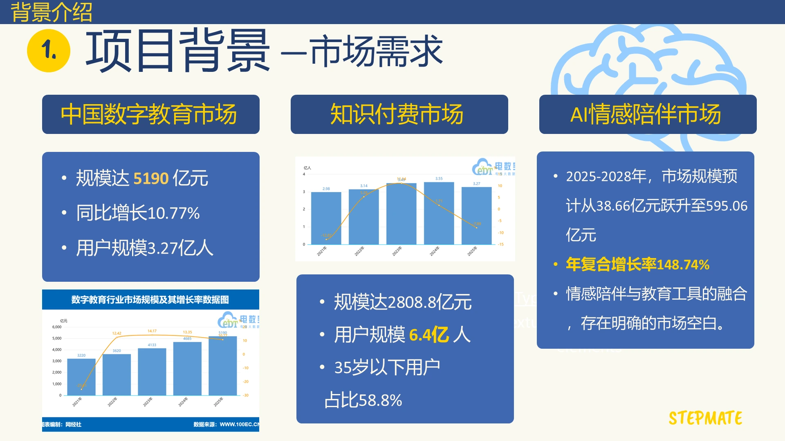
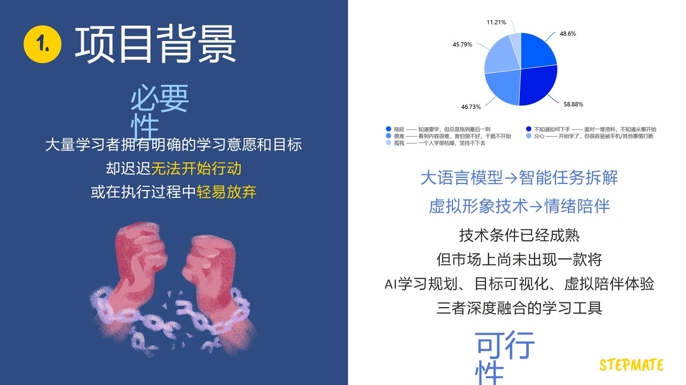
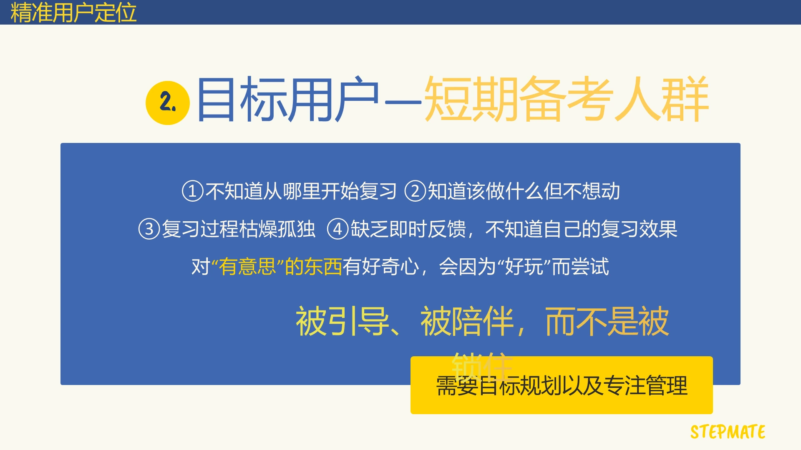

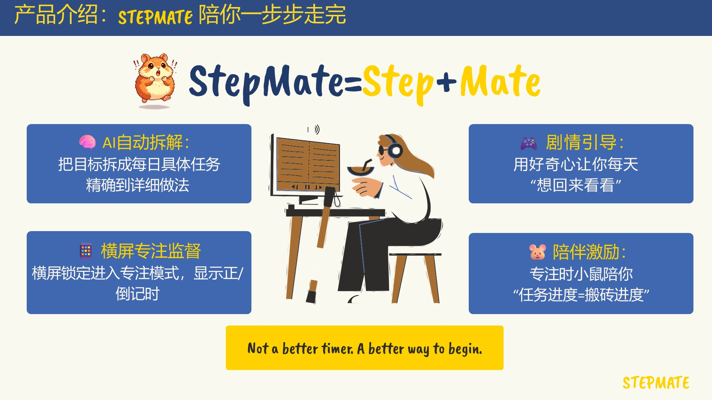
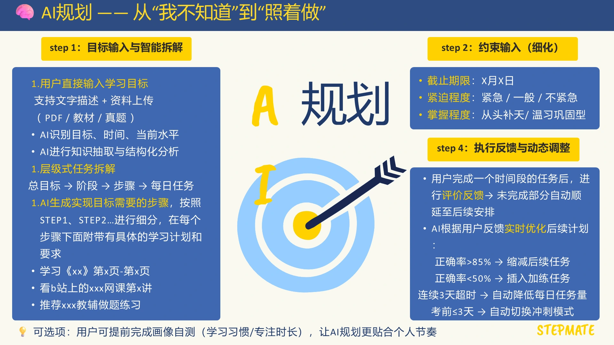
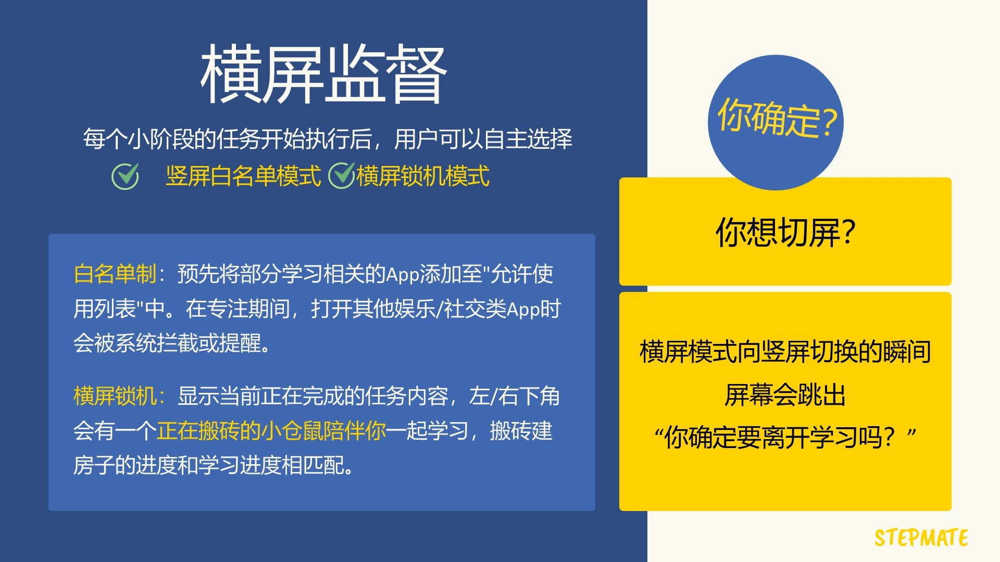


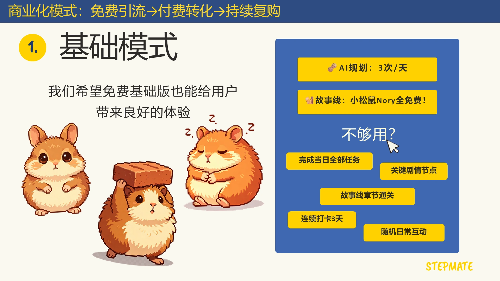

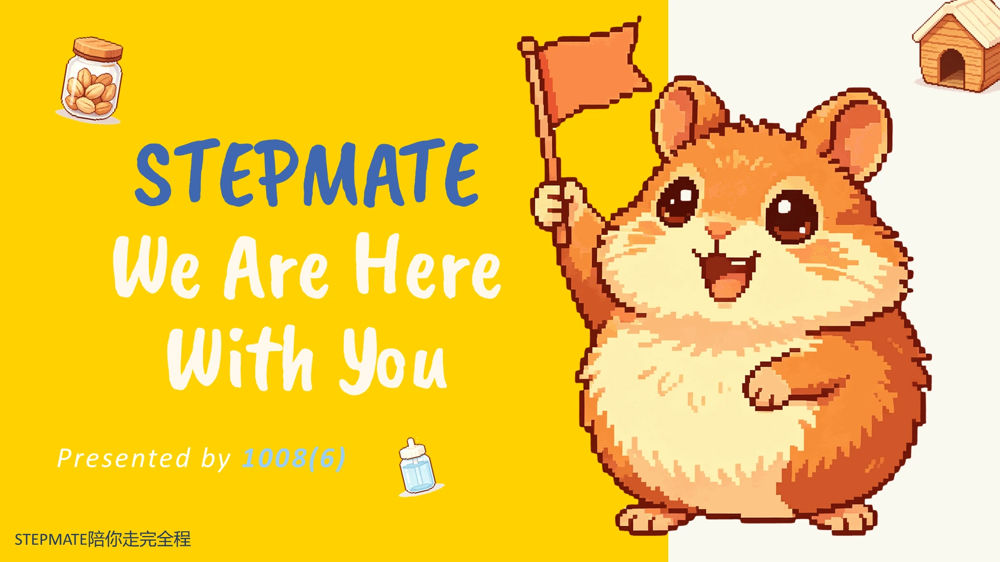
StepMate 是一款面向冲刺备考场景的 AI 伴学产品，定位“剧情式智能备考搭子”，服务期末、考研、四六级等倒计时期用户。
核心机制是“AI 拆解 + 剧情驱动”：用户只需上传教材、真题等资料并输入考试日期，AI 自动识别知识结构与薄弱点，将复习任务拆解到“今天看哪几页、做哪几题”的颗粒度，并按优先级动态排程。产品以游戏化剧情和虚拟形象陪伴替代传统惩罚式打卡，降低备考焦虑，提升执行黏性。
差异化在于：不做长期习惯养成，也不做通用待办，而是把“不知道从哪开始”到“一步步做完”做成闭环，让规划与执行合一。
STEPMATE
We Are Here
With You
Presented by 1008(6)
STEPMATE陪你走完全程
Types of Multimedia:
textual, visual and audio elements
Multimedia
1.
中国数字教育市场
规模达 5190 亿元
同比增长10.77%
用户规模3.27亿人
项目背景
知识付费市场
规模达2808.8亿元
用户规模 6.4亿 人
35岁以下用户
占比58.8%
AI情感陪伴市场
2025-2028年，市场规模预计从38.66亿元跃升至595.06亿元
年复合增长率148.74%
情感陪伴与教育工具的融合，存在明确的市场空白。
—市场需求
STEPMATE
背景介绍
1.
项目背景
必要性
大量学习者拥有明确的学习意愿和目标
却迟迟无法开始行动
或在执行过程中轻易放弃
可行性
大语言模型→智能任务拆解
虚拟形象技术→情绪陪伴
技术条件已经成熟
但市场上尚未出现一款将
AI学习规划、目标可视化、虚拟陪伴体验三者深度融合的学习工具
STEPMATE
需要目标规划以及专注管理
目标用户—短期备考人群
①不知道从哪里开始复习 ②知道该做什么但不想动
③复习过程枯燥孤独 ④缺乏即时反馈，不知道自己的复习效果
对“有意思”的东西有好奇心，会因为“好玩”而尝试
被引导、被陪伴，而不是被锁住
STEPMATE
精准用户定位
2.
典型代表：
谢同学：知道怎么开始，但是不想动”
徐同学：重度拖延，作业拖到最后一天晚上
STEPMATE
典型代表：
赵同学：“相关数学课太多，完全不知道从哪里开始”
核心痛点：
面对大量的资料和任务时缺乏拆解能力，无法将模糊目标转化为具体行动。
有学习意愿但缺乏方法论与规划能力
拖延型
核心痛点：
有明确目标、有学习资料，但启动阻力极大
能拖就拖，直到DDL前才被迫行动
任务量越大越不想开始，陷入“拖延→焦虑→更拖延”的恶性循环
功能偏好：
AI自动拆解任务，降低启动的心理压力
低门槛的启动引导，如打开软件直接弹出“当下的第一件小事”
直接可用的学习素材
目标用户分类
有心无力型
功能偏好：
阶梯式复习路径图
知识雷达图，直观看到薄弱项
每个任务精确到具体页码、题号、
预估时长
预测分数曲线，按目前进度，
期末能考多少分
孤独枯燥型
典型代表：
调查发现81.31%表示“会因虚拟形象更愿意打开软件”
多邻国持续打卡用户、Focus Friend用户
核心痛点：
长期独自备考缺乏情感支撑
学习过程枯燥易倦怠，缺乏即时反馈导致动力递减
注意力容易被手机分散，需要外部陪伴来维持专注状态
功能偏好：
接受可爱安静的虚拟形象陪伴，完成任务后偶尔弹出鼓励
愿意为解锁新皮肤、新剧情、新互动持续学习
需要连续打卡成长曲线、连击奖励等长效激励机制
Not a better timer. A better way to begin.
StepMate=Step+Mate
产品介绍： · 陪你一步步走完
🧠 AI自动拆解：
把目标拆成每日具体任务
精确到详细做法
🎮 剧情引导：
用好奇心让你每天
“想回来看看”
🐹 陪伴激励：
专注时小鼠陪你
“任务进度=搬砖进度”
STEPMATE
📱 横屏专注监督
横屏锁定进入专注模式，显示正/倒记时
STEPMATE
step 1：目标输入与智能拆解
规划
用户直接输入学习目标
支持文字描述 + 资料上传
（ PDF / 教材 / 真题 ）
AI识别目标、时间、当前水平
AI进行知识抽取与结构化分析
层级式任务拆解
总目标 → 阶段 → 步骤 → 每日任务
AI生成实现目标需要的步骤，按照STEP1、STEP2…进行细分，在每个步骤下面附带有具体的学习计划和要求
学习《xx》第x页-第x页
看b站上的xxx网课第x讲
推荐xxx教辅做题练习
🧠 AI规划 —— 从“我不知道”到“照着做”
step 2：约束输入（细化）
截止期限：X月X日
紧迫程度：紧急 / 一般 / 不紧急
掌握程度：从头补天/ 温习巩固型
step 4：执行反馈与动态调整
用户完成一个时间段的任务后，进行评价反馈→ 未完成部分自动顺延至后续安排
AI根据用户反馈实时优化后续计划：
正确率>85% → 缩减后续任务
正确率<50% → 插入加练任务
连续3天超时 → 自动降低每日任务量
考前≤3天 → 自动切换冲刺模式
STEPMATE
💡 可选项：用户可提前完成画像自测（学习习惯/专注时长），让AI规划更贴合个人节奏
AI
你确定？
横屏监督
每个小阶段的任务开始执行后，用户可以自主选择
竖屏白名单模式 横屏锁机模式
白名单制：预先将部分学习相关的App添加至"允许使用列表"中。在专注期间，打开其他娱乐/社交类App时会被系统拦截或提醒。
横屏锁机：显示当前正在完成的任务内容，左/右下角会有一个正在搬砖的小仓鼠陪伴你一起学习，搬砖建房子的进度和学习进度相匹配。
横屏模式向竖屏切换的瞬间
屏幕会跳出
“你确定要离开学习吗？”
你想切屏？
STEPMATE
1.
2.
3.
4.
爱搬砖的小仓鼠、疯狂长出血肉的骷髅小骨……
IP
形象
STEPMATE
……
独特IP形象—— 你的专属学习搭子
一场风暴冲垮了你的房屋、淹没了你的农田，鼠鼠究竟要怎么办才好？
除了接管废弃农村，每次学习你还可以选择骷髅寻觅、海上垂钓探险…
1.
2.
多条故事线任你选择
STEPMATE
不同剧情线
Use links to go to a different page inside your design. Highlight text, click on the link icon 🔗 above the text , and select the page you want to connect.
1.
2.
3.
不同剧情线，不同主角陪伴用户完成学习目标🎯
Different users, different ways to accompany.
剧情引导
废弃农场经营
骷髅长出血肉
海上木筏生存
治愈
搞笑
成就
基础模式
进阶模式
进阶模式
STEPMATE
——让学习不再枯燥
🥜AI规划：3次/天
完成当日全部任务
🐿️故事线：小松鼠Nory全免费！
连续打卡3天
故事线章节通关
1.
不够用？
关键剧情节点
随机日常互动
基础模式
我们希望免费基础版也能给用户
带来良好的体验
STEPMATE
商业化模式：免费引流→付费转化→持续复购
故事线解锁
¥8.8/条 或 ¥18.8/三条
皮肤换装
各形象的皮肤/装扮/场景
¥2-15/件
2.
规划次数直购
¥6/5次
¥12/12次
¥25/30次
进阶模式
只需要
就能获得更丰富的体验
¥9.9
STEPMATE
商业化模式：免费引流→付费转化→持续复购
STEPMATE
We Are Here
With You
Presented by 1008(6)
STEPMATE陪你走完全程
第 1 步 先把项目和这次视频认清楚
01 项目叫什么 现在做到哪一步
本次资料版本 / 日期：V1 组内版，2026-07-12。可用材料：《stepmate.pptx》14 页（路演版）、《stepmate功能简介.docx》、《StepMate路演讲稿.docx》、单页 HTML 界面原型 stepmate.html、任务总览界面参考图 1 张。
当前阶段：原型阶段。提案已成型，界面已做成可点击的单页原型，产品未上线。
已完成范围：目标用户三类分层与典型代表、四段式功能流程（目标输入 → 约束输入 → 执行反馈 → 动态调整）、横屏锁机专注与 IP 陪伴机制、三条剧情线与商业化定价设想、14 页路演材料、可点击 HTML 原型（覆盖「计划概览 / 学习记录」两屏）。
尚未完成范围：真实 AI 资料拆解与动态重排能力、移动端客户端、横屏锁机与白名单的系统级实现、剧情内容生产、任何用户测试。
02 这支视频在哪里 怎样被观看
现场能否放音、需要哪种语言：建议可放音；中文旁白＋中文字幕。若为静音轮播环境，须做到「全程字幕可独立看懂」，旁白信息不依赖声音传达。
硬性时长上限；没有则写「按内容确定」：按内容确定。建议 2–3 分钟（信息量见 Q04、Q16，压到 90 秒需砍掉 I06 与 I07 之一）
第 2 步 让制作方知道讲给谁 讲完留下什么
03 主要观众是谁 他们最想知道什么
主要观众（具体到身份）：训练营成果展示现场的评委老师与同营同学——他们第一次接触 StepMate，大多不是「此刻正在备考」的人，对 AI 伴学类产品也没有既定印象。
他们已经知道什么：知道「备考很难、拖延很普遍」这类常识；知道番茄钟、待办清单、学习博主计划表这些旧办法；不知道 AI 能把一份教材 PDF 拆到「今天看 P30–45、47 分钟」这个颗粒度。
他们最关心的问题 1：这东西和我手机里已有的番茄钟／打卡 App 到底差在哪？——差在「计划是 AI 从你的资料里拆出来的，而不是你自己编的」，且执行反馈会回流改写明天。
他们最关心的问题 2：一个学生小组真做出来了吗，还是只是一个 PPT 点子？——须诚实回答：目前是设计＋可点击原型，AI 能力未接真模型。
还需兼顾的其他观众：短期备考的在校生（潜在用户，看片后可能来展台试玩）；运营／宣传岗（需要能截取的画面）。
04 看完后 必须记住哪三件事
必须记住 1：观众应理解——短期备考的人卡住的不是资料不够，而是「不知道从哪开始」和「开始了也走不完」，这是启动阻力，不是懒惰。
必须记住 2：观众应理解——StepMate 把模糊目标拆成「今天这几件小事」：读完你上传的教材、课件、真题，拆到页码、题号、分钟，并按你真实的完成情况重排明天。
必须记住 3：观众应理解——它不靠惩罚靠陪伴：横屏锁机时有一只搬砖的小仓鼠陪你，剧情是任务完成后的奖励，不是开始前的门槛。
看完后希望观众做什么，或能复述什么：能对别人复述一句「它是一个把大目标拆成今天能做的小事、还有个小动物陪着你的剧情式备考搭子」；愿意到展台扫码试玩原型；评委能说出它与番茄钟／打卡 App 的差别在「计划来源」和「反馈回流」两点上。
若篇幅有限，最不能删的是哪一点、为什么：第 2 点。这是它与一切计时器类工具唯一的硬差异；剧情、IP、皮肤都可以删，删掉拆解，产品就退化成又一个番茄钟，全片立不住。
第 3 步 先用平实语言说清项目再列全用户
05 怎样用一句话介绍这个项目
为谁：为【期末还剩两周、考研还剩三十天、四六级还剩三周的短期备考在校生】
解决什么问题：解决【有意愿、有资料，却不知道从哪下手；坐到桌前又被手机打断；计划一拖就废】
主要通过什么方式：通过【AI 读你的资料自动拆到每日任务＋横屏锁机专注＋虚拟形象与剧情陪伴】
最后得到什么：让使用者得到【每天一份「照着做就行」的清单，和看得见的进度】
合成一句话：为短期备考的在校生，通过 AI 把资料拆成每天能做完的小任务、再用横屏专注和小动物陪伴把人按在桌前，解决「知道要学但开始不了、开始了也走不完」，让他们每天拿到一份照着做就能完成的清单。
06 本片必须讲到哪些产品使用者
用户类别 1 / 正在完成的任务 / 本片主次：拖延型（典型：谢同学「知道怎么开始，但不想动」；徐同学「重度拖延，作业拖到最后一晚」）／在 DDL 前把该复习的补完／主线，第一个讲
用户类别 2 / 正在完成的任务 / 本片主次：有心无力型（典型：赵同学「相关数学课太多，完全不知道从哪里开始」）／把一堆资料变成可执行的学习顺序／主线，第二个讲
用户类别 3 / 正在完成的任务 / 本片主次：孤独枯燥型（多邻国持续打卡用户、Focus Friend 用户）／一个人熬过长时间自习、维持动力／副线，第三个讲，承载剧情与 IP
还需介绍的用户（可继续加行）：临考焦虑的成人自学者、需要外部约束的考证人群——本片不展开，口播一句带过。
准备先讲哪一类，为什么：先讲拖延型。启动阻力最普遍、最好懂，15 秒内能让人对号入座；有心无力型接第二段，用来解释「拆解」到底怎么做到；孤独枯燥型放最后承接剧情与小动物，否则观众容易误以为这是个养成游戏。
第 4 步 跟着填一张完整用户逻辑卡
07 这个用户原来怎么做 具体卡在哪
I01 拖延型：知道该做什么，但坐不下来
内容编号 / 标题：I01 / 拖延型——知道该做什么，但坐不下来
谁在什么场景下，要完成什么任务：期末周前 1–2 周的大二学生（谢同学、徐同学），晚上八点坐在宿舍，要在 7 天内补完一门 4 学分数学课。
原来使用什么方法或工具：备忘录／纸质 to-do 列计划、番茄钟 App、B 站和小红书上抄来的「30 天速成计划」、最后靠熬夜突击。
具体在哪一步受阻：不是不知道要学什么，而是「打开书那一刻」。任务颗粒度太粗（「复习第三章」），写下来也不知道先动哪；一开始就挑最难的，二十分钟就放弃；手机一震就切走，回来要重新热身。
这个阻碍造成什么后果：拖到考前两三天通宵突击，正确率低、焦虑累积，下一次更不敢开始，形成「拖延 → 焦虑 → 更拖延」的循环。
I02 有心无力型：有资料，拆不动
内容编号 / 标题：I02 / 有心无力型——资料一堆，拆不动
谁在什么场景下，要完成什么任务：同时上四五门数学类课程的学生（赵同学），面对教材、课件、真题堆在一起，要在一周内理出「先学什么、后学什么」。
原来使用什么方法或工具：按老师上课顺序、按教材目录顺序、或干脆从第一章重新看一遍。
具体在哪一步受阻：无法把「复习完微积分」这种模糊目标翻译成具体动作；不知道哪些章节是高频考点、哪些可以放；多个文档之间不知道以谁为准。
这个阻碍造成什么后果：把时间花在已经会的章节上，薄弱点一直没碰；进度看似在推进，考前仍心虚。
依据在哪里；若只是设想请写明：PPT p5（有心无力型核心痛点与典型代表）；同上，无原始访谈记录。
I03 孤独枯燥型：学得下去，但撑不住
内容编号 / 标题：I03 / 孤独枯燥型——一个人坐不住
谁在什么场景下，要完成什么任务：习惯用多邻国打卡、Focus Friend 的学生，要在晚间连续自习 2–3 小时。
原来使用什么方法或工具：连击打卡、虚拟宠物、白噪音、和朋友连麦自习。
具体在哪一步受阻：前二十分钟还行，之后注意力被手机吸走；没有即时反馈，学没学会感受不到，动力逐日递减。
这个阻碍造成什么后果：单次专注时长越来越短，打卡断掉后彻底放弃。
依据在哪里；若只是设想请写明：PPT p5（含「81.31% 表示会因虚拟形象更愿意打开软件」这一引用数据）；同类产品机制参考 Focus Friend；数据出处见 Q12。
08 项目怎样帮助他 最后得到什么
I01 拖延型
沿用内容编号：I01
用户先做什么 / 提交什么：打开 App，一句话说出目标（「12 天后考微积分」），把 3–5 份资料拖进去（教材 PDF、老师课件、历年真题）。
项目接着处理什么（按先后写）：①识别资料结构：章节、知识点、真题题型与分值分布；②结合剩余天数与知识依赖关系排序；③拆到日任务，颗粒度到「今天看教材 P30–45、做习题 1–10、预计 47 分钟」；④把「高频＋你最薄弱」的标红排在最前；⑤执行后按反馈重排次日计划。
用户最终得到什么具体结果：每天打开就是一份照着做的清单（5 条任务、总时长约 2 小时 15 分），每条带页码、题号、预估时长；第一条足够小，可以直接开始。
哪些已验证，哪些只是设计目标：全部为设计目标。目前只有功能文档与静态界面原型，AI 拆解未接真实模型，「降低启动阻力」的幅度未测。
需要软件补充的步骤、限制或演示：拆解的真实准确率与耗时、支持的资料格式与单次上限、拆解失败时的兜底话术、以及一段能录屏的真实拆解演示（当前无）。
I02 有心无力型
沿用内容编号：I02
用户先做什么 / 提交什么：同样只做「上传资料＋填考试日期」；可选填三项约束（截止期限、紧迫程度、掌握程度：从头补天／温习巩固），或提前做一次学习习惯自测。
项目接着处理什么（按先后写）：①对比教材、课件、真题三者重合的知识点——重合度越高越优先；②识别课件里老师标注的「重点／必考」并提权；③按知识依赖排出阶梯式路径（总目标 → 阶段 → 步骤 → 每日任务）；④给每个任务配具体素材来源（看哪本书哪几页、B 站哪一讲、做哪套题）。
用户最终得到什么具体结果：一条阶梯式复习路径图＋一张知识雷达图，能直接看出薄弱项排在哪，而不是从头翻书。
哪些已验证，哪些只是设计目标：全部为设计目标；知识雷达图与预测分数曲线属设想，无算法与数据支撑。
需要软件补充的步骤、限制或演示：多文档重合度判断的实现方式、知识图谱来源（自建还是调用现成）、雷达图的评分口径。
I03 孤独枯燥型
沿用内容编号：I03
用户先做什么 / 提交什么：进入某个小阶段任务后，选择「横屏锁机」或「竖屏白名单」，再选一条剧情线（可跳过）。
项目接着处理什么（按先后写）：①横屏显示当前任务内容与正／倒计时；②角落里有搬砖的小仓鼠同步「施工」，学习进度＝建造进度；③切回竖屏时弹出「你确定要离开学习吗？」；④任务完成后解锁该段剧情，而不是开始前弹出。
用户最终得到什么具体结果：一段有陪伴感的专注时间＋一段新解锁的剧情＋一处可见的「建成了」的画面；「已完成剧情」存档页可回看。
哪些已验证，哪些只是设计目标：全部为设计目标；横屏锁机涉及系统级权限，尚未验证可行性；界面参考图为 AI 生成示意图，非真机截图。
需要软件补充的步骤、限制或演示：锁机权限的实现路径与两端系统限制、仓鼠动画的最小可行版本、剧情解锁的触发规则。
第 5 步 解释差异 也保留做事过程
09 与原有做法相比 究竟改变了什么
比较维度（只选一个）：操作步骤——具体看「计划是谁拆的、拆到多细」这一步。
原有做法 / 对照对象怎样处理：番茄钟、待办清单、学习博主的计划表：计划由人手工拆，颗粒度靠自觉（「复习第三章」）；完成记录不回流，第二天的计划不会因为昨天没做完而改变。
本项目准备或已经怎样处理：计划由 AI 从资料里拆出来，颗粒度到页码／题号／分钟；执行反馈回流并改写后续安排——正确率 >85% 缩减后续任务，<50% 插入加练，连续 3 天超时降低每日任务量，考前 ≤3 天自动切「冲刺模式」。
这种差异对哪类用户有何价值：对有心无力型价值最大——他们的瓶颈是拆不动而不是不想学；对拖延型的价值在「第一步变小了」，启动门槛下降。
依据 / 适用条件 / 当前状态：机制出自《stepmate功能简介》「执行中的动态优化」与 PPT p7 step4；属设计目标，未做易用性实测，也没有与番茄钟／学习 App 的对照测试，片中不能用「提升 X%」这类结论。
10 团队做过什么 又为什么调整
过程发生的日期 / 阶段：2026 年 7 月上旬（X-Lab 训练营项目期内），从概念成形到路演材料定稿。
团队实际做了什么：完成三类备考人群的分层与典型代表梳理；设计四段式功能流程；设计横屏锁机＋IP 陪伴＋三条剧情线；定商业模式与定价档位；产出 14 页路演 PPT、演讲稿、功能简介，并做出单页可点击 HTML 原型。
发现、反馈或遇到的问题：组内反复确认「剧情是调味剂，不是主菜」——早期方向容易滑成养成游戏，偏离「帮人把复习做完」；也发现付费墙设得太靠前会直接劝退用户（参照 Focus Friend：免费版应已完整可用）。
因此调整了什么；若未调整写原因：①明确「AI 规划＋专注执行」为核心，剧情线改为可跳过、任务完成后解锁，作为奖励而非门槛；②付费点后移到「增强体验」（故事线解锁、皮肤、规划次数直购），免费版保留每天 3 次规划与一条完整免费故事线。
过程证据（记录、照片、版本等）位置：《stepmate功能简介.docx》有关「剧情方面」的四段（可跳过／完成后解锁／付费墙克制）、PPT p11–p13；无设计稿版本记录、无会议纪要。
资料缺口与补充人：缺用户访谈原始记录、原型测试记录、设计稿迭代版本——需项目组产品／设计同学补。
第 6 步 把成果和数字的性质写明白
11 哪些成果已经完成 哪些还在计划中
已经完成的具体工作或交付物：产品定位与用户分层、四段式功能流程、剧情／IP／横屏专注机制设计、商业化与定价设想、14 页路演材料、可点击的 HTML 界面原型（计划概览、学习记录两屏）。
可查看的成果文件 / 版本 / 日期：stepmate.pptx（2026-07-12，14 页）、stepmate功能简介.docx（2026-07-11）、StepMate路演讲稿.docx（2026-07-12）、stepmate.html（2026-07-11）、任务总览界面参考图（2026-07-11，AI 生成）。
哪些效果已有证据，证据在哪里：只有「产品设计」层面的证据（文档＋原型＋可点击流程）。市场数据为外部引用（见 Q12），无用户使用数据、无留存与转化数据、无拆解效果测试。
尚未完成或未验证的部分：真实 AI 拆解与准确率、动态重排逻辑、移动端客户端、横屏锁机与白名单的系统权限、剧情内容生产、付费转化。
下一步准备验证什么问题：一名期末备考学生，在无人指导下能否独立走完「上传资料 → 生成计划 → 执行第一天」，以及第二天是否愿意回来。
12 每个重要数字从哪里来 代表什么
数字 12-1
数字或含数字的完整表述：中国数字教育市场规模 5190 亿元、同比增长 10.77%、用户 3.27 亿人；知识付费市场 2808.8 亿元、用户 6.4 亿人、35 岁以下占 58.8%。
单位 / 时间期间 / 对象或分母：人民币亿元／报告统计年度在 PPT 中未标注（待核）／中国数字教育与知识付费市场整体。
性质：外部引用。
原始来源、页码或数据表、发布日期：PPT p2；原始报告名称、发布机构、发布日期均未标注，需补。
计算方法或关键假设：直接引用，团队未自算。
是否与其他材料冲突；由谁核对：不同机构统计口径差异较大，上片前需市场同学核对；若核不到原始出处，建议改为定性表述「千亿级市场」，不念具体数值。
数字 12-2
数字或含数字的完整表述：AI 情感陪伴市场 2025–2028 年由 38.66 亿元增至 595.06 亿元，年复合增长率 148.74%；另「81.31% 的受访者表示会因虚拟形象更愿意打开软件」。
单位 / 时间期间 / 对象或分母：人民币亿元／2025–2028 年预测／AI 情感陪伴市场；81.31% 的样本量与调查方未标注。
性质：外部引用（148.74% 为机构预测值，不是实测）。
计算方法或关键假设：CAGR 由首末年数值推得，属预测口径。
是否与其他材料冲突；由谁核对：属预测，片上必须带「预计」二字；由项目组核对来源后决定是否保留。
数字 12-3
数字或含数字的完整表述：故事线 ¥8.8/条 或 ¥18.8/三条；皮肤 ¥2–15/件；规划次数 ¥6/5 次、¥12/12 次、¥25/30 次；进阶版 ¥9.9；免费版每天 3 次 AI 规划＋一条免费故事线。
单位 / 时间期间 / 对象或分母：人民币／一次性买断（非订阅）／单人。
性质：目标（组内定价设想）。
原始来源、页码或数据表、发布日期：PPT p12–p13（2026-07-12）。
计算方法或关键假设：参考同类产品定价区间（Focus Friend 等）做的主观设值，未做价格敏感度测试。
是否与其他材料冲突；由谁核对：¥9.9 的覆盖范围在 PPT 中表述不明确（是月度权益还是单次解锁），需项目组统一；未售卖，绝不能表述为「定价」。
第 7 步 商业内容 涉及才展开 不涉及写原因
13 谁付费 买到什么 价格怎么算
本片是否涉及收费；不涉及的原因：涉及，但处在设想阶段，尚未产生任何收入。片中只需讲清「免费版能完整用，付费买的是更丰富的陪伴体验」，不必逐档报价。
谁使用 / 谁购买 / 买到什么：使用者与购买者是同一人——在校短期备考学生，个人自付。买到的是更多规划次数、更多故事线与形象装扮，即更丰富的体验，而不是解锁基础功能。
本档名称 / 价格 / 币种 / 收费周期：基础版 免费（每天 3 次 AI 规划，故事线「小松鼠 Nory」全免费）；进阶版 ¥9.9；故事线 ¥8.8/条、¥18.8/三条；皮肤 ¥2–15/件；规划次数包 ¥6/5 次、¥12/12 次、¥25/30 次。币种人民币，均为一次性买断，无订阅。
人数或用量 / 核心权益 / 使用限制：单人使用；免费版功能已完整可用（这是刻意设计，避免劝退）；规划次数按天重置，超出需购买或等次日；剧情线可整条跳过，不影响核心路径。
价格性质（已售 / 拟定）及原表位置：拟定（组内设想），来源 PPT p12–p13，2026-07-12。
还需提交的其它档位、差异或待核口径：①是否改用订阅制未定；②¥9.9 对应权益需明确；③「免费版完整可用」与「规划每天 3 次」之间的张力，对外表述需统一。
14 用户从哪里来 为什么持续使用
本片是否涉及增长或留存；不涉及的原因：涉及（仅设计层面，无任何真实数据）。
第一次使用时得到什么价值：三分钟内拿到第一份「今天学什么」的清单——即时、具体、不用自己想；这是唯一能在首次使用就兑现的价值，也是留存的前提。
为什么以后还会回来或继续购买：①计划每天更新，不看就不知道今天做什么（功能依赖）；②剧情在任务完成后才解锁，形成「想看看鼠鼠建到哪了」的牵挂（情感牵引）；③连续打卡与成长曲线（沉没成本）。
传播、推荐或社区激励怎样发生：「已完成剧情」存档页与建造进度截图天然可分享；同学之间「你也在补天」的口耳传播；暂无邀请奖励设计。
哪些已经发生，哪些是计划；依据在哪里：全部为计划。无投放记录、无留存数据、无转化数据；依据为 PPT p12 与功能简介相关段落。
第 8 步 排清下一步 也防止重要内容被漏掉
15 下一阶段先做什么 如何判断完成
是否需要介绍未来规划；不涉及的原因：需要（片中建议只用一句字幕带过，不占正片时间）。
阶段 / 预计时间：原型验证阶段／2026 年秋季学期期末前（材料为 7 月版，若已推进请覆盖）。
准备完成的具体动作：①接一个可用模型 API，跑通「上传资料 → 结构化拆解 → 日任务」链路（先只支持 PDF 教材与真题两类）；②把 HTML 原型做成可安装的移动端 Demo，至少覆盖「输入 → 任务清单 → 横屏专注」三屏；③招募 10–20 名期末备考学生做 3 天可用性测试。
预期交付物或用户结果：可跑通全流程的 Demo 安装包；一份测试记录，含首日任务完成率、次日回访率、卡点清单。
怎样判断完成（指标或检查方式）：测试者能在无人指导下独立完成「上传 → 生成计划」；首日任务完成率 ≥60%；次日回访 ≥50%（组内拟定的检查口径，不是对外承诺）。
前提条件 / 尚需资源 / 当前依据：模型调用额度、一位能做移动端的同学、测试样本招募渠道；当前依据仅为设计文档与原型。
16 原稿哪些内容必须讲 哪些可以省略
I04 用户分层与痛点
内容编号 / 具体要讲什么：I04 / 三类备考人群（拖延型、有心无力型、孤独枯燥型）各自的核心痛点与典型代表。
原稿文件及页码 / 文档位置：stepmate.pptx p4–p5。
本版范围（必须讲 / 可压缩 / 不讲）：必须讲。三类不必平均分配，每类一句痛点＋一个典型代表即可。
为什么这样选择：这是全片唯一的共情入口，观众要对号入座才会继续看功能。
对应文字、图表或素材编号 A：A01（PPT p4–p5，可重绘）。
需要软件核对或补充的内容：典型代表（谢、徐、赵三位同学）是否可使用真实姓名，需征得同意，否则用「某同学」。
I05 四段式功能流程
内容编号 / 具体要讲什么：I05 / step1 目标输入与拆解 → step2 约束输入 → step4 执行反馈与动态调整（step3 为执行，与 I06 合并讲）。
原稿文件及页码 / 文档位置：stepmate.pptx p7；stepmate功能简介.docx「AI拆解＋剧情线选择」全节。
本版范围：必须讲，但压缩为四拍「输入 → 拆解 → 执行 → 重排」；三项约束与各档正确率阈值压成一句字幕。
为什么这样选择：这是产品核心差异（见 Q04、Q09），也是评审唯一能判断「是否真做了东西」的地方；细节数值上屏会拖慢节奏且经不起追问。
对应文字、图表或素材编号 A：A01（p7）、A02（功能简介）。
需要软件核对或补充的内容：正确率阈值（85%／50%）与「连续 3 天超时」是否为最终规则。
I06 横屏锁机与 IP 陪伴
内容编号 / 具体要讲什么：I06 / 横屏锁机专注、仓鼠搬砖与学习进度同步、切屏时的「你确定要离开学习吗？」、IP 形象（小仓鼠、骷髅小骨）。
原稿文件及页码 / 文档位置：stepmate.pptx p6、p8、p9；界面参考图 1 张。
本版范围：必须讲——这是「陪伴」最直观的证据，也是全片最好看的一屏。
为什么这样选择：前两拍讲理性（拆解），这一拍给情绪，观众记住的往往是画面。
对应文字、图表或素材编号 A：A03（p8–p9）、A05（界面参考图，AI 生成）。
需要软件核对或补充的内容：现有画面均为设计示意，须在角标注明「设计示意」；真机录屏仍缺。
I07 剧情线与商业化
内容编号 / 具体要讲什么：I07 / 剧情线机制（任务完成后解锁、可跳过）与「免费版可完整使用」的商业原则。
原稿文件及页码 / 文档位置：stepmate.pptx p10–p13；功能简介「剧情方面」四段。
本版范围：可压缩。剧情只讲一条线（废弃农场／鼠鼠重建家园），不铺全部三条；商业化只保留「免费版能完整用」一句，不逐档报价。
为什么这样选择：讲全三条线会让观众以为是游戏宣传片；逐档报价会让视频变成价目表，也会把未验证的定价当成承诺。
对应文字、图表或素材编号 A：A01（p10–p13）、A05。
需要软件核对或补充的内容：三条剧情线的正式名称与优先级（现文档标注「待定」）。
第 9 步 交出项目自己的图像与审美依据
17 哪些图文最能让人认出这个项目
使用场景、过程照片或其它关键图文：14 页路演 PPT 可作分镜骨架；stepmate.html 可录屏演示「计划概览 / 学习记录」两屏的点击流程；无团队工作照、无用户使用照、无真机录屏。
素材版本、来源及对应内容 I 编号：A01 stepmate.pptx 2026-07-12（→I04–I07）；A02 功能简介 2026-07-11（→I05、I07）；A03 路演讲稿 2026-07-12（→口播基调）；A04 stepmate.html 2026-07-11（→I06 界面）；A05 界面参考图 2026-07-11（→I06）。
可用范围（展览 / 公开传播 / 仅参考）和需遮挡内容：A01–A04 可用于训练营内部展示与路演；对外公开传播需项目组书面同意。A05 为 AI 生成图，仅作风格参考，不得作为「产品实拍」对外发布。无需遮挡内容（图内已无个人信息）。
缺少什么原图或原片，由谁补：真机录屏（横屏专注＋仓鼠搬砖动画）、IP 形象定稿三视图、团队合照／工作照——由项目组补，时间待定。
18 希望是什么观感 参考里具体喜欢什么
希望观众感到什么，为什么适合项目：先有一点「这不就是我」的轻微刺痛（期末前的自己），再是「原来可以这么开始」的松弛，最后是「有人陪着」的暖意。因为目标用户是深夜独自补天的学生，冷色调的效率工具会加重压力，暖色与小动物才贴合「搭子」这个定位。
参考图 / 视频链接或文件：①Focus Friend（用户专注时，主角豆子继续织毛线，专注越久袜子越多）；②像素风经营游戏（《星露谷物语》式农场界面的信息层级）；③现有 PPT 封面（暖色地平线＋大字标题）作为色彩与气质基调。
具体参考它的什么（配色、构图、动作、声音等）：①机制可视化——把「专注时长」翻译成「织出了多少袜子／砌了多少块砖」，让进度可见；②低刺激的像素暖色与留白；③安静、不聒噪的陪伴感（不靠弹窗催促）。
不希望照搬的部分：不要做成游戏宣传片（大段剧情动画、花哨转场、燃向配乐）；不要用「高效」「智能」「一键」这类词；不要出现「提分」「保过」「逆袭」类承诺。
项目适合的视觉动作与声音方向：一条贯穿全片的「砖块／木条累加」动作，把每一次任务完成串起来；镜头以竖屏手机屏为画框（贴合移动端产品）；声音用轻木质敲击＋环境音（鸟叫、风、翻页），旁白克制、口语化，允许有停顿。
不应出现的风格或误解：不要赛博蓝光效与数据流（会把它拍成 AI 工具而不是搭子）；不要出现未成年人形象；不要把备考焦虑夸张化（痛哭、堆成山的卷子）；不要暗示产品已上线可下载。
第 10 步 收好结尾 再交一个能打开的资料包
19 结尾要留下什么 哪些词必须读对
结尾希望留下的一句话：StepMate——不做一个更好的计时器，做一个更好的开始。（配英文：Not a better timer. A better way to begin.）
项目名、术语、缩写及读音：StepMate 读 /ˈstepmeɪt/（近似「斯泰普梅特」，两音节连读，不要读成 step 与 mate 两个重音词）；「剧情式备考搭子」中「搭子」读 dā zi；AI、IP、DDL 首次出现建议加中文（DDL→截止日期）。
必须保持的说法 / 容易被误解的承诺：必须说明「当前为设计与原型阶段」；不得把拆解准确率、提分效果、用户规模、市场规模当作已实现成绩；「免费」须限定为「基础功能免费且可完整使用」；不出现「AI 老师」「保过」「提分 X 分」。
20 资料在哪里 交给谁 还缺什么
资料包文件夹或可访问链接：
当前说明文档的名称 / 版本 / 日期：stepmate功能简介.docx，V1，2026-07-11（内容最全，建议作主说明文档）
素材 A 编号 / 文件位置 / 对应 I 编号：
另一个素材 A 编号 / 文件位置 / 对应 I 编号：
尚缺内容 / 补充人 / 预计补齐时间：真机录屏、IP 形象定稿、用户测试记录、市场数据原始出处——项目组（产品／设计／市场）补，时间待定
本次交付人 / 日期；是否检查链接可打开：待填（运营部门）；本地文件夹路径可直接打开，无线上链接需检查
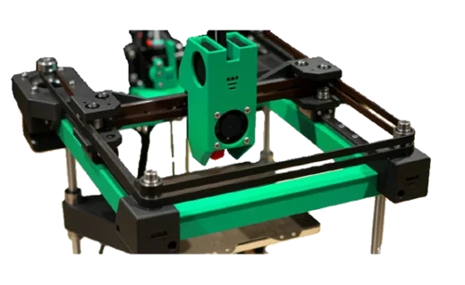
05.移动3D打印机器人汽车改装件尺寸大、批量小，怎样制造才合算？团队走访杭州汽车城，并了解车队的气动件需求，由此提出用移动机器人进行 3D 打印的方案。


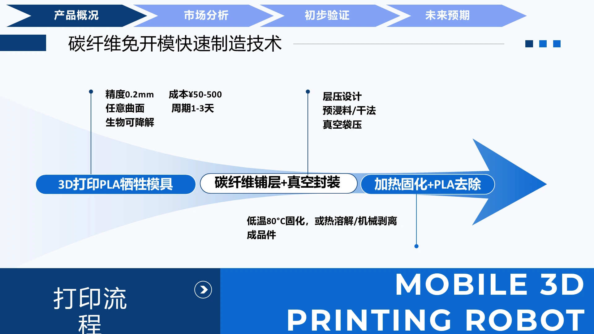

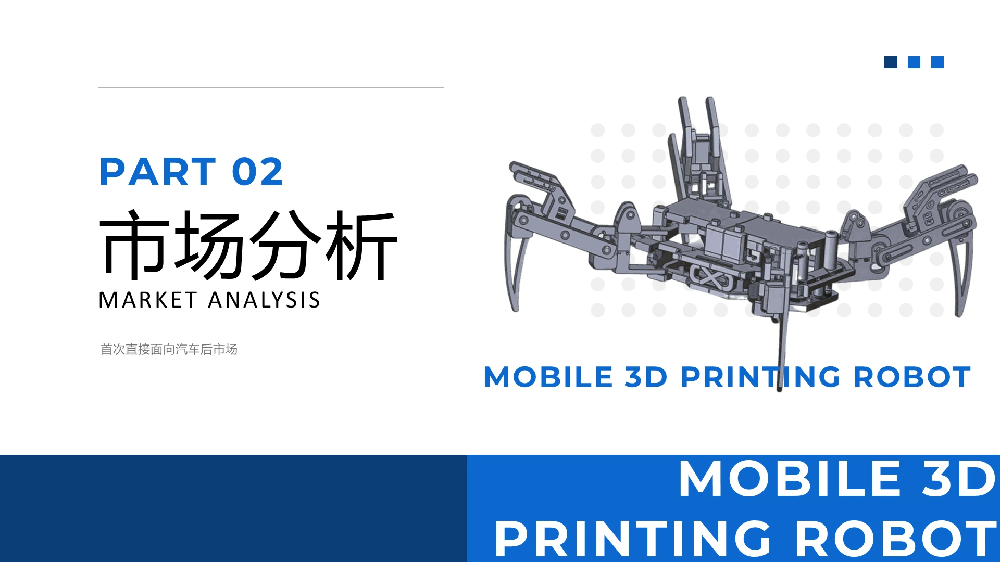

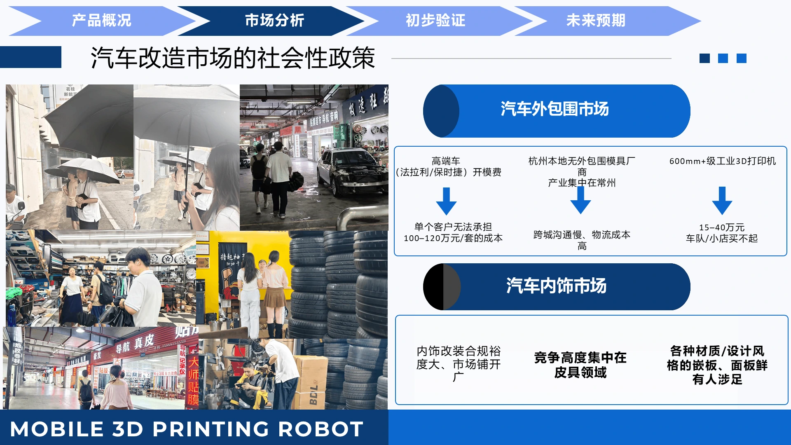
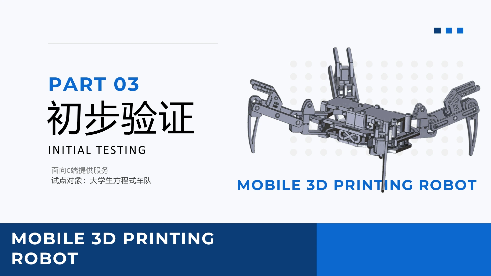
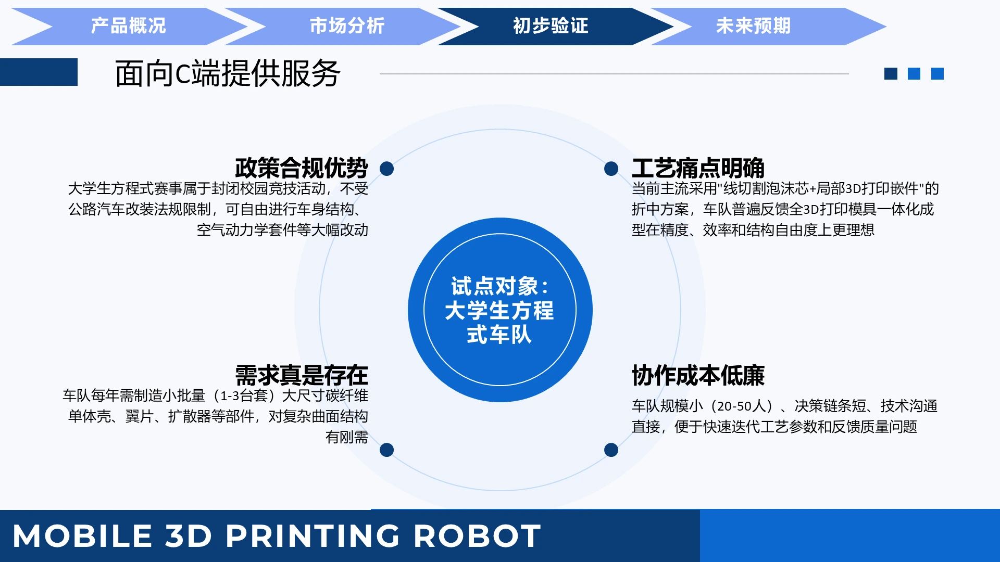

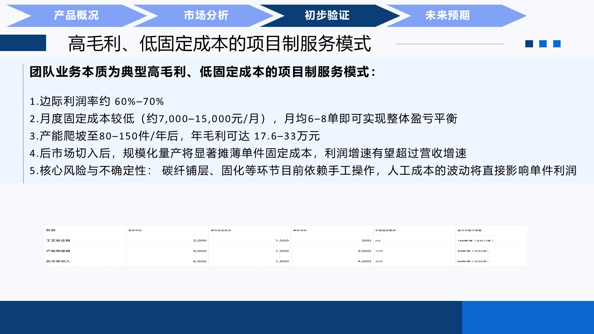


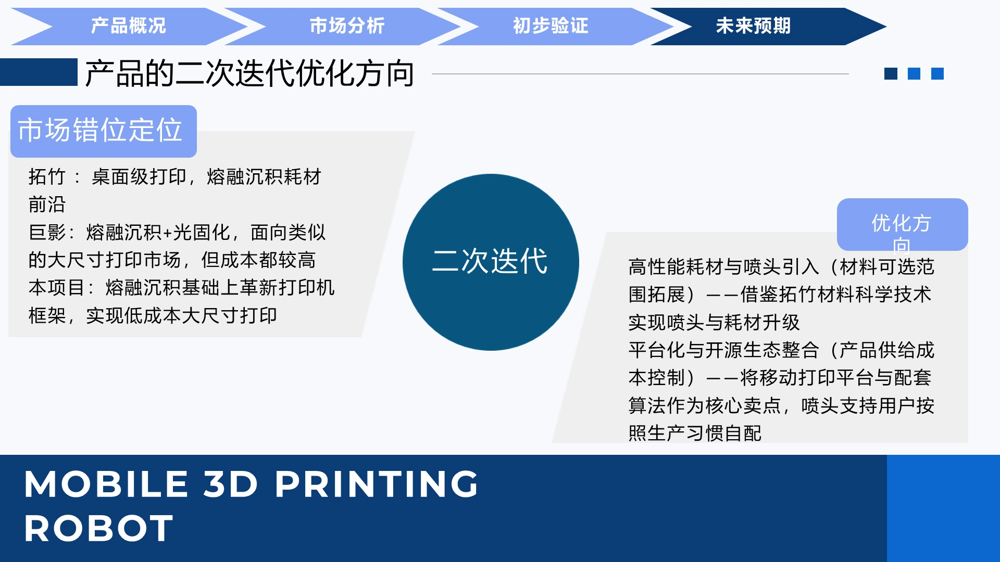
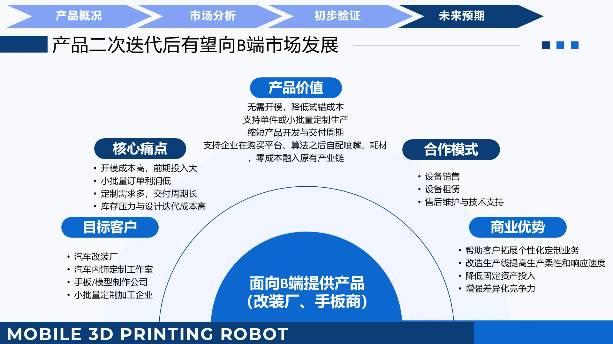

移动3D打印机器人
——在汽车后市场的应用【提案】
面向汽车后市场的大尺寸、小批量定制需求，项目探索用移动3D打印降低成型空间和开模成本带来的限制。团队已走访杭州汽车城，并向深圳技术大学极光车队了解复杂气动件的制造需求。
机器人采用四足三自由度行走机构，结合路径规划扩大打印范围。按数字模型打印可去除的 PLA 底模，经碳纤维铺层、真空封装、加热固化和脱模，省去开制金属模具的环节。
短期面向大学生方程式车队提供项目制试制服务，跑通从数字模型到力学测试的流程。中期拓展至区域赛事联盟，通过平台规划排产和订单追踪，验证小批量交付能力。长期择机进入汽车后市场，从内饰嵌板等非结构件切入，迭代喷头与耗材方案，面向改装厂和手板企业探索设备销售、租赁及技术支持。
MOBILE 3D PRINTING ROBOT IN THE AUTOMOTIVE AFTERMARKET
移动3D打印机器人在汽车后市场的应用
组长：张轩瑞
组员：左薛瑞 方子怡
钟妍 王若涵
刘子涵 段茗萱
第一组：什么档次和我作对
MOBILE 3D PRINTING ROBOT
目录
CONTENTS
产品概况
PRODUCT OVERVIEW
01
市场分析
MARKET ANALYSIS
02
INITIAL TESTING
03
未来预期
EXPECTED FUTURE
04
初步验证
MOBILE 3D PRINTING ROBOT
产品概况
PART 01
本项目开发一款可爬行移动的 3D 打印机器人，通过四足 3 自由度行走机构实现全空间灵活移动
PRODUCT OVERVIEW
MOBILE 3D PRINTING ROBOT
MOBILE 3D PRINTING ROBOT
外形小巧
可爬行移动
精准打印
碳纤维免开模快速制造技术
3D打印PLA牺牲模具
碳纤维铺层+真空封装
加热固化+PLA去除
精度0.2mm 成本¥50-500
任意曲面 周期1-3天
生物可降解
层压设计
预浸料/干法
真空袋压
低温80°C固化，或热溶解/机械剥离
成品件
产品概况
市场分析
初步验证
未来预期
打印流程
MOBILE 3D PRINTING ROBOT
场 景
小批量定制（1-50件）
原型验证（3-5天出件）
复杂中空件、赛车/改装、外观覆盖件
快速迭代
优 势
技术性解决低成本大尺寸定制件3D打印问题
特 色
快速原型与小批量定制化场景下的最优解
用精度换速度，耐温换成本，适合气动件或外包围件
大尺寸打印件低成本定制的突破
90%
80%
成本降低90%
周期缩短80%
产品概况
市场分析
初步验证
未来预期
胜任力
大尺寸免开金属模
复杂结构一体化成型
MOBILE 3D PRINTING ROBOT
参考文献
《Carbon Fiber Parts Manufacturing With 3D Printed Molds》
市场分析
PART 02
首次直接面向汽车后市场
MARKET ANALYSIS
MOBILE 3D PRINTING ROBOT
MOBILE 3D PRINTING ROBOT
汽车改造市场具有的政策性支撑
三条红线
美国
一个趋势
欧盟
国内&国际
国内
三条红线+一个趋势
《道路交通安全法》：禁止擅自改变登记结构
《机动车登记规定》：改变外观需申请变更
GB 7258/1589：外部突出物、外廓尺寸限值
标注"Show Use Only"
政策正从一刀切转向量化管理
定位展示件/母模
产品概况
市场分析
初步验证
未来预期
国际
展示件/赛道件统一原则
德国
日本
提示咨询TÜV
提示主动申报
脚踏板符合宽度指标即可合法报备
原厂预留安装孔位，说明企业已考虑合规
政策性的市场分析
MOBILE 3D PRINTING ROBOT
高端车
（法拉利/保时捷）开模费
单个客户无法承担
100–120万元/套的成本
杭州本地无外包围模具厂商
产业集中在常州
跨城沟通慢、物流成本高
600mm+级工业3D打印机
15–40万元
车队/小店买不起
汽车外包围市场
汽车内饰市场
汽车改造市场的社会性政策
产品概况
市场分析
初步验证
未来预期
内饰改装合规裕度大、市场铺开广
竞争高度集中在皮具领域
各种材质/设计风格的嵌板、面板鲜有人涉足
MOBILE 3D PRINTING ROBOT
试点对象：大学生方程式车队
初步验证
PART 03
面向C端提供服务
INITIAL TESTING
MOBILE 3D PRINTING ROBOT
MOBILE 3D PRINTING ROBOT
面向C端提供服务
当前主流采用"线切割泡沫芯+局部3D打印嵌件"的折中方案，车队普遍反馈全3D打印模具一体化成型在精度、效率和结构自由度上更理想
工艺痛点明确
车队规模小（20-50人）、决策链条短、技术沟通直接，便于快速迭代工艺参数和反馈质量问题
协作成本低廉
大学生方程式赛事属于封闭校园竞技活动，不受公路汽车改装法规限制，可自由进行车身结构、空气动力学套件等大幅改动
政策合规优势
车队每年需制造小批量（1-3台套）大尺寸碳纤维单体壳、翼片、扩散器等部件，对复杂曲面结构有刚需
需求真是存在
产品概况
市场分析
初步验证
未来预期
试点对象：大学生方程式车队
MOBILE 3D PRINTING ROBOT
平台设计思路
MOBILE 3D PRINTING ROBOT
产品概况
市场分析
初步验证
未来预期
模型上传
智能排产
车队协作
过程追踪
碳纤方案
售后体系
高毛利、低固定成本的项目制服务模式
团队业务本质为典型高毛利、低固定成本的项目制服务模式：
1.边际利润率约 60%–70%
2.月度固定成本较低（约7,000–15,000元/月），月均6–8单即可实现整体盈亏平衡
3.产能爬坡至80–150件/年后，年毛利可达 17.6–33万元
4.后市场切入后，规模化量产将显著摊薄单件固定成本，利润增速有望超过营收增速
5.核心风险与不确定性： 碳纤铺层、固化等环节目前依赖手工操作，人工成本的波动将直接影响单件利润
产品概况
市场分析
初步验证
未来预期
二次迭代后有充分条件投入市场规模化生产
工艺验证期（当前—1年内）
聚焦2-3支核心合作车队，跑通"数字模型→打印底模→碳纤成型→力学测试"完整闭环
建立关键工艺参数库（固化温度曲线、层压顺序、脱模方案），稳定合格率至90%以上
产能爬坡期（1-2年）
扩大车队覆盖范围至区域赛事联盟，验证小批量复用性
优化打印设备利用率与碳布供应链，降低单件边际成本
后市场切入（政策窗口期）
跟踪国内汽车改装政策松绑动态
基于前期积累的工艺数据与口碑，向前期市场调研中识别的汽车后市场改装店、性能工作室、个性化定制品牌开放接单
初期以非结构性外观件切入，逐步扩展至结构增强件
MOBILE 3D PRINTING ROBOT
规模化与
后市场拓展路径
产品概况
市场分析
初步验证
未来预期
未来预期
PART 04
EXPECTED FUTURE
MOBILE 3D PRINTING ROBOT
MOBILE 3D PRINTING ROBOT
产品的二次迭代优化方向
产品概况
市场分析
初步验证
未来预期
市场错位定位
拓竹 ：桌面级打印，熔融沉积耗材前沿
巨影：熔融沉积+光固化，面向类似的大尺寸打印市场，但成本都较高
本项目：熔融沉积基础上革新打印机框架，实现低成本大尺寸打印
优化方向
高性能耗材与喷头引入（材料可选范围拓展）——借鉴拓竹材料科学技术实现喷头与耗材升级
平台化与开源生态整合（产品供给成本控制）——将移动打印平台与配套算法作为核心卖点，喷头支持用户按照生产习惯自配
MOBILE 3D PRINTING ROBOT
二次迭代
产品二次迭代后有望向B端市场发展
核心痛点
产品价值
目标客户
合作模式
面向B端提供产品
（改装厂、手板商）
开模成本高，前期投入大
小批量订单利润低
定制需求多，交付周期长
库存压力与设计迭代成本高
无需开模，降低试错成本
支持单件或小批量定制生产
缩短产品开发与交付周期
支持企业在购买平台、算法之后自配喷嘴、耗材，零成本融入原有产业链
汽车改装厂
汽车内饰定制工作室
手板/模型制作公司
小批量定制加工企业
设备销售
设备租赁
售后维护与技术支持
商业优势
帮助客户拓展个性化定制业务
改造生产线提高生产柔性和响应速度
降低固定资产投入
增强差异化竞争力
产品概况
市场分析
初步验证
未来预期
MOBILE 3D PRINTING ROBOT
MOBILE 3D PRINTING ROBOT
THANKS FOR WATCHING
感谢观看
组长：张轩瑞
组员：左薛瑞 方子怡
钟妍 王若涵
刘子涵 段茗萱
第一组：什么档次和我作对
第 1 步 先把项目和这次视频认清楚
01 项目叫什么 现在做到哪一步
项目正式名称 / 简称：移动3D打印机器人
本次资料版本/ 日期：2026年11月11日
当前阶段及已完成范围：提案
02 这支视频在哪里 怎样被观看
观看场合（展览 / 路演 / 教学 / 其他）：可视情况用于学习成果展
现场能否放音 、需要哪种语言：【看情况均可】
硬性时长上限；没有则写“按内容确定 ”：【按内容确定】
需要交付的版本及日期：【无特别要求】
开场 片名《移动3D打印机器人在汽车后市场的应用》，下方标注“项目提案”。用图1呈现四足行走机构。
技术方案 用图1、图2说明移动与打印，用图3讲清“打印 PLA 底模 → 碳纤维铺层和真空封装 → 固化去模”。
调研与应用 先用图4交代汽配城走访，再用图5说明方程式车队的复杂件需求。图5字幕写“极光车队既有样件”。
第 2 步 让制作方知道讲给谁 讲完留下什么
03 主要观众是谁 他们最想知道什么
主要观众（具体到身份）：【首次接触项目的成果展观众】
他们已经知道什么：【通过介绍初步了解移动3D打印机器人的技术概念】
他们最关心的问题 1：【商业化的总体想法和路线】
他们最关心的问题2：【为什么选择这个方向，初步怎么实现起步/怎么看待不同阶段的制约条件】
还需兼顾的其他观众：【对技术实现和市场分析/竞品定位感兴趣的广泛观众】
04 看完后 必须记住哪三件事
固定式打印机的成型空间有限，传统开模也难在小批量订单中摊薄成本。
方案用四足三自由度机构移动打印，以 PLA 牺牲底模配合碳纤维成型。
先面向大学生方程式车队提供项目制服务，再考虑汽车后市场和企业设备业务。
第 3 步 先用平实语言说清项目 再列全用户
05 怎样用一句话介绍这个项目
移动3D打印机器人拟通过四足爬行扩大作业范围，为车队和汽车后市场客户制造复杂大件的 PLA 底模和碳纤维试样。
06 本片必须讲到哪些产品使用者
主要使用者为大学生方程式车队，场景是翼片、扩散器等气动件的试制和迭代。
后续面向改装厂、内饰定制工作室、手板公司和小批量加工企业，场景是个性化面板、模型及非结构件的小批量制造。
第 4 步 跟着填一张完整用户逻辑卡
07 这个用户原来怎么做 具体卡在哪
车队气动件。深圳技术大学极光车队介绍，除单体壳委外加工外，其他大尺寸件多用线切割泡沫制作。遇到泡沫难以加工的复杂结构，再用3D打印补做局部。车队自有设备的成型空间有限，大尺寸复杂件仍需要在泡沫加工、局部打印和委外之间选择。
汽车内饰。杭州汽车城走访中，团队观察到内饰改装供给主要集中在皮具，个性化面板和嵌板的款式相对有限。传统开模的前期投入又难在单件和小批量订单里摊薄。
旁白 “我们在走访中发现，车队做大尺寸气动件时，往往要把泡沫加工和局部3D打印结合起来。到了汽车内饰市场，个性化嵌板又面临另一个问题：款式少，小批量开模的成本难分摊。”
画面 先用图5展示极光车队既有样件，叠加“泡沫线切割＋局部3D打印”字幕。转到图4杭州汽车城实拍，字幕切为“小批量内饰嵌板定制”。
08 项目怎样帮助他 最后得到什么
车队试制方案。以翼片等气动件为例，先按数字模型打印 PLA 牺牲底模，再铺放碳纤维、真空封装、固化并去除底模。四足行走机构用于扩大打印作业范围。试制阶段拟通过尺寸检查和力学测试评价成型件。
内饰定制方案。按面板或嵌板形状建模，用同一套底模和碳纤维成型流程尝试个性化制作。提案以非结构性外观件作为后市场切入方向。
旁白 “方案先把数字模型打印成临时底模，再在底模上铺碳纤维，真空封装并固化。去掉底模后，就能对成型件做尺寸和力学检查。这条工艺路线先在车队场景验证，也可探索内饰嵌板定制。”
画面 用图1和图2分别说明行走机构与打印机构，再用图3逐步高亮“打印底模”“铺层与真空封装”“固化去模”。图5用于说明车队已有加工场景。
第 5 步 解释差异 也保留做事过程
09 与原有做法相比 究竟改变了什么
成型范围。固定式设备受机身尺寸限制。最终汇报将拓竹作为桌面打印和耗材生态的参照，将巨影作为大尺寸设备的参照。本方案采用移动行走机构与打印框架组合，目标是扩大作业范围。
小批量工艺。按件打印 PLA 牺牲底模，再做碳纤维铺层和固化，减少为小批量订单预先开发传统金属模的投入。铺层和固化仍是项目制服务中的人工成本环节。
10 团队做过什么 又为什么调整
团队先查阅设备和耗材资料，随后在杭州汽车城观察外包围件和内饰市场，并向极光车队了解气动套件的制作方式。
两次调研回答了不同问题。汽配城走访显示，传统开模和大设备投入会影响小批量定制，内饰嵌板存在可探索的产品方向。车队问询给出了具体工艺场景，因而最终汇报把车队列为早期验证对象，把更广泛的汽车后市场放在后续。
第 6 步 项目阶段和数据
11 哪些成果已经完成 哪些还在计划中
项目处于提案阶段。已有汽配城走访、车队问询、四足结构与打印工艺方案、平台设计和商业测算。下一步设想是用车队场景做工艺验证。
12 每个重要数字从哪里来 代表什么
四足三自由度是行走机构的设计描述，配图见第17题图1。
第 7 步 商业模式
13 谁付费 买到什么 价格怎么算
早期按项目提供服务。车队按气动件或其他试制件的需求购买底模加工或碳纤维加工服务。加工成本来自底模、耗材、铺层和固化人工。铺层及固化目前在提案中按人工操作考虑，工时变化会影响单件成本。
平台设计服务于订单流程。客户上传模型，方案拟据此安排生产、与车队协作、跟踪加工过程，并衔接碳纤维加工和售后。原稿将这些环节归纳为模型上传、智能排产、车队协作、过程追踪、碳纤方案和售后体系。
后续面向企业提供设备。二次迭代后，拟向汽车改装厂、内饰定制工作室、手板公司和小批量加工企业提供设备销售或租赁，并配套维护和技术支持。
旁白 “早期先按项目为车队提供底模和碳纤维加工服务。平台的设想是把模型、排产和加工进度连起来。待设备迭代后，再面向有小批量定制需求的企业提供销售、租赁和技术支持。”
画面 用文字卡呈现“模型上传 → 排产与车队协作 → 过程追踪 → 碳纤加工与售后”。随后切换“设备销售｜设备租赁｜维护和技术支持”。
14 用户从哪里来 为什么持续使用
早期从大学生方程式车队切入，围绕车队的模型迭代、赛前备件和小批量加工需求展开。工艺稳定后，路线规划扩展到区域赛事联盟，再面向改装店、性能工作室和个性化定制品牌。
第 8 步 后续规划和汇报内容
15 下一阶段先做什么 如何判断完成
工艺验证。先从大学生方程式车队的复杂气动件入手，验证数字模型、打印底模、铺层固化、去模和力学测试的完整流程。记录固化温度曲线、铺层顺序和去模方法，观察工艺能否在不同件上复用。
产能爬坡。在工艺可复用后，提案拟把服务扩大到区域赛事联盟。通过小批量加工观察质量一致性，同时优化设备利用率和碳布供应。
后市场切入。优先探索非结构性外观件和内饰嵌板。设备迭代关注高性能耗材、喷头适配、用户自配喷头及开源生态，逐步拓展改装厂等企业客户。
旁白 “第一步是在车队场景验证整套工艺。工艺能重复应用后，再扩大车队服务范围。后续从非结构性外观件和内饰定制切入汽车后市场，并迭代设备和材料方案。”
画面 做三段路线条“车队工艺验证 → 扩大车队服务 → 汽车后市场”。第一段配图3和图5，后市场段用图4衔接。企业设备业务用文字呈现。
16 原稿哪些内容必须讲 哪些可以省略
产品方案（图1–3）｜四足三自由度结构，PLA 底模、碳纤铺层、真空封装、固化与去模，小批量复杂件应用。
市场调研（图4）｜传统开模成本、大型设备投入与内饰嵌板定制需求。
车队场景（图5）｜方程式车队的加工痛点和早期试点思路，配极光车队的走访问询。
平台设想｜模型上传、智能排产、车队协作、过程追踪、碳纤方案和售后体系。
项目制服务｜项目制服务、人工成本因素、工艺验证、产能爬坡和后市场切入。
后续方向｜拓竹和巨影的市场定位、耗材与喷头升级、平台化及开源生态、B 端客户与合作方式。
第 9 步 画面和素材
17 哪些图文最能让人认出这个项目
下列图片已嵌入本文，供制作时直接查看。
图1 四足行走机构示意（Canva 第3页）
图2 打印机构图（Canva 第11页）
图3 PLA 底模、碳纤维铺层与固化去模流程（Canva 第4页）
图4 杭州汽车城走访（团队实拍）
图5 极光车队既有样件（实地调研）
18 希望是什么观感 参考里具体喜欢什么
用四足结构图说明移动打印，用流程箭头呈现从底模到碳纤维件的步骤，市场部分穿插走访实拍。
第 10 步 片尾和参考资料
19 结尾要留下什么 哪些词必须读对
PLA 可逐字母读，首次出现配字幕“PLA 牺牲底模”。
20 参考资料
本片选用的结构图、工艺图和调研照片均在第17题。其余参照给出的参考压缩包内容。
文字与画面的出处为最终汇报《移动3D打印机器人在汽车后市场的应用》和团队实地调研。
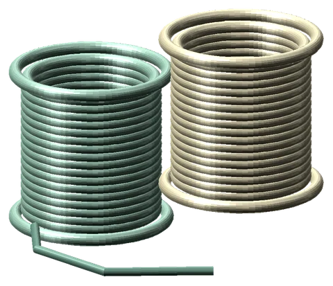
06.ESG供应链减碳咨询项目以一家时尚企业的供应链为案例，项目从排放数据缺口出发，设计了分三年推进的减碳方案。
本项目为针对ABC时尚有限公司制定的供应链减碳三年战略。面对港交所范围三强制披露、欧盟CSRD/CBAM/DPP/CSDDD及中国双碳的三重监管压力，针对ABC“数据黑洞、管理体系缺失、供应商碎散、平价约束”四重障碍，提出“Y1建立基线（Top 20%供应商碳摸底+材料/包装/运输优化）→ Y2升级绑定（绿色信贷撬动设备技改+订单倾斜激励）→ Y3规模收割（绿电集采+长尾出清）”的递进路径，三年内实现范围三排放下降35–40%，将合规危机转化为绿色供应链竞争壁垒。
用途：项目展位视频（展位由设计团队搭建，视频在展位屏幕循环播放）
《三丽鸥小组ESG.pdf》12 页咨询提案
本片用途
项目展位
2026 年 11 月 11 日
页码指代
文中“p2”“p9”指《三丽鸥小组ESG.pdf》第 2 页、第 9 页，方便逐条回查。
第 1 步 先把项目和这次视频认清楚
先填事实，不需要写宣传文案。负责和资料版本要能找到。
01 项目叫什么 现在做到哪一步
项目正式名称 / 简称
ABC时尚有限公司供应链减碳三年战略——从数据筑基到共赢减排，简称“ABC 供应链减碳三年战略”
本次资料版本 / 日期
咨询提案 v1，共 12 页；文件《三丽鸥小组ESG.pdf》，2026 年 11 月 11 日收到
当前阶段及已完成范围
提案阶段。
龚蕾
本片不涉及软件产品。
02 这支视频在哪里 怎样被观看
怎么填 依次填场合、屏幕、声音、时长和交付日期。没有硬性时长上限就写“按内容确定”。
观看场合（展览 / 路演 / 教学 / 其他）
项目展位现场（设计团队搭建的展位，视频与展板、主视觉同处一个空间，观众自由进出、随时停下随时走开）
屏幕横竖、比例及观看距离
以展位设计为准
现场能否放音、需要哪种语言
展位环境嘈杂，按“无声也能看懂”设计：全程中文字幕 + 关键数字大字，不依赖旁白传达信息
硬性时长上限；没有则写“按内容确定”
按内容确定
需要交付的版本及日期
第 2 步 让制作方知道讲给谁 讲完留下什么
“视频观众”和“产品使用者”可以不是同一批人，这一页只填视频观众。
03 主要观众是谁 他们最想知道什么
怎么填 先只选一种主要观众，再列其他观众。写清已有知识和最关心的两个问题。
主要观众（具体到身份）
经过展位的观众与评委
他们已经知道什么
大多只有“快时尚不环保”这种模糊印象，
他们最关心的问题 1
到底是什么在逼 ABC 做ESG，不做会怎样？如何做供应链减碳
还需兼顾的其他观众
04 看完后 必须记住哪三件事
怎么填 每点写一句具体内容，不写“高效、智能”等空泛词。最后选一个观看后的行动或理解目标。
必须记住 1：观众应理解
为什么减：三个监管日期把“要不要减”变成“什么时候必须交卷”——2026.1.1 港交所强制披露范围三、2027.9.30 CBAM 首次清缴、2029.7 CSDDD 企业义务适用；再叠加平价模式不能涨价、碳成本无法转嫁。减碳不是环保选项，是市场准入与成本问题（p2、p3）
必须记住 2：观众应理解
难在哪：不是“想不想减”，是四重障碍同时存在——平价约束（用户价格弹性大、不能涨价、无法转嫁）、管理体系缺失（无正式参与机制、考核只看价格与交期）、数据缺失（90% 排放在供应链，却无收集系统、无核算方法、无减排基线）、供应商多且散（150 家、以中小厂为主、改造意愿低）。四者互为因果：数据黑洞挡住所有监管要求，但根源是供应商碎散与机制缺失——所以买设备、上系统都解不了（p3）
必须记住 3：观众应理解
怎么解：一条顺序不能颠倒的三年路径——Y1 摸底分层，用 20% 的管理成本锁定 80% 核心范围三数据（20/20/60 分层）；Y2 改打分卡（ESG 与设备进度占 20%）＋绿色信贷撬动设备改造；Y3 绿电集采＋切断长尾收口。结果是范围三下降 35–40%（目标）、绿电渗透率 >60%、核心供应商留存 >90%（p4、p5、p6、p7、p10）
看完后希望观众做什么，或能复述什么
能按“为什么减 → 难在哪 → 怎么解”这三段把方案讲一遍，并记住那句“先建数据、再撬资金、最后靠规模降本”；愿意往展板前多走一步看三年路线，或扫码翻 12 页提案。
若篇幅有限，最不能删的是哪一点、为什么
三段各留一句、哪一段都不能省：三个监管日期（为什么）、“管理体系缺失”（难在哪）、“数据→资金→规模”的顺序（怎么解）。
第 3 步 先用平实语言说清项目 再列全用户
不必先写漂亮口号。把对象、问题、方法和结果填进句子，制作方再整理表达。
05 怎样用一句话介绍这个项目
怎么填 先填四个短语，再串成一句。效果尚未验证时，用“希望、规划、目标是”。
为谁：为
为平价定位、无法把碳成本转嫁给消费者的快时尚品牌 ABC，及其采购与可持续发展团队
解决什么问题：解决
解决“监管已经进入倒计时，而供应链上 90% 的排放既收不上数据、又不能靠涨价消化”这个矛盾：外部是三重监管压力，内部是四重障碍（平价约束、管理缺失、数据缺失、供应商碎散）
主要通过什么方式：通过
通过“先把供应商关系从价格驱动改成分层、稳定、可治理的战略合作”破局，再按“数据→资金→规模”推进三年路径：Y1 摸底分层、Y2 设备改造与绿色信贷、Y3 绿电集采与切断长尾
最后得到什么：让使用者得到
得到一条不靠涨价、三年内把范围三降 35–40% 并完成合规披露的可执行路径（目标，尚未验证）
合成一句话
ABC 是一家不能涨价的平价快时尚品牌，监管已进入倒计时、供应链 90% 的排放又收不上数据；这份方案先把供应商关系从“价格驱动”改成分层战略合作，再按“数据→资金→规模”走三年路径，目标是不涨价把范围三降 35–40% 并完成合规披露。
06 本片必须讲到哪些产品使用者
怎么填 把需要介绍的用户类别全部列出，每类补一个任务；标出主次，不要只填最熟悉的一类。
用户类别 1 / 正在完成的任务 / 本片主次
ABC 公司 / 拍板三年预算、组织分工、对董事会与投资人解释合规进度 / 主
用户类别 2 / 正在完成的任务 / 本片主次
A/B 类核心供应商（染整、成衣、面料工厂）/ 接入数据盘查系统、参与设备技改与绿电集采、拿到长期订单与绿色贷款 / 次
准备先讲哪一类，为什么
先讲ABC公司。他们是唯一同时握着“供应商清单”和“订单分配权”的角色，数据、激励、改造三件事都从这里发起
第 4 步 跟着填一张完整用户逻辑卡
下面两题是一组。先填一类用户；每增加一类必须介绍的用户，就复制整页并换一个 I 编号。
07 这个用户原来怎么做 具体卡在哪
内容编号 / 标题
I01 / 采购总监在 CBAM 清缴前收不齐供应商碳数据
谁在什么场景下，要完成什么任务
ABC 公司，在 2027 年 9 月 CBAM 首次清缴、以及欧洲大客户索要产品碳足迹之前，要向 150 家供应商收齐范围三排放数据并完成披露（场景为方案设定，对应 p2、p9）
原来使用什么方法或工具
具体在哪一步受阻
供应商“碎、散”，没有正式参与机制；约 90% 的排放来自供应链，却没有收集系统、没有核算方法、没有减排基线（p3）
这个阻碍造成什么后果
依据在哪里；若只是设想请写明
p2（监管时间轴与影响表）、p3（四重障碍与核心痛点表）、p9（150 家供应商的帕累托分布）。ABC 内部真实数据原稿未提供，数据对标真实公司，不是ABC数据
08 项目怎样帮助他 最后得到什么
怎么填 沿用上一题 I 编号。写用户动作、项目处理和最终结果；不清楚的技术步骤交软件补。
沿用内容编号
I01
用户先做什么 / 提交什么
先交出订单量 Top 20% 的战略供应商清单，把这批供应商强制接入数据盘查系统，并按 A/B/C 对供应商分层下发任务：（ p5）
项目接着处理什么（按先后写）
① Y1 摸底出基线，先做轻资产动作（rPET 替代、集拼装载、包装重构），不换大设备；② Y2 用“基线数据 + 长期订单协议”作信用桥梁，联合跨国银行放绿色专项贷款，把打分卡里 ESG 与设备进度提到 20%，订单向配合技改的 Tier 1 倾斜；③ Y3 以 ABC 为超级节点做绿电集采（PPA），并按改造参与率淘汰 C 类长尾（p5、p6、p7）
用户最终得到什么具体结果
据推算：范围三排放下降 35–40%，绿电渗透率 >60%，核心供应商留存率 >90%，气候披露全面合规；采购侧用约 20% 的管理成本覆盖 80% 的核心排放数据（p4、p7、p9）
哪些已验证，哪些只是设计目标
全部为方案设计目标，未在 ABC 验证。引用的外部数字（前 20% 供应商覆盖 71% 碳排、培训成本 45 万→9 万美元/年、单吨减排成本 38→11 美元/吨、贷款利率 7.0%→3.5%、绿电 6.5→5.2 元/度、年省约 1,040 万元）来自 H&M 年报、BCG、RMI、Inditex 等公开研究，属引用与测算（p9）
需要软件补充的步骤、限制或演示
数据盘查系统、打分卡计算、碳排看板均无原型。若要演示，用 3 张静态界面示意 + 一段“数据如何汇总到 ABC”的旁白即可，不要在片中暗示系统已上线
第 5 步 解释差异 也保留做事过程
比较要对应同一个维度；过程只写实际发生的工作，没有访谈或测试就不要补造。
09 与原有做法相比 究竟改变了什么
比较维度（只选一个）
供应商管理方式——资源怎么投、订单按什么分配
原有做法 / 对照对象怎样处理
对 150 家供应商平均用力、统一培训；考核只有价格与交期，减排被当作“环保选项”，与订单无关，供应商主动改造意愿极低（p3、p6）
本项目准备或已经怎样处理
改成 20/20/60 分层：只对前 20% 投资源（培训成本 45 万美元/年 → 9 万美元/年，单吨减排成本 38 → 11 美元/吨）；新版打分卡把 ESG 与设备进度设为 20% 权重（价格 70%→55%、交期 30%→25%）（p5、p6、p9）
这种差异对哪类用户有何价值
对采购与供应链部门：用 20% 的管理成本覆盖 71% 的碳排基数，18–24 个月的推广周期压缩到 6–9 个月；对供应商：配合改造能换来长期订单与低息贷款，形成“越环保→订单越多→改造成本越早回收”的正循环
依据 / 适用条件 / 当前状态
依据 p5、p6、p9（帕累托图与成本对照）。适用条件：ABC 能拿到 Top 20% 的订单与供应商清单，且有银行愿意认这份数据做授信。当前状态：方案设定，未在 ABC 实测
10 团队做过什么 又为什么调整
过程发生的日期 / 阶段
项目初期
团队实际做了什么
对比“全面更换设备”与“改良材料 + 优化工艺”两条路径的成本与减排效果，并重排三年动作的先后顺序
发现、反馈或遇到的问题
全面换设备前期资本投入巨大、改造周期长、会带来局部或全部停产，中小供应商财务承载力极低、易违约或代工出走；更关键的是没有第一年数据，第二年既申请不到绿色贷款、也算不出第三年绿电采购规模（p8、p10）
因此调整了什么；若未调整写原因
把 Y1 改成轻资产动作（rPET 替代降碳约 45%、集拼装载单次碳强度 -12%、包装重构装载率 +30%），Y2 才上用绿色信贷撬动的设备改造，Y3 再靠绿电集采与切断长尾收口；顺序固定为“数据→资金→规模”
过程证据（记录、照片、版本等）位置
资料缺口与补充人
第 6 步 把成果和数字的性质写明白
11 哪些成果已经完成 哪些还在计划中
怎么填 分别列已完成、已有证据、未完成和下一步。当前仅有提案，也是一种可准确说明的阶段。
已经完成的具体工作或交付物
12 页三年战略提案：行业背景与监管时间轴、痛点与核心判断、三年策略总览、Y1/Y2/Y3 分年动作与产出、生产供应端与管理运营端可行性、三年顺序合理性、五类风险与应对
可查看的成果文件 / 版本 / 日期
《三丽鸥小组ESG.pdf》，12 页，2026 年 11 月 11 日（提案 v1）
哪些效果已有证据，证据在哪里
尚未完成或未验证的部分
下一步准备验证什么问题
12 每个重要数字从哪里来 代表什么
本片出现数字时必填；否则写“不涉及” ｜ 每个关键数字复制一题
资料来源在PPT每页下方有标注
第 7 步 商业内容 涉及才展开 不涉及写原因
不涉及
第 8 步 排清下一步 也防止重要内容被漏掉
路线写目标，不写成成绩；原稿章节和细项都可以逐行列。
16 原稿哪些内容必须讲 哪些可以省略
怎么填 按原稿章节逐项列内容，写清页码范围。复杂章节拆成子项，不只写“商业模式”等总标题。
内容编号 / 具体要讲什么
展位循环版只走三段、不加枝节：p2 三个监管日期（为什么减）→ p3 四重障碍与根因判断“供应商碎散与机制缺失，不是缺系统”（难在哪）→ p4 三年路径与 20/20/60 分层，收在 p9 两个数字（怎么解：前 20% 供应商覆盖 71% 碳排、绿电集采年省约 1,040 万元）。完整版再补 p5 三项轻资产动作、p6 打分卡与信贷飞轮、p7 绿电集采与长尾出清
原稿文件及页码 / 文档位置
《三丽鸥小组ESG.pdf》p2、p3、p4、p9（循环版）；p5、p6、p7（完整版）
本版范围（必须讲 / 可压缩 / 不讲）
必须讲：p2 的三个日期、p3 的核心判断、p4 的三年顺序与分层、p9 的帕累托与降本。可压缩：p5 三张对比柱状图只留数字、p6 打分卡只留“70/30 → 55/25/20”、p7 集采流程图只留“ABC 做超级节点”。不讲：p8 两条路线对比细节、p10 顺序论证过程、p11 五类风险表——这些放展板与 12 页 PDF 里给愿意深看的人
为什么这样选择
展位观众站着看 20–40 秒、随时走开，只能承载“日期 + 一句根因 + 三年顺序 + 两个数字”；把 p8/p10/p11 塞进 90 秒只会让人什么都记不住。深度内容交给展板与可扫码的 PDF，视频只负责让人停下来、记住一句话
对应文字、图表或素材编号 A
A01 = 12 页提案 PDF。循环版取用：p2 时间轴、p3 痛点金字塔（简化成四个图标）、p4 三年演进 + 瀑布图、p9 帕累托与降本柱状图；完整版追加 p5/p6/p7
需要软件核对或补充的内容
第 9 步 交出项目自己的图像与审美依据
17 哪些图文最能让人认出这个项目
必须保留的名称、标志、颜色或角色
最能代表当前项目的主图 / 文件位置
p1 与 p12 的风机实景全幅大图（16:9）；p4 的三年演进 + 减排瀑布图。展位背景板建议直接用 p1 那张，视频首帧与之对齐，观众走到展位前先看到同一张图
使用场景、过程照片或其它关键图文
无过程照片（方案阶段，尚未实施）。可替代的是信息图型素材：p2 监管时间轴、p3 痛点金字塔、p9 帕累托曲线——它们比照片更适合站在 1–3 m 处看
素材版本、来源及对应内容编号
可用范围（展览 / 公开传播 / 仅参考）和需遮挡内容
对外公开传播前必须替换或取得风机图片授权。ABC 为案例代号，不得暗示真实企业背书，不得出现真实企业 Logo
缺少什么原图或原片，由谁补
18 希望是什么观感 参考里具体喜欢什么
怎么填 给 1 至 3 个参考，每个写喜欢的具体处理与不想照搬之处，再写它为什么适合项目。
希望观众感到什么，为什么适合项目
感到“这件事有时间表、有账可算、有顺序可走”——冷静、专业、略有紧迫感。展位环境嘈杂、光线复杂、观众站立且随时走开，画面必须高对比、字大、无声也成立；
参考图 / 视频链接或文件
具体参考它的什么（配色、构图、动作、声音等）
深蓝底 + 细线图表 + 大号数字；一个画面只讲一件事，左上角固定小标题方便中途进入的观众定位；转场用线条生长、瀑布下落；循环结尾留 2 秒“回到标题”的缓冲，不出现黑场
不希望照搬的部分
项目适合的视觉动作与声音方向
不应出现的风格或误解
不应出现“ABC 已实现减排”“行业第一”“零碳”等表述，不得把目标数字说成成绩
第 10 步 收好结尾 再交一个能打开的资料包
最后检查文件能否打开、版本是否一致。运营交清楚内容与材料。
19 结尾要留下什么 哪些词必须读对
结尾希望留下的一句话
循环版结尾用一句结论卡收口：“减排不是环保选项，而是平价模式下一条新的成本曲线。”
三丽鸥小组；作品阶段：咨询提案 v1（未实施、未验证）
项目名、术语、缩写及读音
必须保持的说法 / 容易被误解的承诺
20 资料在哪里 交给谁 还缺什么
怎么填 把说明文档、素材和索引放在一个位置。用 A 编号指文件、I 编号指内容；缺项写责任人与时间。
资料包文件夹或可访问链接
当前说明文档的名称 / 版本 / 日期
《三丽鸥小组ESG.pdf》，12 页
素材 A 编号 / 文件位置 / 对应 I 编号
另一个素材 A 编号 / 文件位置 / 对应 I 编号
尚缺内容 / 补充人 / 预计补齐时间
运营与软件共同确认的口径 / 仍有分歧处
本次交付人 / 日期；是否检查链接可打开
龚蕾；2026 年 11 月 11 日。已本地打开验证：《三丽鸥小组ESG.pdf》12 页可正常读取
 07.一朵云 Cloud Fly
07.一朵云 Cloud Fly下班回家，怎样让安静的房间里多一点回应？「一朵云」构想了一件会慢慢飘近、偶尔与你互动的云形陪伴装置。

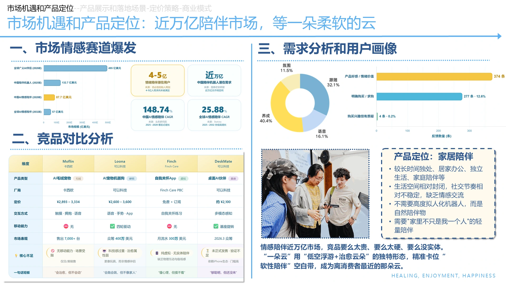

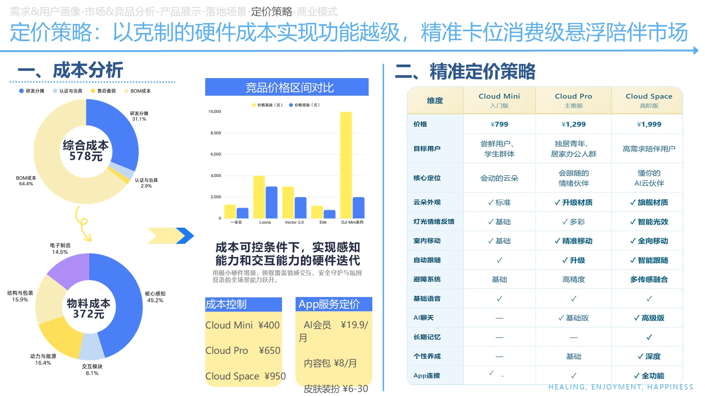
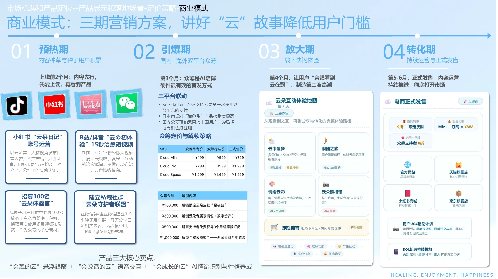

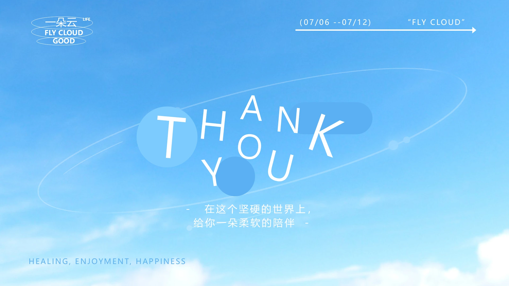
一个人下班回家，打开灯，屋里还是很安静。有时候，你只是想让身边多一点动静，又想保留独处的自在。「一朵云」从这个日常时刻出发，构想了一件能在家中轻轻飘动、偶尔回应你的云朵形陪伴装置。
在我们的设想里，当你坐到沙发上，云朵会低速飘近，避开沿途的障碍，在你身边停下，用柔和的灯光或简短的声音回应。居家办公时，你可以让它安静地待在一旁。手机端则让你查看云朵的状态、调整陪伴模式、记录日常互动，慢慢养成一朵适合自己生活节奏的云。
接下来，我们希望通过室内原型测试，看看云朵能否稳定地靠近、停留和避障，也想听听体验者的感受：什么时候希望它靠近，什么时候只想让它安静地待着？
C
L
F
O
L
U
D
Y
一朵云
FLY CLOUD
GOOD
LIFE
- 在这个坚硬的世界上，
给你一朵柔软的陪伴 -
（07/06 --07/12)
HEALING, ENJOYMENT, HAPPINESS
“FLY CLOUD”
市场机遇和产品定位：近万亿陪伴市场，等一朵柔软的云
产品定位：家居陪伴
情感陪伴近万亿市场，竞品要么太贵、要么太硬、要么没实体。“一朵云”用“低空浮游+治愈云朵”的独特形态，精准卡位“软性陪伴”空白带，成为离消费者最近的那朵云。
市场机遇和产品定位--产品展示和落地场景-定价策略-商业模式
HEALING, ENJOYMENT, HAPPINESS
一、市场情感赛道爆发
二、竞品对比分析
三、需求分析和用户画像
较长时间独处、居家办公、独立生活、家庭陪伴等
生活空间相对封闭，社交节奏相对不稳定，缺乏情感交流
不需要高度拟人化机器人，而是自然陪伴物
需要"家里不只是我一个人"的轻量陪伴
产品展示和落地场景：“低空浮游实体+ai虚拟服务”聚焦家居场景
HEALING, ENJOYMENT, HAPPINESS
·低速移动/漂浮
·自动跟随用户居家动线
·靠近、停留、避障
·灯光变化、语音回应
·柔软、蓬松、轻盈
·避免明显机械感与过度 拟人化五官，打造自然陪伴感
·查看云朵实时状态
·调整陪伴模式和个性设置
·ai记录情绪与日常互动
·形成”养一朵云”的长期关系
·不是实体设备的替代品，而是实体陪伴的延伸
•实体+手机端=空间陪伴+情感黏性
实体陪伴：云朵能够在室内低速跟随用户，或根据用户指令靠近、停留、远离。
语音互动：云朵可以进行、天气播报、闹钟提醒、白噪音播放、轻量聊天等。
情绪氛围：通过灯光、颜色、明暗、运动节奏与声音表达状态，例如晴天模式、雨天模式、睡前模式、学习模式、放松模式等。
虚拟养成：手机端可以设置云朵性格、情绪日记、陪伴时长、好感度、云朵状态等功能，使用户与云朵之间形成长期关系，而不仅仅是一次性新奇消费。
市场机遇和产品定位--产品展示和落地场景-定价策略-商业模式
一、产品核心功能
二、应用场景
定价策略：以克制的硬件成本实现功能越级，精准卡位消费级悬浮陪伴市场
竞品价格区间对比
二、精准定价策略
需求&用户画像-市场&竞品分析-产品展示-落地场景-定价策略-商业模式
HEALING, ENJOYMENT, HAPPINESS
综合成本
578元
物料成本
372元
一、成本分析
成本可控条件下，实现感知能力和交互能力的硬件迭代
用极小硬件增量，换取覆盖情感交互、安全守护与氛围营造的全场景能力跃升。
AI会员 ¥19.9/月
内容包 ¥8/月
皮肤装扮 ¥6-30
Cloud Mini ¥400
Cloud Pro ¥650
Cloud Space ¥950
成本控制
App服务定价
商业模式：三期营销方案，讲好“云”故事降低用户门槛
招募100名
“云朵体验官”
从种子用户社群中筛选100名核心用户免费赠送工程机，换取真实使用场景视频和反馈，作为众筹的核心素材。
第3个月：众筹是AI陪伴硬件最有效的首发方式
线下快闪体验
HEALING, ENJOYMENT, HAPPINESS
01
预热期
放大期
转化期
上线前2个月：内容先行，先爱上云，再看到产品
第4个月：让用户“亲眼看到云在飘”，制造第二波高潮
引爆期
内容种草与种子用户积累
国内+海外双平台众筹
持续运营与正式发售
02
03
04
以云朵第一人称视角发布日常内容，不推产品，只讲故事。目标积累1万+粉丝，建立“云朵”IP的情感认知。
小红书“云朵日记”账号运营
制作一系列15秒竖版短视频，展示云跟随、发光、互动的治愈瞬间。不做产品介绍，只做情绪传递。
B站/抖音“云の初体验”15秒治愈短视频
建立私域社群
“云朵守护者联盟”
三平台联动
众筹定价与解锁策略
Kickstarter 70%支持者是第一次使用众筹平台的女性
日本市场对“治愈系”产品接受度极高
国内众筹可积累首批中国用户，为后续电商销售打基础
市场机遇和产品定位--产品展示和落地场景-定价策略-商业模式
第5-6月：正式发售，内容运营持续推进，彻底打开市场
产品三大核心卖点：
“会飘的云”悬浮跟随 + “会说话的云”语音交互 + “会成长的云”AI情绪识别与性格养成
商业模式：财务预测未来三年收入持续向好，总量增长、结构优化
HEALING, ENJOYMENT, HAPPINESS
收入增长&构成多元
收入增长&构成多元
收入增长&构成多元
2026E-2028E业务收入预测
Year3 2028收入构成占比
实现从“硬件产品销售” 向“高附加值服务运营” 的结构性转型
三年成本结构演变
核心竞争优势
研发边际贡献
跟随、避障算法组件化开发，新品研发工作量缩减 70%
毛利攀升
综合毛利率
自 47.1%
提升至 64.5%
盈亏平衡点
运营第19个月
本项目具备极强自我造血能力，
预计 2027 年扭亏为盈，
2028 年净利润达到 1969 万元
营业收入与净利润预测
市场机遇和产品定位--产品展示和落地场景-定价策略-商业模式
T
H
Y
A
O
N
K
U
一朵云
FLY CLOUD
GOOD
LIFE
- 在这个坚硬的世界上，
给你一朵柔软的陪伴 -
（07/06 --07/12)
HEALING, ENJOYMENT, HAPPINESS
“FLY CLOUD”
不涉及写明原因；长答案可续页，多条记录可复制题目。 第 1 步先把项目和这次视频认清楚
01 项目叫什么现在做到哪一步
怎么填 填项目名、材料日期、当前阶段和两位对接人；阶段可选提案、原型、试点或已运行。
团队补充。 项目正式名称/ 简称：一朵云 Cloud Fly AI 陪伴机器人
本次资料版本/ 日期：Cloud Fly.pptx 2026/07/12
当前阶段及已完成范围：提案。已整理用户定位、产品场景、拟定价格、推广路径和财务预测
02 这支视频在哪里怎样被观看
怎么填 依次填场合、屏幕、声音、时长和交付日期。没有硬性时长上限就写“按内容确定”。
现场能否放音、需要哪种语言：建议中文旁白、中英字幕及轻配乐；现场可放音
硬性时长上限；没有则写“按内容确定”：按内容确定
需要交付的版本及日期：拟交横屏展映版；交付日期按展览安排确定
第 2 步让制作方知道讲给谁讲完留下什么
“视频观众”和“产品使用者”可以不是同一批人，这一页只填视频观众。
03 主要观众是谁他们最想知道什么
怎么填 先只选一种主要观众，再列其他观众。写清已有知识和最关心的两个问题。
助使用者。 主要观众（具体到身份）：首次接触项目的 X-Lab 成果展到场观众
他们已经知道什么：熟悉独处、居家办公等日常情境，对本项目的交互方式未必了解
他们最关心的问题 1：独自在家时，为什么会需要一个轻量的陪伴物？
他们最关心的问题 2：云朵实体怎么陪伴人，手机端又能做什么？
还需兼顾的其他观众：其他训练营团队、导师与展务人员
04 看完后必须记住哪三件事
怎么填 每点写一句具体内容，不写“高效、智能”等空泛词。最后选一个观看后的行动或理解目标。
IntelliDeploy 示例 记住：代码到应用之间存在部署门槛；助手规划接续部署与维护；提案覆盖用户、定价、增长和
迭代。 必须记住 1：观众应理解一朵云面向独处、居家办公等场景，提供低打扰的在场感。
必须记住 2：观众应理解实体拟通过低速移动、灯光和语音与人互动。
必须记住 3：观众应理解手机端拟支持状态查看、个性设置和互动记录，延续陪伴。
若篇幅有限，最不能删的是哪一点、为什么：实体如何陪伴人。这能让观众理解为什么需要一朵实体云。
第 3 步先用平实语言说清项目再列全用户
不必先写漂亮口号。把对象、问题、方法和结果填进句子，制作方再整理表达。
05 怎样用一句话介绍这个项目
怎么填 先填四个短语，再串成一句。效果尚未验证时，用“希望、规划、目标是”。
IntelliDeploy 示例 面向缺少部署资源的团队与个人，规划通过项目或模型输入，辅助配置和维护，让代码成为可访
问的应用。 为谁：为经常独处、希望家里多一点陪伴感的人
解决什么问题：解决想有人陪，又不想被频繁打扰的居家陪伴需求
主要通过什么方式：通过低空浮游云朵、灯光和语音互动，以及手机端养成
最后得到什么：让使用者得到可按日常节奏互动的轻量居家陪伴体验
合成一句话：为经常独处的人设计一朵能在家中移动和回应的云，并用手机端延续陪伴。
06 本片必须讲到哪些产品使用者
必填 | 用户超过三类时继续增加行
怎么填 把需要介绍的用户类别全部列出，每类补一个任务；标出主次，不要只填最熟悉的一类。
IntelliDeploy 示例 B 端：AI 初创与小微企业、高校实验室、传统企业数字化部门。C 端：产品经理、科研人员、自
媒体创作者。 用户类别 1 / 正在完成的任务/ 本片主次：独居者／独自回家后放松、缓解冷清感／主讲
用户类别 2 / 正在完成的任务/ 本片主次：居家办公者／专注工作并在休息时获得陪伴／场景举例
用户类别 3 / 正在完成的任务/ 本片主次：家庭用户／睡前或休息时调节氛围／场景举例
还需介绍的用户（可继续加行）：暂按以上三类；后两类用于说明使用场景
准备先讲哪一类，为什么：先讲独居者。回到安静的家这一情境便于展示核心需求。
第 4 步跟着填一张完整用户逻辑卡
下面两题是一组。先填一类用户；每增加一类必须介绍的用户，就复制整页并换一个 I 编号。
07 这个用户原来怎么做具体卡在哪
必填 | 与 OP08 成组复制；每类重要用户一组
IntelliDeploy 示例 I01 高校实验室：学生运行模型时需配置环境，不同项目容易冲突；导师也难及时看见实验进
度。依据提案 p3。 内容编号/ 标题：I01 / 独居者回家后的轻量陪伴
谁在什么场景下，要完成什么任务：独居者下班回家，在客厅休息，希望有一点在场感。
原来使用什么方法或工具：情境设定：开灯、播放白噪音，或用手机播放音频。
具体在哪一步受阻：想要空间里有轻量回应时，灯光和背景音主要是单向输出。
这个阻碍造成什么后果：可以调节氛围，仍较难获得随人移动或回应的在场感。
依据在哪里；若只是设想请写明：Cloud Fly.pptx 第 2–3 页；为方案情境，待用户验证。
08 项目怎样帮助他最后得到什么
必填 | 与 OP07 成组复制；两题必须使用同一 I 编号
怎么填 沿用上一题 I 编号。写用户动作、项目处理和最终结果；不清楚的技术步骤交软件补。
IntelliDeploy 示例 I01：规划提交项目或模型，经环境检查与隔离部署，获得访问入口，导师可看状态。当前只有
p3、p5 提案依据。 沿用内容编号：I01
用户先做什么/ 提交什么：回家后发出靠近或停留的语音指令，或在手机端选择陪伴模式。
项目接着处理什么（按先后写）：拟识别指令，低速移动并避障，再以灯光或语音回应。
用户最终得到什么具体结果：拟获得可停在身边、低打扰互动的云朵；手机可查看状态和设置偏好。
哪些已验证，哪些只是设计目标：已形成场景和功能方案；实际跟随、避障及交互体验待验证。
第 5 步解释差异也保留做事过程
比较要对准同一个维度；过程只写实际发生的工作，没有访谈或测试就不要补造。
09 与原有做法相比究竟改变了什么
必填；没有直接竞品可比较旧做法 | 每个重要差异复制一题
IntelliDeploy 示例 对照传统部署平台，IntelliDeploy 提案希望用自然语言接续复杂配置步骤。属于团队定位目标，
尚非易用性实测结论。 比较维度（只选一个）：实体陪伴物在室内如何移动
原有做法/ 对照对象怎样处理：以固定摆放的氛围灯为例，主要在原地提供光线和氛围。
本项目准备或已经怎样处理：拟让云朵低速跟随，在用户发出指令时靠近或停留。
这种差异对哪类用户有何价值：独处者在不同房间活动时，仍可获得轻量的在场感。
依据/ 适用条件/ 当前状态：PPT 第 2–3 页；属设计目标，室内跟随与安全边界待验证。
10 团队做过什么又为什么调整
必填实际发生的过程 | 每段希望展示的关键过程复制一题
IntelliDeploy 示例 现有材料包含用户分层、竞品、定价和迭代提案。未提供原始访谈、原型改版或测试记录，相关
团队实际做了什么：完成用户与竞品梳理、实体和手机端功能规划，以及定价与推广提案。
第 6 步把成果和数字的性质写明白
11 哪些成果已经完成哪些还在计划中
怎么填 分别列已完成、已有证据、未完成和下一步。当前仅有提案，也是一种可准确说明的阶段。
IntelliDeploy 示例 已提供产品与商业提案，包含需求、机制和发展路径；运行效果、部署测试和用户反馈证据尚未
提供。 已经完成的具体工作或交付物：已完成 7 页项目提案，含市场定位、功能场景、定价与运营方案。
尚未完成或未验证的部分：低速浮游、跟随避障、语音回应、手机端和用户接受度待验证。
下一步准备验证什么问题：优先验证客厅场景下靠近、停留、避障是否稳定，并收集体验反馈。
12 每个重要数字从哪里来代表什么
本片出现数字时必填；否则写“不涉及” | 每个关键数字复制一题
怎么填 一次填一个数字，补单位、期间、对象或分母及来源。选实测、引用、估算或目标；找不到来源写
只对应成本上限。 数字或含数字的完整表述：不涉及。展映建议聚焦产品体验与原型待验证事项。
单位/ 时间期间/ 对象或分母：不涉及
性质（实测/ 外部引用/ 估算/ 目标）：不涉及
原始来源、页码或数据表、发布日期：不涉及
计算方法或关键假设：不涉及
是否与其他材料冲突；由谁核对：不涉及
第 7 步商业内容涉及才展开不涉及写原因
13 谁付费买到什么价格怎么算
涉及收费或原稿商业章节要求保留时必填 | 有多档价格时复制档位部分或附完整价目表
IntelliDeploy 示例 原稿个人标准版 19 元/月；团队起步版 299 元/年、5 人共享积分。均为定价设想，团队档周期需
核对。 本片是否涉及收费；不涉及的原因：建议展映略过收费，聚焦居家陪伴；下列拟价供内部核对。
谁使用/ 谁购买/ 买到什么：居家陪伴用户拟购云朵硬件，可另选手机端内容与装扮。
本档名称/ 价格/ 币种/ 收费周期：硬件拟价（人民币）：Mini 400 元，Pro 650 元，Space 950 元。
人数或用量/ 核心权益/ 使用限制：AI 会员 19.9 元/月、内容包 8 元/月、皮肤 6–30 元（计费单位待核）。
价格性质（已售/ 拟定）及原表位置：均为拟定
14 用户从哪里来为什么持续使用
涉及增长、留存或长期运营时必填 | 不同用户的路径不同时分别复制
IntelliDeploy 示例 提案中初创企业靠免费体验和口碑，高校靠导师与教学网络，传统企业靠案例和试点；留存依赖
持续维护与资产积累。 本片是否涉及增长或留存；不涉及的原因：可简述触达与持续使用设想，供观众理解项目后续路径。
用户类别/ 从什么渠道接触项目：居家陪伴用户拟从内容平台、众筹页面或线下快闪接触项目。
第一次使用时得到什么价值：线下可设想体验靠近与停留，判断云朵是否适合自己的居家空间。
为什么以后还会回来或继续购买：拟用陪伴模式、个性设置和互动记录，让用户逐步养成自己的云。
传播、推荐或社区激励怎样发生：拟通过种子用户群、内容分享和快闪体验鼓励用户分享。
哪些已经发生，哪些是计划；依据在哪里：均为计划
第 8 步排清下一步也防止重要内容被漏掉
路线写目标，不写成成绩；原稿章节和细项都可以逐行列入，不要求先写视频分镜。
15 下一阶段先做什么如何判断完成
涉及路线或未来计划时必填 | 每个阶段或方向复制一题
怎么填 选一个阶段，填时间、动作、产出和检查方式。没有量化指标可以写可核对的交付物。
IntelliDeploy 示例 原稿第 1 至 3 月规划上线免费至个人专业版，目标付费转化至少 5%、专业版占比至少 3%；不
是已完成指标。 是否需要介绍未来规划；不涉及的原因：需要。简述原型验证与试体验，商业推广用一句话带过。
准备完成的具体动作：在指定客厅动线上验证靠近、停留、低速移动、避障和异常停止。
预期交付物或用户结果：一段连续实拍、测试记录及首轮体验反馈。
怎样判断完成（指标或检查方式）：同一动线重复测试，记录指令成功、避障和异常处理情况。
前提条件/ 尚需资源/ 当前依据：需可运行原型、场地和安全方案
16 原稿哪些内容必须讲哪些可以省略
必填 | 每个重要章节或独立子项复制一题
怎么填 按原稿章节逐项列内容，写清页码和范围。复杂章节拆成子项，不只写“商业模式”等总标题。
IntelliDeploy 示例 p7 需保留六档价格、积分、财务预测和四阶段路线；p9 需保留三方向九个子项，不能只出现三
个方向标题。 内容编号/ 具体要讲什么：I01–05 / 定位、交互场景、拟价、推广、财务预测
原稿文件及页码/ 文档位置：I01 第 2 页；I02 第 3 页；I03 第 4 页；I04 第 5 页；I05 第 6 页。
本版范围（必须讲/ 可压缩/ 不讲）：I01–02 必须讲；I04 可压缩；I03、I05 本版不讲。
为什么这样选择：突出居家需求、跟随与语音、情绪氛围及手机端养成；推广仅作后续设想。
对应文字、图表或素材编号 A：A01 提案：I01 定位、I02 功能、I03 定价、I04 推广、I05 财务。
需要软件核对或补充的内容：跟随、避障、语音、灯光与手机端的真实演示范围。
第 9 步交出项目自己的图像与审美依据
17 哪些图文最能让人认出这个项目
IntelliDeploy 示例 原提案的蓝白配色和机器人可作为识别线索；原图文件和公开使用范围需团队说明，真实产品录
屏待软件提供。 必须保留的名称、标志、颜色或角色：中文称「一朵云」；英文 CLOUD FLY，白色云朵标志
最能代表当前项目的主图/ 文件位置：A02：Cloud Fly.pptx 第 1 页封面，可作为标题和主视觉参考。
素材版本、来源及对应内容 I 编号：A01 为现有 7 页提案，I01–05；A02 为同份提案封面，对应开场。
18 希望是什么观感参考里具体喜欢什么
必填；无参考可写项目特征和明确偏好 | 每个参考复制相关部分，最多先给三例
怎么填 给 1 至 3 个参考，每个写喜欢的具体处理与不想照搬之处；再写它为什么适合项目。
IntelliDeploy 示例 IntelliDeploy 可保留蓝白识别，用“链接经过步骤成为应用”贯穿画面，配轻电子音乐；不让机
器遮人挡机制细节。 希望观众感到什么，为什么适合项目：柔软、安静、有在场感，贴合下班回家和睡前等日常场景。
参考图/ 视频链接或文件：Cloud Fly.pptx 第 1 页及第 3 页；外部参考暂缺。
具体参考它的什么（配色、构图、动作、声音等）：参考封面留白；用日常尺度表现云朵靠近与停留。
不希望照搬的部分：静态文案堆叠和财务图表的路演式排版。
项目适合的视觉动作与声音方向：慢速靠近、柔和灯光渐变，配轻音乐或生活环境音；概念画面加标注。
不应出现的风格或误解：避免机械感、夸张拟人和高频动效；概念画面标注为设计演示。
第 10 步收好结尾再交一个能打开的资料包
最后检查文件能否打开、版本是否一致。运营交清楚内容与材料，不需要先会做动画或编写 JSON。
19 结尾要留下什么哪些词必须读对
IntelliDeploy 示例 结尾可写“IntelliDeploy 智能部署助手提案”；说明后续需原型与真实场景验证，不把预测收入
或划规功能当已实现成绩。 结尾希望留下的一句话：在这个坚硬的世界上，给你一朵柔软的陪伴。
项目名、术语、缩写及读音：FLY CLOUD 读作「弗莱·克劳德」；AI 读英文字母 A、I。
入口与署名由谁确认、何时可提供：暂无
20 资料在哪里交给谁还缺什么
必填 | 素材、缺项较多时复制相关行
怎么填 把说明文档、素材和索引放在一个位置。用 A 编号指文件、I 编号指内容；缺项写责任人与时间。
IntelliDeploy 示例 A01 可指完整 10 页提案，I01 关联 p3 与 p5；真实流程录屏仍待软件补。现有介绍视频只能作为
表达参考，不能证明产品已运行。 资料包文件夹或可访问链接：当前附件 Cloud Fly.pptx
素材 A 编号/ 文件位置/ 对应 I 编号：A01：Cloud Fly.pptx 第 2–6 页／I01–I05。
另一个素材 A 编号/ 文件位置/ 对应 I 编号：A02：同一 PPT 第 1 页封面／开场
 08.StepLAB 儿童智能步态监测鞋垫
08.StepLAB 儿童智能步态监测鞋垫鞋底为什么总在一侧先磨损？StepLAB 把监测放进儿童鞋垫，尝试连续记录脚下受力和步态的变化。


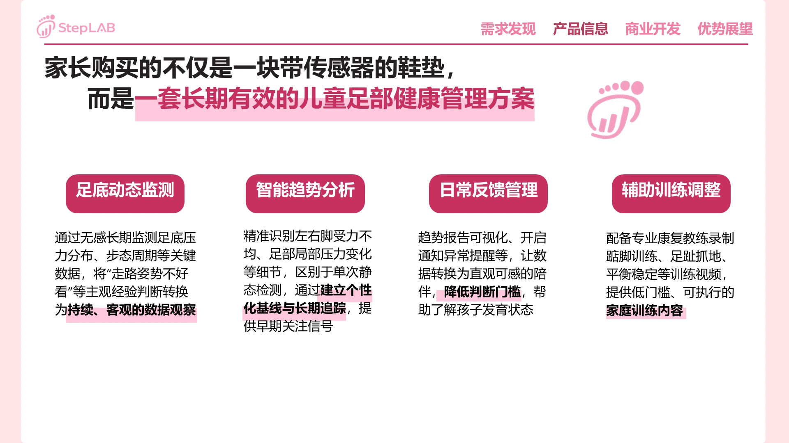
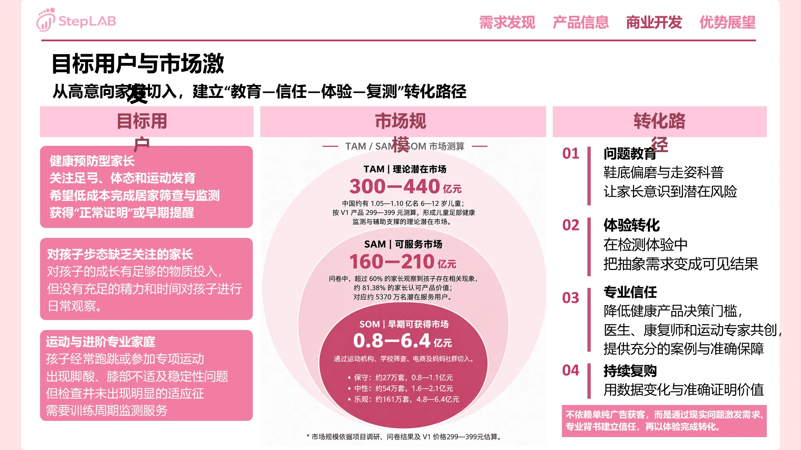


StepLAB｜儿童智能步态监测鞋垫
步步有迹，成长有据。
孩子每天走路、跑跳，脚下的变化却不容易被看见。鞋底为什么总在一侧磨损？左右脚受力是否均衡？随着身高、鞋码和运动习惯变化，步态又会怎样改变？仅凭偶尔观察，家长往往难以获得连续、清晰的答案。
StepLAB面向6—12岁儿童及其家庭，探索将压力与运动传感器融入日常鞋垫，在孩子自然活动时记录足底受力与步态信息，并同步至家长端应用。项目计划通过压力分布、左右脚对比和长期趋势报告，把复杂数据转化为直观的成长记录，帮助家长理解一段时间内的变化。
从日常观察到关注提醒，再到训练建议与周期复测，StepLAB希望连接起持续的家庭关注流程。家长不仅能查看某一次记录，还能对照不同成长阶段、活动场景和训练前后的趋势，为必要时的专业咨询提供参考。随着孩子成长，项目还探索换码适配与核心电子模块复用，让长期使用更方便。
StepLAB 希望用更易理解的数据，让每一步成长都有迹可循。
了解项目：steplab.fun
02.测得太少
需求发现：儿童足部发育、步态异常缺少一个低门槛、持续性、可反馈的解决方案。
核心痛点
需求验证
01
问题感知
行动困境
02
概念认可
03
01
看不出来
02
测得太少
03.效果模糊
03
效果模糊
48%
的家长
缺乏判断方法；
44%的家长不知何时干预；
发现异常但难以量化，
只能凭经验猜测
单点
低频
医院检查频率低；
无法覆盖日常
走路、跑跳中的长期变化
0
反馈
传统鞋垫仅提供静态支撑，
缺少复测依据，
家长不知道到底有没有改善效果
需求发现
产品信息
商业开发
优势展望
基础产品信息：一双"看得见"孩子足底受力的智能鞋垫
StepLAB
智能步态监测鞋垫
产品定义
产品形态
内置柔性传感器的智能鞋垫，放入孩子日常鞋中使用，不改变穿着习惯
目标场景
儿童日常走路、跑跳、运动中的足底压力与步态持续监测
核心定位
"看得见"——把家长模糊、偶发的观察，变成连续、可视化的数据记录
StepLAB
鞋垫
家长通过App查看孩子足底受力状况，异常时收到提醒
反馈模式
02.使用流程
将智能鞋垫放入孩子日常鞋中，首次使用时完成基础校准（个体化基线建立）
App自动生成趋势报告：足底压力分布、左右脚差异、足弓压力变化、内八/外八趋势
孩子日常走路、跑跳时，鞋垫自动采集足底压力与运动数据，通过BLE同步至手机App
当数据出现异常趋势时，App推送提醒，建议家长关注或带孩子进行专业检查
1
2
3
4
01.产品定义
需求发现
产品信息
商业开发
优势展望
「感知-分析-适配-动态」完整闭环，构筑产品壁垒
多模态传感，稳定采集足底数据
原始信号转化为可洞察的成长数据
适儿化设计，呵护儿童稳步成长
动态记录，形成长期成长档案
柔性压力传感器实施捕捉足底压力变化
六轴 IMU精准识别步态变化与运动状态
BLE低能耗通信支持长期佩戴与数据传输
柔性 FPC保证鞋垫柔韧性、耐弯折与可靠性
模块化电⼦仓易于维护升级，支持长期使用
基于儿童年龄与历史数据设置个体化基线
步态事件识别判断落地、支撑、推进等关键阶段
左右受⼒分析判断双足压力差异与异常趋势
行走、跑步、跳跃等运动状态区分
⻓期趋势识别捕捉成长过程中的变化
⼉童⾜型与尺码适配，贴合儿童成长需求
舒适度与耐弯折满足儿童高频运动与长期穿戴需求
可清洁结构设计适应日常使用环境
可替换⽀撑设计根据足部发育阶段进行调整
核心电子模块可复⽤，降低长期成本
积累不同年龄阶段、运动状态下的足部变化数据，
形成⼉童⻓期步态数据库
构建个体成长轨迹模型，支持更精确的异常识别与趋势预测
数据反馈优化算法，使用越久，产品理解能力越强
硬件
程序
产品
数据
从“测得到”到“看得懂”，再到“用得久”，StepLAB致力于陪伴孩子长期健康成长
需求发现
产品信息
商业开发
优势展望
足底动态监测
智能趋势分析
日常反馈管理
家长购买的不仅是一块带传感器的鞋垫，
而是一套长期有效的儿童足部健康管理方案
通过无感长期监测足底压力分布、步态周期等关键数据，将“走路姿势不好看”等主观经验判断转换为持续、客观的数据观察
精准识别左右脚受力不均、足部局部压力变化等细节，区别于单次静态检测，通过建立个性化基线与长期追踪，提供早期关注信号
趋势报告可视化、开启通知异常提醒等，让数据转换为直观可感的陪伴，降低判断门槛，帮助了解孩子发育状态
辅助训练调整
配备专业康复教练录制踮脚训练、足趾抓地、平衡稳定等训练视频，提供低门槛、可执行的家庭训练内容
需求发现
产品信息
商业开发
优势展望
持续复购
用数据变化与准确证明价值
目标用户与市场激发
健康预防型家长
关注足弓、体态和运动发育
希望低成本完成居家筛查与监测
获得“正常证明”或早期提醒
对孩子步态缺乏关注的家长
对孩子的成长有足够的物质投入，
但没有充足的精力和时间对孩子进行
日常观察。
运动与进阶专业家庭
孩子经常跑跳或参加专项运动
出现脚酸、膝部不适及稳定性问题
但检查并未出现明显的适应征
需要训练周期监测服务
04
03
02
01
体验转化
在检测体验中
把抽象需求变成可见结果
不依赖单纯广告获客，而是通过现实问题激发需求、专业背书建立信任，再以体验完成转化。
目标用户
从高意向家庭切入，建立“教育—信任—体验—复测”转化路径
专业信任
降低健康产品决策门槛，
医生、康复师和运动专家共创，
提供充分的案例与准确保障
问题教育
鞋底偏磨与走姿科普
让家长意识到潜在风险
需求发现
产品信息
商业开发
优势展望
市场规模
转化路径
透气亲肤层
采用高透气、耐磨亲肤材料
预计成本：≈15元/双
压力传感层
柔性压力阵列 采集足底压力分布
预计成本：≈50~65元/双
柔性线路层
柔性电路板连接，实现数据传输
预计成本：≈25-30元/双
智能控制模块
集成MCU主控芯片、IMU六轴惯性
传感器及蓝牙通信模块
预计成本：≈45-60元/双
电源模块
微型锂电池,充电管理及保护电路
预计成本：≈25~35元/双
底层结构
采用EVA等缓震材料作为承载结构
预计成本：≈35~40元/双
核心器件采购
传感器,芯片,电池,蓝牙
柔性电子加工
FPC线路加工 模块焊接
测试与校准
压力数据校准 蓝牙连接 续航测试
仓储交付
包装 库存管理 用户配送
产品交付成本
企业运营成本
供应链搭建
StepLab产品成本结构拆解
软件研发与维护
市场销售运营
App开发
数据分析平台
后端服务器
云端数据库
算法优化
软件研发投入 ≈25万元
系统维护成本 ≈8万元/年
内容营销 社交媒体账号运营
渠道建设 机构合作
品牌设计 产品宣传海报,物料
用户运营 社群维护,客服支持
用户增长 推广活动
市场营销与投入 ≈15万元/年
鞋垫结构生产
材料成型 结构加工 整机装配
需求发现
产品信息
商业开发
优势展望
STEPLAB智能鞋垫
足底压力监测
步态数据分析
家庭长期健康管理
399元
普通功能鞋垫
运动功能鞋垫
运动数据记录
辅助支撑
部分智能功能
500+
专业机构使用
高精度多模态检测
1000+
专业足部分析设备
产品定价策略
产品成本约179元
定价399元
StepLab价格定位
以399元的价格，既在消费者的预期价格（259-459元）(数据源自全年龄段样本调查)之内，又能为家庭用户提供高价值的足部数据分析能力，有效填补传统鞋坠与专业设备之间的市场空白。
当前主要收入来源
产品购入
数据服务
低价格
高价格
高智能
低智能
无数据记录
舒适性与一定支撑性
50-150元
StepLab产品定价与盈利路径
多元收入体系
硬件销售收入
智能鞋垫销售
一次性收入
快速获取用户
数据增值收入
数据存储服务
开屏广告展示
运动课程提供
成长档案管理
B端合作收入
医院
康复机构
儿童运动机构
需求发现
产品信息
商业开发
优势展望
01｜儿童产品适配
面向 6—12 岁儿童足型与运动场景
强调舒适,日常可穿戴
支持儿童成长换码与核心模块复用
02｜产品与服务闭环优势
StepLAB 不只告诉家长“发生了什么”，还帮助用户理解变化、给出可靠的行动建议。
03｜长期数据模型占有
同一儿童的纵向成长变化
不同年龄阶段步态差异
训练前后受力趋势对比
支撑调整前后效果对比
走路、跑步等不同场景数据
竞争定位
单个足弓支撑结构容易被复制，但将儿童硬件适配、趋势预警、专业评估、周期复测连接成完整系统，更难被复制。
竞争矩阵
竞争格局与核心优势
优势不在单个传感器，而在儿童步态健康管理闭环
三类核心优势
普通鞋垫主要提供静态支撑，专业矫形鞋垫依赖低频线下服务，足压设备只能完成一次性检测，智能穿戴则缺少儿童足部健康闭环。
StepLAB 通过日常穿戴，把监测、提醒、训练与复测连接起来。
资料来源：Dr. Kong、PowerStep、Moticon OpenGo、Tekscan F-Scan GO 官方产品资料及 NURVV 产品公开资料
需求发现
产品信息
商业开发
优势展望
StepLAB 先以消费级步态监测产品完成市场验证，再根据资金、注册能力和合作资源选择两条发展路径：自主推进医疗器械注册，建立专业干预闭环；或向童鞋及足部健康品牌输出智能模组、算法和数据服务，快速实现规模化。
V2路径B
品牌合作：快速实现产品规模化
合作对象
成熟的儿童健康鞋品牌
希望进入中国市场的海外足部健康品牌
可能的合作形式
1.智能模组供应：StepLAB提供传感器、IMU、蓝牙及算法模组，由合作品牌集成到鞋垫或童鞋中。
2. 算法与软件授权：品牌使用StepLAB步态分析算法、家长端报告和数据平台，按设备量或服务期限支付授权费用。
3. 渠道捆绑：StepLAB鞋垫与合作品牌童鞋、机能鞋或支撑鞋垫组合销售，形成产品套装。
产品迭代与未来展望
从智能鞋垫出发，构建儿童步态健康数据与服务平台
8—12 个关键足底压力点监测；IMU 站立、行走与跑步识别；BLE 数据同步；左右受力与步态趋势反馈；基础异常趋势提醒
核心功能
让家长第一次持续看见儿童日常步态变化。
用户价值
不进行医疗诊断，不承诺自动矫正，不配置独立联网定位。
产品边界
正式价格：299—399元
验证指标：试穿完成率、付费率、30天留存、报告查看率
商业验证
V1｜看得见
验证
持续监测价值
周期复测服务
医院及康复机构合作
机构端系统与数据服务
V2路径A
自主医疗化：构建专业干预闭环
发展方式
按二类医疗器械路径推进注册，自主研发与智能鞋垫配套的足弓支撑或矫形产品。
理想用户闭环
日常监测 → 趋势预警 → 医院评估 → 辅助干预 → 周期复测 → 支撑
商业模式
智能监测鞋垫销售
配套支撑插件或矫形器销售
需求发现
产品信息
商业开发
优势展望
第 1 步｜先把项目和这次视频认清楚
01 项目叫什么，现在做到哪一步
项目正式名称/简称：
StepLAB儿童智能步态监测鞋垫 / StepLAB
本次资料版本/日期：
当前阶段及已完成范围：
设计稿阶段、无实体样品；已有产品效果图与App网页交互展示，网页数据为示例。
02 视频在哪里、怎样被观看
观看场合（展览/路演/教学/其他）：
训练营成果展；面向社会观众。
屏幕横竖、比例及观看距离：
横屏16:9；具体屏幕尺寸及观看距离：
现场能否放音、需要哪种语言：
可放音；中文旁白、中文字幕及配乐。
硬性时长上限；没有则写“按内容确定”：
按内容确定
需要交付的版本及日期：
第 2 步｜让制作方知道讲给谁、讲完留下什么
03 主要观众是谁，他们最想知道什么
主要观众（具体到身份）：
训练营成果展的社会观众，主要为首次了解项目的非专业公众。
他们已经知道什么：
了解鞋垫与儿童走路问题；不预设传感器、步态算法或医疗知识。
他们最关心的问题1：
家长除了偶发观察或单次检测，还能怎样了解孩子日常步态变化？
他们最关心的问题2：
设计方案怎样形成“监测—提醒—训练建议—复测”流程，能帮助家长什么？
还需兼顾的其他观众：
兼顾6—12岁儿童家长、训练营师生及潜在机构／品牌合作方。
04 看完必须记住哪三件事
必须记住1：观众应理解
面向6—12岁儿童家庭，关注日常足底受力与步态变化的连续观察需求。
必须记住2：观众应理解
拟通过鞋垫传感、BLE同步和App报告，连接观察、提醒、训练建议与复测。
必须记住3：观众应理解
V1不诊断、不自动矫正、不含独立联网定位。
看完后希望观众做什么，或能复述什么：
能复述对象、使用流程和当前阶段；愿意了解设计或后续验证计划。
若篇幅有限，最不能删的是哪一点、为什么：
保留产品流程与设计阶段说明：这是理解方案价值及完成边界的基础。
第 3 步｜先用平实语言说清项目，再列全用户
05 怎样用一句话介绍这个项目
为谁：
6—12岁儿童及其家庭，主要决策和查看数据者是家长。
解决什么问题：
家长难持续量化观察足底受力和步态变化，亦缺少长期对照依据。
主要通过什么方式：
拟用柔性压力传感器、六轴IMU、BLE及家长端App，结合个体基线和趋势分析。
最后得到什么：
希望获得可理解的受力与步态趋势、关注提醒、训练建议及长期对照记录。
合成一句话：
面向6—12岁儿童家庭，拟通过智能鞋垫和App，帮助持续观察足底受力与步态趋势。
06 本片必须讲到哪些产品使用者
用户类别1/正在完成的任务/本片主次：
I01 健康预防型家庭：持续关注儿童日常足底受力与步态变化；主线。
用户类别2/正在完成的任务/本片主次：
I02 日常观察时间有限的家庭：用趋势汇总与提醒辅助持续关注；次线。
用户类别3/正在完成的任务/本片主次：
I03 运动与进阶专业家庭：观察训练周期内受力变化；次线。
还需介绍的用户（可继续加行）：
儿童是穿戴者；医院、康复及儿童运动机构是潜在合作方，非既有客户。详见续页。
准备先讲哪一类，为什么：
建议先讲I01：与原稿“从高意向家庭切入”一致，便于带入完整使用流程。
第 4 步｜跟着填一张完整用户逻辑卡
07 用户原来怎么做，具体卡在哪
内容编号/标题：
I01 / 健康预防型家庭的日常步态观察（另见I02、I03续页）。
谁在什么场景下，要完成什么任务：
家长关注6—12岁孩子日常走路、跑跳，希望了解足底受力与步态变化。
原来使用什么方法或工具：
凭走姿、鞋底磨损和孩子描述观察，有需要时到专业机构检查。
具体在哪一步受阻：
难把零散观察变成可持续比较的数据；专业检查无法覆盖全部日常活动。
这个阻碍造成什么后果：
缺少长期对照依据，难判断何时进一步咨询及变化是否持续。
依据在哪里；若只是设想请写明：
08 项目怎样帮助他，最后得到什么
沿用内容编号：
I01
用户先做什么/提交什么：
拟将鞋垫放入日常鞋，按App引导完成基础校准，建立个体基线。
项目接着处理什么（按先后写）：
拟按“压力／运动采集→BLE同步→基线和趋势分析→报告／提醒”处理。
用户最终得到什么具体结果：
目标是获得足底压力、双足差异与步态趋势记录，必要时提示寻求专业评估。
哪些已验证，哪些只是设计目标：
已具备效果图及App交互设计展示；采集、同步、分析与健康相关效果均尚未样品验证。
需要软件补充的步骤、限制或演示：
第 5 步｜解释差异，也保留做事过程
09 与原有做法相比改变了什么
比较维度（只选一个）：
日常观察的连续性；其他差异见续页OP09。
原有做法/对照对象怎样处理：
原稿对照：肉眼偶发观察、普通鞋垫静态支撑、线下阶段性足压检查。
本项目准备或已经怎样处理：
拟以日常穿戴采集和App趋势记录衔接观察、提醒、训练建议及复测。
这种差异对哪类用户有何价值：
帮助家长积累同一儿童的长期对照信息；尚不主张优于专业检测。
依据/适用条件/当前状态：
PPT第2—5、9页；处在方案定位阶段。
10 团队做过什么，为什么调整
过程发生的日期/阶段：
团队实际做了什么：
进行了需求调研，结合技术现实进行了初步的可行性验证，并通过商业规模估测等商业验证形成《StepLAB终期汇报》11页文件，包含产品定义、技术设计、商业与路线内容。
发现、反馈或遇到的问题：
因此调整了什么；若未调整写原因：
现有材料呈现需求、产品与商业设计；没有可核对的实体试穿改版，故不补造。
过程证据（记录、照片、版本等）位置：
A01原稿核对版第2—10页；A03原文索引；A04效果图；A09—A14网页／App展示。
资料缺口与补充人：
第 6 步｜把成果和数字的性质写明白
11 哪些成果已完成，哪些仍在计划
已经完成的具体工作或交付物：
已完成需求调研与产品／商业设计表达；已有产品效果图、网站及App交互设计；实体样品正在计划中
可查看的成果文件/版本/日期：
A01《StepLAB终期汇报》尾页2026.07；A04效果图；A09—A14网页核读日2026-11-11。
哪些效果已有证据，证据在哪里：
尚未完成或未验证的部分：
实体样品、传感集成、硬件与App真实联动、准确性／穿戴／续航及健康效果验证。
下一步准备验证什么问题：
按V1路线验证日常持续监测价值，并观察试穿完成率、付费率、30天留存及报告查看率。
12 每个重要数字从哪里来、代表什么
数字或含数字的完整表述：
6—12岁：拟服务的目标儿童年龄范围；全部关键数字详见OP12数字台账。
单位/时间期间/对象或分母：
单位为岁；对象是目标穿戴儿童；不是已验证用户样本年龄。
性质（实测/外部引用/估算/目标）：
目标（产品适配范围），非实测效果。
原始来源、页码或数据表、发布日期：
PPT第9页“儿童产品适配”；PPT尾页标注2026.07。
计算方法或关键假设：
依据产品定位提出；不同年龄／尺码适配方式和适用条件尚待验证。
是否与其他材料冲突；由谁核对：
第 7 步｜商业内容：涉及才展开
13 谁付费、买到什么、价格怎么算
本片是否涉及收费；不涉及的原因：
涉及；硬件销售、数据增值与B端合作均为商业设计，尚无实体样品和已售收入。
谁使用/谁购买/买到什么：
儿童穿戴、家长拟购买并查看App；机构／品牌为后续合作对象。
本档名称/价格/币种/收费周期：
智能鞋垫 / 拟定售价399元 / 人民币 / 一次性购入（以PPT第8页为准）。
人数或用量/核心权益/使用限制：
拟提供鞋垫及足底压力、步态趋势等App体验；未单列账号、用量与服务期限档位。
价格性质（已售/拟定）及原表位置：
拟定，非已售；用户确认采用PPT第8页：售价399元、估算产品成本约179元。
还需提交的其它档位、差异或待核口径：
数据存储、开屏广告、运动课程、成长档案；医院／康复／儿童运动合作；未制定其它公开价目。
14 用户从哪里来、为什么持续使用
本片是否涉及增长或留存；不涉及的原因：
涉及：按原稿介绍“教育—信任—体验—复测”规划，不将规划写成已获客或已复购。
用户类别/从什么渠道接触项目：
I01高意向家庭：科普鞋底偏磨／走姿问题，规划通过专业协作与后续产品体验建立认知。
第一次使用时得到什么价值：
现阶段可看产品效果图及App设计展示，理解压力、双足受力和趋势报告；无样品体验。
为什么以后还会回来或继续购买：
规划以成长档案、趋势对照、训练／复测和成长换码形成持续价值，尚待验证。
传播、推荐或社区激励怎样发生：
问题科普、专业协作及用户自愿推荐；未设计明确的奖励或社区积分规则。
哪些已经发生，哪些是计划；依据在哪里：
第 8 步｜排清下一步，防止重要内容遗漏
15 下一阶段先做什么，如何判断完成
是否需要介绍未来规划；不涉及的原因：
需要：先验证消费级持续监测价值，再按资源选择V2方向；均为计划。
阶段/预计时间：
准备完成的具体动作：
拟开发压力采集、IMU状态识别、BLE同步、双足／步态趋势报告与基础异常趋势提醒。
预期交付物或用户结果：
目标交付可试穿样品与配套App／报告；范围以技术确认后的计划为准。
怎样判断完成（指标或检查方式）：
V1检查试穿完成率、付费率、30天留存、报告查看率；目前均为待开展的验证指标。
前提条件/尚需资源/当前依据：
16 原稿哪些内容必须讲，哪些可省略
内容编号/具体要讲什么：
I10 / 需求、产品机制、服务、用户、成本、定价、竞争与V1／V2路线均逐项列入续页。
原稿文件及页码/文档位置：
A01《StepLAB终期汇报》第1—11页；图像文字已核读，完整清单见续页。
本版范围（必须讲/可压缩/不讲）：
必须讲：对象、需求、流程、设计阶段、V1边界；商业与路线按细项完整交底，可压缩呈现。
为什么这样选择：
对应文字、图表或素材编号A：
A01 原稿核对版；03 全文索引；04 效果图；05 尾页；06 标志；09—14 网页及App。
需要软件核对或补充的内容：
第 9 步｜交出项目图像与审美依据
17 哪些图文最能识别项目
必须保留的名称、标志、颜色或角色：
保留StepLAB名称与PPT标志；粉色、白色为主，搭配产品浅紫色；风格沿用原稿。
最能代表当前项目的主图/文件位置：
A04：可用素材/A04_StepLAB产品设计效果图.png；明确标注设计效果图。
使用场景、过程照片或其它关键图文：
A07结构设计示意；A09网站；A10—A14为今日记录、趋势、训练、报告、档案五页App设计。
素材版本、来源及对应内容I编号：
A01 PPT及A04用户提供效果图；A09—A14来自steplab.fun，核读日2026-11-11。
可用范围（展览/公开传播/仅参考）和需遮挡内容：
缺少什么原图或原片，由谁补：
已有独立效果图、标志、结构示意与App截图；当前无实体样品照片或实测录像，毋须补造。
18 希望的观感与具体参考
希望观众感到什么，为什么适合项目：
清晰、亲和、可信；既呈现儿童成长主题，也让社会观众看懂数据观察流程。
参考图/视频链接或文件：
具体参考它的什么（配色、构图、动作、声音等）：
沿用粉白、浅紫；产品与App并置；顺序讲清穿戴、采集、同步、报告及关注提醒。
不希望照搬的部分：
不照搬密集段落；不把效果图当实物照片，不把App示例数值当真实监测结果。
项目适合的视觉动作与声音方向：
足底受力与趋势线示意，配中文旁白、完整字幕与轻配乐；用动作串起产品流程。
不应出现的风格或误解：
不制造儿童健康焦虑；不承诺诊断、自动矫正或独立联网定位；保持设计阶段说明。
第 10 步｜收好结尾，交出可打开的资料包
结尾希望留下的一句话：
“步步有迹，成长有据。” / Every Step Matters. Every Growth Counts.；注明设计阶段。
StepLAB项目组｜成员：白雨阳、申遂、欧阳卓君、颜婉真、徐欣羽、徐悦琳、姜禹舟；目前产品处在设计阶段。
项目名、术语、缩写及读音：
StepLAB：step lab（/step læb/）
必须保持的说法/容易被误解的承诺：
设计图／App示例不代表实测；售价399元、成本约179元均为方案口径；市场规模标注原稿估算。
20 资料位置、交接与后续事项
资料包文件夹或可访问链接：
当前说明文档的名称/版本/日期：
素材A编号/文件位置/对应I编号：
另一个素材A编号/文件位置/对应I编号：
A04 / 可用素材/A04_StepLAB产品设计效果图.png；A09—A14 / 网站及五页App设计。
尚缺内容/补充人/预计补齐时间：
运营与软件共同确认的口径/仍有分歧处：
本次交付人/日期；是否检查链接可打开：
续页使用说明与已确认口径
项目阶段
设计稿阶段，尚未产出实体样品；已提供产品效果图及可访问的App网页交互设计展示，网页数据均为示例。
展示要求
训练营成果展，面向社会观众；横屏16:9、可放音、中文旁白与完整字幕。
统一商业口径
以PPT第8页为准：拟定售价399元、估算产品成本约179元。第7页拆项预算与第10页旧价仅在原稿索引中保留。
调研与市场
素材与入口
资料边界
OP07＋OP08 用户逻辑卡｜I01 健康预防型家庭
每类重要用户独立一组；两题沿用同一I编号。
OP07 旧方法、卡点与后果
内容编号／标题
I01 / 健康预防型家庭
谁在什么场景下，要完成什么任务
家长关注6—12岁儿童足弓、体态和运动发育，希望在日常走路、跑跳时持续了解足底受力及步态变化。
原来使用什么方法或工具
设定场景：看孩子走姿、看鞋底磨损、听孩子描述，必要时向医生或康复专业人士咨询。
具体在哪一步受阻
零散观察难量化、难在相同条件下长期比较；阶段性线下检查不能覆盖所有日常活动。
这个阻碍造成什么后果
家长缺少长期对照信息，难理解何时应进一步关注；这是需求假设，不是已验证的样本结论。
依据在哪里；若只是设想请写明
OP08 项目流程与目标结果
沿用内容编号
I01
用户先做什么／提交什么
拟在日常鞋内放入鞋垫，按App引导登记适配所需信息并完成基础校准；实际所需字段及校准条件待技术确认。
项目接着处理什么（按先后写）
拟采集压力与IMU运动信号→经BLE向手机同步→建立个体基线→分析双足受力和步态趋势→呈现报告及基础异常趋势提醒。
用户最终得到什么具体结果
目标交付可理解的足底受力、双足差异与趋势报告；出现持续关注信号时建议寻求专业评估，不给出医疗诊断。
哪些已验证，哪些只是设计目标
已提供效果图与App网页交互设计，尚无实体样品；未验证穿戴、采集、同步、算法或健康效果。
需要软件补充的步骤、限制或演示
尚待研发验证的细节：校准、连接、离线与同步、缺失数据、提醒阈值、App设计与示意数据标注。（App可参考A10—A14，均为示例数据。）
OP07＋OP08 用户逻辑卡｜I02 日常观察时间有限的家庭
每类重要用户独立一组；两题沿用同一I编号。
OP07 旧方法、卡点与后果
内容编号／标题
I02 / 日常观察时间有限的家庭
谁在什么场景下，要完成什么任务
家长对孩子成长有投入，但难抽出足够时间逐次观察走路及运动，希望借助简明摘要持续关注。
原来使用什么方法或工具
设定场景：偶尔看走姿、询问孩子感受、在明显不适时再咨询；不是已有用户使用记录。
具体在哪一步受阻
观察分散、缺少统一记录，难分清一次性的波动与持续变化。
这个阻碍造成什么后果
关注可能不连续，也缺少可供专业沟通的日常趋势资料；未提供发生比例。
依据在哪里；若只是设想请写明
PPT第6页第二类家长，第3、5页报告和提醒设计；属于明确设定的用户场景。
OP08 项目流程与目标结果
沿用内容编号
I02
用户先做什么／提交什么
拟完成初次适配、校准及手机连接，让孩子按产品适用条件穿戴；家长在App查看汇总。
项目接着处理什么（按先后写）
拟记录日常受力与运动数据→同步及趋势汇总→可视化摘要→出现需关注的趋势时提醒。
用户最终得到什么具体结果
目标是减少整理零散观察的负担，得到阶段趋势与关注提示；不能承诺全天覆盖、零遗漏或异常必检出。
哪些已验证，哪些只是设计目标
全为设计目标；无样品、真实家庭试用或提醒有效性数据。
需要软件补充的步骤、限制或演示
尚待研发验证的细节：蓝牙有效范围、后台同步、佩戴记录、报告频率、提醒开关与通知条件。（App可参考A10—A14，均为示例数据。）
OP07＋OP08 用户逻辑卡｜I03 运动与进阶专业家庭
每类重要用户独立一组；两题沿用同一I编号。
OP07 旧方法、卡点与后果
内容编号／标题
I03 / 运动与进阶专业家庭
谁在什么场景下，要完成什么任务
孩子经常跑跳或参加专项运动，家长希望了解训练周期内步态、受力与稳定性相关趋势，并在需要时与专业人士沟通。
原来使用什么方法或工具
设定场景：凭孩子感受、训练观察与阶段性专业评估判断变化。
具体在哪一步受阻
训练前后与不同活动场景下的数据难保持连续，难以形成同一儿童的长期比较。
这个阻碍造成什么后果
家长与专业人士缺少可对照的日常信息；不据此推断孩子已有疾病或适合某类干预。
依据在哪里；若只是设想请写明
PPT第6页运动家庭、第5页训练建议、第9页训练前后趋势；无真实运动家庭个案。
OP08 项目流程与目标结果
沿用内容编号
I03
用户先做什么／提交什么
拟在适配鞋中穿戴并完成校准，按专业建议安排活动；训练记录是否手动录入待技术确认。
项目接着处理什么（按先后写）
拟区分站立／行走／跑步等状态→记录双足受力与步态趋势→按相近活动条件作周期对照→展示趋势，并提供适用的训练内容。
用户最终得到什么具体结果
目标是获得训练周期趋势记录及与专业人士讨论的依据；家庭训练内容拟包含踮脚、足趾抓地与平衡稳定练习。
哪些已验证，哪些只是设计目标
未开展样品训练对照；尚不能证明训练有效、预防损伤、改善足弓或矫正步态。
需要软件补充的步骤、限制或演示
尚待研发验证的细节：活动区分能力、前后对照条件、训练内容来源／适用条件、专业合作与演示素材。（App可参考A10—A14，均为示例数据。）
OP09 差异记录；OP10 实际工作过程
比较是设计定位；不把设计目标写成已经完成的产品效果。
OP09-01｜连续观察
比较维度
连续观察
原有做法／对照
PPT对照肉眼偶发观察及阶段性足压检查。
StepLAB设计
StepLAB拟通过日常鞋内穿戴与趋势记录积累纵向数据。
对用户的价值
I01、I02家长可更直观理解变化；不能据此声称替代或超过专业检测。
依据／条件／状态
PPT第2、3、9页；设计比较，未实测。
OP09-02｜反馈与服务流程
比较维度
反馈与服务流程
原有做法／对照
原稿将普通鞋垫概括为提供静态支撑。
StepLAB设计
拟连接监测、趋势提醒、训练建议和复测。
对用户的价值
I01、I03家庭可获得连续观察与行动建议之间的衔接。
依据／条件／状态
PPT第5、9页；服务、专业评估与复测尚未落地。
OP09-03｜儿童成长适配
比较维度
儿童成长适配
原有做法／对照
原稿对照普通鞋垫及一般智能穿戴；未给出同条件对比数据。
StepLAB设计
拟面向6—12岁儿童，支持尺码成长、可替换支撑与核心电子模块复用。
对用户的价值
希望改善长期适配和更换成本；舒适、耐弯折、清洁与成本效果待样品验证。
依据／条件／状态
PPT第4、9页；设计目标，不能写成“更舒适／成本更低”的实测结论。
OP09-04｜家庭价格定位
比较维度
家庭价格定位
原有做法／对照
原稿对照普通功能鞋垫50—150元、运动功能鞋垫500+、专业设备1000+。
StepLAB设计
拟定售价399元，估算产品成本约179元；按用户确认以第8页为准。
对用户的价值
依据／条件／状态
PPT第8、9页；设计和定价定位，非已售、实测精度或临床效果对比。
OP10-01｜已完成的实际设计与表达
日期／阶段
实际完成
发现与反馈
设计回应／调整
通过鞋垫采集、家长端趋势、提醒及训练建议构成规划闭环。未提供可核对的前后改版链条，不补造迭代事件。
证据位置
当前不存在的证据
尚无实体样品，故无实际试穿照片、实测采集录像或健康效果对照。网页可交互不等于硬件已联调。
OP12 关键数字台账
每行是一条独立OP12记录，覆盖单位／对象／期间、性质、原始来源、计算或假设、统一口径。原稿统计与估算按用户确认直接采用。
数字记录（续表会自动重复表头）
编号／数字完整表述
单位、期间、对象／分母
性质
来源／位置
计算方法或假设
统一口径／使用说明
N01｜48%的家长缺乏判断方法
按团队统计口径直接采用。
N02｜44%的家长不知何时干预
按团队统计口径直接采用。
N03｜6—12岁
岁；目标穿戴儿童年龄。
目标。
PPT第9页。
产品适配定位，非已测人群。
产品目标年龄范围；具体尺码与适用条件进入样品阶段验证。
N04｜8—12个关键足底压力点
个；拟定V1采集点位，单只／双脚合计由后续硬件方案定义。
目标。
PPT第10页。
未有传感器布局、器件选型或样品记录。
设计目标点数；实际布局与覆盖范围进入样品阶段明确。
N05｜六轴IMU
轴；拟用惯性传感器的规格，非精度指标。
目标（设计选型）。
PPT第4、7页。
具体芯片、频率、量程尚待明确。
设计选型；六轴不等于已验证的精度指标。
N06｜透气亲肤层约15元／双
人民币元／双；原稿材料预算。
估算。
PPT第7页。
材料与量产条件未定，不等于采购报价。
原稿结构预算明细保留；正式成本口径已按第8页约179元采用，不以本项重算定价。
N07｜压力传感层约50—65元／双
人民币元／双；原稿材料预算。
估算。
PPT第7页。
采集点数及器件方案未定。
原稿结构预算明细保留；正式成本口径已按第8页约179元采用，不以本项重算定价。
N08｜柔性线路层约25—30元／双
人民币元／双；原稿材料预算。
估算。
PPT第7页。
FPC尺寸、层数、加工条件待定。
原稿结构预算明细保留；正式成本口径已按第8页约179元采用，不以本项重算定价。
N09｜智能控制模块约45—60元／双
人民币元／双；含MCU、IMU与蓝牙模块的原稿预算。
估算。
PPT第7页。
尚无BOM和供应商报价；是否含焊接需确认。
原稿结构预算明细保留；正式成本口径已按第8页约179元采用，不以本项重算定价。
N10｜电源模块约25—35元／双
人民币元／双；电池及充电保护预算。
估算。
PPT第7页。
容量、续航、充电方式未验证。
原稿结构预算明细保留；正式成本口径已按第8页约179元采用，不以本项重算定价。
N11｜底层结构约35—40元／双
人民币元／双；EVA等承载结构预算。
估算。
PPT第7页。
结构、厚度与批量待定。
原稿结构预算明细保留；正式成本口径已按第8页约179元采用，不以本项重算定价。
N12｜第7页六项材料预算相加约195—245元／双
元／双；仅对原稿结构拆项作算术说明。
估算（旧拆项算术和）。
PPT第7页；本次计算日期2026-11-11。
15+50+25+45+25+35=195；15+65+30+60+35+40=245。
N13｜产品成本约179元
人民币元；原稿第8页产品成本口径。
估算。
PPT第8页；用户确认优先于第7页拆项预算。
设计阶段估算，不是已生产产品实测成本；按原稿采用，不自行推导毛利。
已确认采用179元；与第7页不同的数字仅保留原稿历史说明，无需再核对。
N14｜软件研发投入约25万元
人民币万元；一次性／阶段及预算覆盖期原稿未另列。
估算。
PPT第7页。
App、平台、后端、数据库与算法的人员及工期依据在后续实施中细化。
保留原稿预算，标注估算；非实际已发生支出。
N15｜系统维护成本约8万元／年
人民币万元／年；用户量、服务器规模与起算年原稿未另列。
估算。
PPT第7页。
需明确云资源、人工及运维服务范围。
保留原稿预算，标注估算；非实际已发生支出。
N16｜市场营销投入约15万元／年
人民币万元／年；目标年份及渠道预算原稿未另列。
估算。
PPT第7页。
科普内容、渠道、物料、客服、推广预算尚无明细。
保留原稿预算，标注估算；非实际已发生支出。
N17｜拟定售价399元
人民币元；消费级智能鞋垫一次性购入的原稿定价。
目标（拟定价格）。
PPT第8页；用户确认本次采用。
当前无实体样品，不表示已售价格。
已确认以第8页为准，不再使用第10页区间作为现行定价。
N18｜原稿V1价格区间299—399元
人民币元；第10页历史设计口径及第6页市场测算假设。
目标／估算基础（历史口径）。
PPT第6、10页；当前售价以第8页399元为准。
保留原稿市场规模所用测算基础；不能把区间解释为当前多档价格。
N19｜消费者预期价格259—459元
按团队确认统计口径采用，不公开原始记录。
N20｜普通功能鞋垫50—150元
人民币元；规格、单只／双、品牌、地区、价格日期原稿未进一步列明。
外部引用（原稿竞品定位）
PPT第8页；第9页仅列品牌／产品资料名称。
须取得可比较SKU、渠道与价格截面。
按原稿列入定位比较，不将跨产品类别的价格差异当成精度或疗效证据。
N21｜运动功能鞋垫500+
原稿未标币种／计价单位；按原稿价格定位展示。
外部引用（原稿竞品定位）
PPT第8页。
具体产品、功能和报价时间缺失，不自动补成“500元／双”。
按原稿列入定位比较，不将跨产品类别的价格差异当成精度或疗效证据。
N22｜专业足部分析设备1000+
原稿未标币种、设备／服务单位与租购条件。
外部引用（原稿竞品定位）
PPT第8页。
设备与家庭鞋垫不是同类交付，不能直接比较精度或替代关系。
按原稿列入定位比较，不将跨产品类别的价格差异当成精度或疗效证据。
N23｜30天留存
天；V1拟观察的留存窗口，不是30%或已实现结果。
目标（验证指标）。
PPT第10页。
后续验证时定义有效使用行为、观察起点与分母；原稿未设阈值。
N24｜67%观察到异常
比例%；相关受访家长，按原稿对应题目口径；不公开样本量。
按团队统计口径直接采用；不同题目比例不相加，也不反推统一分母。
N25｜走路易疲劳36%
比例%；相关受访家长，按原稿对应题目口径；不公开样本量。
按团队统计口径直接采用；不同题目比例不相加，也不反推统一分母。
N26｜鞋底偏磨30%
比例%；相关受访家长，按原稿对应题目口径；不公开样本量。
按团队统计口径直接采用；不同题目比例不相加，也不反推统一分母。
N27｜步态异常23%
比例%；相关受访家长，按原稿对应题目口径；不公开样本量。
按团队统计口径直接采用；不同题目比例不相加，也不反推统一分母。
N28｜提醒姿势51%
比例%；相关受访家长，按原稿对应题目口径；不公开样本量。
按团队统计口径直接采用；不同题目比例不相加，也不反推统一分母。
N29｜更换鞋子46%
比例%；相关受访家长，按原稿对应题目口径；不公开样本量。
按团队统计口径直接采用；不同题目比例不相加，也不反推统一分母。
N30｜继续观察37%
比例%；相关受访家长，按原稿对应题目口径；不公开样本量。
按团队统计口径直接采用；不同题目比例不相加，也不反推统一分母。
N31｜就医检查38%
比例%；相关受访家长，按原稿对应题目口径；不公开样本量。
按团队统计口径直接采用；不同题目比例不相加，也不反推统一分母。
N32｜认可智能鞋垫价值81%
比例%；相关受访家长，按原稿对应题目口径；不公开样本量。
按团队统计口径直接采用；不同题目比例不相加，也不反推统一分母。
N33｜改善体态53%
比例%；相关受访家长，按原稿对应题目口径；不公开样本量。
按团队统计口径直接采用；不同题目比例不相加，也不反推统一分母。
N34｜提升舒适52%
比例%；相关受访家长，按原稿对应题目口径；不公开样本量。
按团队统计口径直接采用；不同题目比例不相加，也不反推统一分母。
N35｜早期发现51%
比例%；相关受访家长，按原稿对应题目口径；不公开样本量。
按团队统计口径直接采用；不同题目比例不相加，也不反推统一分母。
N36｜超过60%的家长观察到相关现象
比例%；相关受访家长，按原稿对应题目口径；不公开样本量。
按团队统计口径直接采用；不同题目比例不相加，也不反推统一分母。
N37｜约81.38%的家长认可产品价值
比例%；相关受访家长，按原稿对应题目口径；不公开样本量。
按团队统计口径直接采用；不同题目比例不相加，也不反推统一分母。
N38｜约1.05—1.10亿名6—12岁儿童
人数；中国目标年龄儿童的原稿人口估计。
估算（原稿估算）。
PPT第6页内嵌市场规模图image20；用户确认沿用。
第6页市场图的TAM人口基础。
N39｜TAM约300—440亿元
人民币亿元；理论潜在市场，原稿未指定年度。
估算（原稿估算）。
PPT第6页内嵌市场规模图image20；用户确认沿用。
按原稿人口及V1 299—399元估算；不是销量或收入。
N40｜约5370万名潜在服务用户
人数；原稿SAM对象估计。
估算（原稿估算）。
PPT第6页内嵌市场规模图image20；用户确认沿用。
N41｜SAM约160—210亿元
人民币亿元；可服务市场，非年度实收。
估算（原稿估算）。
PPT第6页内嵌市场规模图image20；用户确认沿用。
约5370万潜在用户与原稿V1价格假设形成的规模估算。
N42｜SOM约0.8—6.4亿元
人民币亿元；早期可获得市场情景区间，非已获取收入。
估算（原稿估算）。
PPT第6页内嵌市场规模图image20；用户确认沿用。
通过运动机构、学校筛查、电商及妈妈社群切入的保守至乐观情景。
N43｜SOM保守约27万套
套；原稿保守情景。
估算（原稿估算）。
PPT第6页内嵌市场规模图image20；用户确认沿用。
约27万套，原稿对应金额0.8—1.1亿元。
N44｜SOM保守约0.8—1.1亿元
人民币亿元；原稿保守情景。
估算（原稿估算）。
PPT第6页内嵌市场规模图image20；用户确认沿用。
约27万套结合原稿价格基础的估计。
N45｜SOM中性约54万套
套；原稿中性情景。
估算（原稿估算）。
PPT第6页内嵌市场规模图image20；用户确认沿用。
约54万套，原稿对应金额1.6—2.1亿元。
N46｜SOM中性约1.6—2.1亿元
人民币亿元；原稿中性情景。
估算（原稿估算）。
PPT第6页内嵌市场规模图image20；用户确认沿用。
约54万套结合原稿价格基础的估计。
N47｜SOM乐观约161万套
套；原稿乐观情景。
估算（原稿估算）。
PPT第6页内嵌市场规模图image20；用户确认沿用。
约161万套，原稿对应金额4.8—6.4亿元。
N48｜SOM乐观约4.8—6.4亿元
人民币亿元；原稿乐观情景。
估算（原稿估算）。
PPT第6页内嵌市场规模图image20；用户确认沿用。
约161万套结合原稿价格基础的估计。
说明：“0反馈”是PPT对传统鞋垫缺少持续反馈的定性图示，不代表本项目实测零值。网页内的佩戴时长、步数、负荷、完整度、年龄、训练次数、日期等均为示例数据，不属于真实用户或产品成效统计；展示界面时保留“示例数据”标识，不将其单独转述为项目成绩。
OP13 收费与权益；OP14 增长与持续使用
OP13-01｜消费级智能鞋垫
是否涉及收费
涉及，拟一次性硬件销售。
谁使用／谁购买／买到什么
儿童穿戴；家长拟购买；获得智能鞋垫及规划的App观察体验。
档位／价格／币种／周期
智能鞋垫；399元；人民币；一次性购入。
人数／用量／权益／限制
原稿未划分多账户、用量档位与基础服务期限；本表不自行添加。功能仍处设计稿，未有实体样品。
价格性质与来源
拟定价格，非已售；PPT第8页，用户确认采用；成本约179元为估算。
其它档位
第10页299—399元不作为当前多档定价；第6页市场规模仍沿用原稿估算。
OP13-02｜数据增值
谁使用／谁购买
家庭用户；广告的付费方未具体列明，均为商业设想。
全部子项
数据存储、开屏广告展示、运动课程提供、成长档案管理。
价格／币种／周期
原稿未制定单项公开价格、币种档位或收费周期，故不编造。
权益与限制
免费与付费边界、存储额度、课程权益等尚未形成原稿规则。
性质／来源
规划收入方式；PPT第8页，不能把成长数据直接等同可售数据资产。
OP13-03｜机构与品牌合作
谁使用／谁购买
医院、康复机构、儿童运动机构；未来还包括儿童健康鞋与足部健康品牌。
买到什么
潜在监测／复测服务、机构端系统与数据服务；品牌可合作模组、算法／软件授权或捆绑套装。
价格／周期／用量
原稿未给金额；品牌授权设想按设备量或服务期限计费，未定具体合同档位。
权益与限制
服务范围、设备量、接口、授权地域及期限由后续合作定义；不宣称已有机构签约。
性质与来源
拟定合作路线，PPT第8、10页。
OP14｜I01 健康预防型家庭
是否涉及增长／留存
涉及，属于规划；无已获客、真实付费、留存或复购结果。
用户类别／触达渠道
鞋底偏磨与走姿科普→专业沟通→后续可用样品体验；当前先用设计展示了解方案。
第一次使用价值
理解足底压力与步态趋势，获得持续记录的预期价值。 现阶段展示的是示例数据App。
持续价值
成长档案、长期趋势、训练／复测对照及成长换码；是否持续使用仍需后续验证。
传播／推荐／激励
拟以问题教育、专业信任和自愿推荐传播；原稿无积分、返现或确定奖励规则。
已有与计划的区别
OP14｜I02 日常观察时间有限的家庭
是否涉及增长／留存
涉及，属于规划；无已获客、真实付费、留存或复购结果。
用户类别／触达渠道
面向日常观察需求的通俗科普和家长传播；具体投放渠道尚未落地。
第一次使用价值
用报告汇总与提醒辅助持续关注，减少整理零散观察的负担。 现阶段展示的是示例数据App。
持续价值
成长档案、长期趋势、训练／复测对照及成长换码；是否持续使用仍需后续验证。
传播／推荐／激励
拟以问题教育、专业信任和自愿推荐传播；原稿无积分、返现或确定奖励规则。
已有与计划的区别
OP14｜I03 运动与进阶专业家庭
是否涉及增长／留存
涉及，属于规划；无已获客、真实付费、留存或复购结果。
用户类别／触达渠道
规划经儿童运动机构、康复及运动专业人士接触高意向家庭；尚无已合作证据。
第一次使用价值
了解相近活动条件下的训练周期趋势及与专业人士沟通的预期价值。 现阶段展示的是示例数据App。
持续价值
成长档案、长期趋势、训练／复测对照及成长换码；是否持续使用仍需后续验证。
传播／推荐／激励
拟以问题教育、专业信任和自愿推荐传播；原稿无积分、返现或确定奖励规则。
已有与计划的区别
OP15 阶段路线与检查方式
路线是未来计划，不能作为已经完成的成绩；按原稿分别保留V1与两条V2发展方向。
V1｜看得见
是否介绍未来规划
是。
阶段／预计时间
具体动作
拟完成8—12个关键压力点、IMU站立／行走／跑步识别、BLE同步、左右受力／步态趋势反馈和基础异常趋势提醒。
预期交付／用户结果
目标交付样品与App／报告真实联动；V1不诊断、不承诺自动矫正、不配置独立联网定位；拟售价399元。
指标／检查方式
前提／资源／当前依据
需要研发、预算、测试与合作资源；依据PPT第10页；价格按第8页确认口径。
V2路径A｜自主医疗化
是否介绍未来规划
是。
阶段／预计时间
具体动作
原稿设想按二类医疗器械路径推进注册，研发配套足弓支撑或矫形产品，并探索周期复测与机构端服务。
预期交付／用户结果
目标闭环：日常监测→趋势预警→医院评估→辅助干预→周期复测→支撑调整；销售监测鞋垫及配套插件／矫形器。
指标／检查方式
待项目确认产品分类和适用注册路径、研发交付与专业验证计划；不能把计划写成已取得注册或已形成医疗服务。
前提／资源／当前依据
需资金、注册能力及医院／康复资源；当前无样品，无获证或已合作证据。依据PPT第10页。
V2路径B｜品牌合作
是否介绍未来规划
是。
阶段／预计时间
具体动作
面向成熟儿童健康鞋品牌及拟进入中国的海外足部健康品牌，探索智能模组供应、算法／软件授权及渠道捆绑。
预期交付／用户结果
拟提供含传感器、IMU、BLE及算法的模组；家长报告／数据平台授权；鞋垫与童鞋、机能鞋或支撑鞋垫组合。
指标／检查方式
以合作需求确认、样机／接口验收、授权范围和合同作为可核对交付；当前均待实施。
前提／资源／当前依据
OP16 原稿内容逐项覆盖清单
来源、范围、素材与说明
内容编号
原稿页码／位置
具体讲什么（含子项）
本版范围／原因
对应素材A编号
技术与内容说明
I10
PPT 2
A01、A03
I11
PPT 3
产品定义与定位：柔性传感鞋垫放入日常鞋；目标是儿童日常走路、跑跳、运动场景；家长用App查看；“看得见”对应连续、可视化记录。
必须讲。
A01、A03
均为设计；舒适、无感及不改变习惯尚待试穿验证。
I12
PPT 3
四步使用流程：穿戴及基础校准→压力／运动采集并BLE同步→App足底压力、双足差异、足弓压力和内／外八趋势报告→关注提醒或专业检查建议。
必须讲流程。
A01、A03
内／外八、足弓及提醒能力待技术验证；示意数据须标注。
I13
PPT 4
硬件五项：柔性压力传感；六轴IMU；BLE；柔性FPC；模块化电子仓。
必须交清；可合并呈现。
A01、A03
待器件、点位、厚度、采样、供电和耐弯折设计。
I14
PPT 4
程序五项：年龄／历史数据个体基线；落地、支撑、推进事件识别；左右受力；行走／跑步／跳跃区分；长期趋势。
必须交清；可压缩术语。
A01、A03
V1仅明确站立、行走、跑步；跳跃及更细事件识别范围待确认。
I15
PPT 4
适儿化设计五项：儿童足型与尺码；舒适及耐弯折；可清洁结构；可替换支撑；电子模块复用。
必须交清；可压缩。
A01、A03
均未经过样品验证；可替换支撑与V1无医疗承诺须区分。
I16
PPT 4
动态数据三项：不同年龄／状态数据；个体成长轨迹；数据反馈优化算法。
保留长期价值方向。
A01、A03
暂无数据库、模型训练或“越用越准”的证据。
I17
PPT 5
产品与服务四项：动态监测；趋势分析；可视化报告与通知；训练建议（踮脚、足趾抓地、平衡稳定）。
必须讲闭环；训练内容可简述。
A01、A03
I18
PPT 6
三类家庭与儿童角色：健康预防型；观察时间有限；运动／进阶专业家庭。儿童穿戴、家长决策查看；分别对应I01、I02、I03。
必须讲主次，I01先行。
A01、A03
不把“正常证明”“筛查”“准确保障”当作当前可实现服务。
I19
PPT 6
转化路径四步：问题教育（鞋底偏磨／走姿科普）→专业信任（医生／康复师／运动专家协作设想）→体验转化→数据价值与复测复购。
保留商业逻辑，可压缩。
A01、A03
均为规划；无样品体验、实际获客或复购记录。市场规模图另列I33，不遗漏图像内容。
I20
PPT 7
供应链与交付五环节：核心器件采购；FPC加工与焊接；材料成型／结构加工／装配；压力校准／蓝牙／续航测试；包装／库存／配送。
完整交底，视频可合并为供应链流程。
A01、A03
是拟供应链，不能写成已经搭建、生产、通过测试或交付。
I21
PPT 7
六项结构及材料预算：亲肤15、压力50—65、FPC25—30、控制45—60、电源25—35、底层35—40元／双；合计195—245元／双。
保留结构；预算可在核对后摘要呈现。
A01、A03
六项是原稿结构预算；本次正式产品成本按第8页约179元，已确认无需再核对。
I22
PPT 7
软件开发与维护：App、数据分析平台、后端服务器、云数据库、算法优化；研发预算约25万元；维护约8万元／年。
交清全部子项；视频可压缩。
A01、A03
均为预算，人员、工期、用户量与期间属设计与预算资料。
I23
PPT 7
市场销售运营：内容／社媒；渠道及机构合作；品牌／海报／物料；社群／客服；用户增长推广。营销预算约15万元／年。
交清全部子项；视频可压缩。
A01、A03
I24
PPT 8
保留已确认的定价与定位；旧299—399区间只作历史测算背景。
A01、A03
售价／成本采用第8页，用户已确认；不写成已售、利润或精度优势。
I25
PPT 8
硬件收入：拟智能鞋垫一次性销售；原稿称当前主要收入来源，但设计阶段应表述为拟定主要收入方式。
保留商业模式。
A01、A03
暂无已售、订单、销售额或真实收入证据。
I26
PPT 8
数据增值四项：数据存储服务；开屏广告；运动课程；成长档案管理。
四项全部交底，视频可压缩。
A01、A03
谁付费、收费周期、免费权益、广告安排与数据服务规则待白雨阳确认。
I27
PPT 8
B端合作三类：医院；康复机构；儿童运动机构。
保留潜在合作方向。
A01、A03
I28
PPT 9
竞争对照：七维矩阵：日常连续监测、成长换码、压力与步态、家长趋势报告、训练支撑闭环、周期复测、长期数据；对照普通鞋垫／专业定制／足压设备／智能穿戴。
A01、A03
原稿对StepLAB均标完整支持，是设计目标；竞品符号为原稿产品定位归纳，不能当已实测对照。
I29
PPT 9
三类优势及数据五类：儿童适配（6—12岁、舒适穿戴、换码复用）；服务闭环；长期数据（个体成长、年龄差异、训练前后、支撑前后、活动场景）。
必须讲定位；数据五类交清。
A01、A03
均属设计优势和拟数据类型，暂无长期数据或已建立壁垒的证据。
I30
PPT 10
V1完整范围：压力点、IMU、BLE、双足／步态趋势、基础提醒；不诊断／不自动矫正／无独立定位；拟售价399；试穿、付费、30天留存、报告查看四项验证。
必须讲功能、阶段和边界；价格核实后使用。
A01、A03
功能均为目标，原稿299—399已按用户确认的第8页399元统一为本次售价。
I31
PPT 10
V2路径A全部细项：拟二类医疗器械注册；配套足弓支撑／矫形产品；监测→预警→医院评估→干预→复测→支撑闭环；鞋垫／插件收入；周期复测、医院康复协作、机构系统和数据服务。
交清计划全貌，视频可压缩。
A01、A03
I32
PPT 10
V2路径B全部细项：对象：成熟儿童健康鞋品牌、拟入华海外足部健康品牌；形式：模组供应、算法／软件授权（设备量或服务期限）、渠道捆绑套装。
交清两类对象和三种形式。
A01、A03
暂无合作品牌或合同，不能宣传已授权／已规模化。
I33
PPT 6（内嵌图）
市场规模全部层级：TAM300—440亿元／人口1.05—1.10亿；SAM160—210亿元／5370万；SOM0.8—6.4亿元；保守27万套0.8—1.1亿、中性54万套1.6—2.1亿、乐观161万套4.8—6.4亿。
完整交底，视频可摘要。
A01、A03
I34
PPT 1、11（图片）
必须保留名称与团队；成员可片尾集中展示。
A05、A06、A08
I35
PPT 新增网址与效果图
必须讲当前可见交付；可展示交互。
A04、A09—A14
App数值为示例，效果图为设计渲染；与无实体样品口径一致。
原稿竞争矩阵的七个维度均已纳入I28：连续监测、成长换码、压力／步态、家长趋势报告、训练支撑、周期复测、长期数据。矩阵对StepLAB的“完整支持”是设计定位。对于竞品类别的符号归纳，不扩展成排他性的技术或临床结论。
OP17 素材索引；OP18 视觉与声音
A编号资料表
A编号
相对文件位置
对应内容
版本／来源／使用说明
A01
I01—I03、I10—I34
A02
表格要求
原始10页格式参考，不是项目内容证据。
A03
参考资料/A03_项目内容索引.txt
I10—I35
A04
可用素材/A04_StepLAB产品设计效果图.png
I11、I13、I15、I35
用户提供的主图；必须标为产品设计效果图。
A05
I34、OP19
A06
可用素材/A06_StepLAB标志.png
I34
从原稿提取的标志；保留粉色识别。
A07
可用素材/A07_产品结构设计示意.png
I13、I15、I21
分层结构效果图，不代表已装配实物。
A08
可用素材/A08_PPT封面.png
I34
项目封面及中英文口号。
A09
可用素材/A09_StepLAB网站设计展示.png
I35
A10
可用素材/A10_App今日记录设计.png
I12、I35
来源于网站交互设计，保留示例数据标识。
A11
可用素材/A11_App趋势观察设计.png
I12、I35
来源于网站交互设计，保留示例数据标识。
A12
可用素材/A12_App辅助训练设计.png
I17、I35
来源于网站交互设计，保留示例数据标识。
A13
可用素材/A13_App成长报告设计.png
I12、I35
来源于网站交互设计，保留示例数据标识。
A14
可用素材/A14_App儿童档案设计.png
I16、I35
来源于网站交互设计，保留示例数据标识。
OP18 观感与参考处理
希望观众感到什么
清晰、亲和、可信，理解家长为什么需要长期观察，以及方案如何工作、当前做到哪里。
参考一
PPT封尾与标志：保留粉白配色和StepLAB识别；不照搬密集段落。
参考二
A04主图：白色与浅紫鞋垫、透明结构展示；标注设计效果图，不制造真实样品误解。
参考三
网站及App：借鉴温和配色、趋势表达和清晰层级；保留示例数据，避免将演示值当实测。
视觉动作／声音
用孩子穿鞋、传感采集、BLE同步、App趋势、关注提醒串联；中文旁白、完整字幕、低干扰配乐。
不应出现的误解
产品设计主图
A04 产品设计效果图
五页App交互设计（截图自steplab.fun；均为示例数据）
A10 今日记录
A11 趋势观察
A12 辅助训练
A13 成长报告
A14 儿童档案
结尾一句话
步步有迹，成长有据。Every Step Matters. Every Growth Counts. 可配“设计稿阶段，尚无实体样品”。
StepLAB项目组｜X-Lab暑期训练营；PPT尾页标注：X-Lab暑期训练营·终期路演，StepLAB项目组｜2026.07。
成员（按尾页顺序）
白雨阳、申遂、欧阳卓君、颜琬真、徐欣羽、姜禹舟、徐悦琳
作品阶段
设计稿阶段，尚未产出实体样品；已提供产品效果图及可访问的App网页交互设计展示，网页数据均为示例。
词语读音
StepLAB：step lab，/step læb/；BLE逐字母B-L-E；IMU逐字母I-M-U；FPC逐字母F-P-C；App可读“应用”。
保持的说法
OP20 资料包与验收
文件夹
说明文件／版本／日期
已确认口径
后续制作事项
文件与链接检查
资料交付性质
面对供应链中的减碳压力，供应商的规模和改造能力并不相同。项目以一家时尚企业为例，提出分层支持不同供应商的方案。


本项目以ABC时尚有限公司为研究对象，围绕其“香港上市、大陆生产、欧洲销售”的业务结构，分析ESG监管趋严下合规成本上升、供应链数据不透明、绿色改造融资困难与库存积压等问题，提出“从资金链断裂点到防护壳”的供应商分层赋能策略。
方案将供应商划分为A类战略伙伴、B类成长伙伴和C类基础伙伴，分别配置联合技改、认证辅导、信用支持与底线合规管理，并规划运用ESG绩效联动信贷、公正转型供应链债券及库存循环融资基金，缓解转型资金压力。同时，通过三年行动路线、数据追溯、风险预警和动态绩效考核，协调环境目标与经营需求，力求保障生产连续性、市场准入和融资信用，构建更具韧性的供应链体系。
从资金链断裂点到防护壳：
汇报人：泪流成河小组
tears flowed like a river.
tears flowed like a river.
tears flowed like a river.
tears flowed like a river.
ABC供应商分层赋能策略
项目背景与企业现状
案例与启示：Stella McCartney推出菌丝体皮革手袋。ABC可尝试限量环保系列，以低风险的营销动作，建立创新、负责任的品牌人设。
宏观背景和监管环境
企业现状及核心挑战
①.行业大势：软倡议到硬门槛
全球时尚行业监管趋严，ESG已成为生存底线，核心驱动来自三方
监管端
欧盟构建绿色资壁垒(2026毁令、2027强迫劳动禁令)
中国大陆产抓排污许可与危废合规(停产风脸)
香港港交所(AppC2)强制披露(停牌风险)
资本端
ESG评级直接钧融资成本
绿色债券、可持续发展挂钩贷款(SLL)成为主流
要求可验证的数据底稿
市场端
消费者对“漂绿”零容忍，绿色溢价接受度分化
循环经济(二手/翻新)成为新增长点
②.ABC面临的三重监管夹击
管辖区域
核心约束
公司痛点
中国大陆
(生产地)
行政许可与执法
《排污许可条例》:无证排污=停业关闭。
《固废法》:危废非法倾倒=刑事责任。
生存风险：核心染整厂证照不全或排口超标，直接导致可售货断供。
欧盟
(市场端)
市场准入与循环
2026.7.19 禁毁令：禁止焚烧库存。
2027.12.14 强迫劳动禁令：全链路追溯，否则封杀。
营收风险：缺乏SKU级数据护照（DPP），面临海关扣留/下架。
香港
(上市地)
信息披露与诚信
App C2：Scope 1&2强制披露。
Rule 13.09：重大供应链事故需尽快公告。
信用风险：披露缺陷或瞒报，触发停牌/谴责，导致融资断裂。
①.企业定位：高周转、薄利多销的离岸模型
商业模式：典型的“香港上市、大陆生产、欧洲销售”架构。
关键特征：
轻资产运营
香港无自营门店、无自营仓储、无本地雇员，仅受资本市场监管。
利润结构
绿色溢价空间极窄
难以消化20%-30%的环保合规增量。
排放集中
超过90%的碳排放及环境风险集中在大陆供应链。
②.核心痛点诊断
供应链黑盒
对占90%排放的Tier 2染整厂缺乏正式参与机制，仅有报价与交期管理，无证照副本、无能耗数据、无危废联单。
资金链脆弱
高周转模型下，经营性现金流（Cash-in）高度依赖大陆工厂不停产；融资性现金流（Cash-out）依赖香港披露合规。任一环节断裂，均导致流动性枯竭。
能力断层
核心厂需大额CAPEX改造（排污/危废设施），成长厂需认证辅导，基础厂仅能守住底线，无法一刀切推行统一标准。
③.任务目标
制定一项为期三年（2025-2027）的供应商参与策略，在环境目标（合规/减排）与业务现实（利润/周转）之间取得平衡，通过分层赋能与金融工具创新，构建具备韧性的供应链体系。
绿色溢价能力（从“无溢价”到“高溢价”）
市场接受度（从“高质疑”到“高认可”）
ZARA
H&M
UNIQLO
SHEIN
TEMU
01
品牌
融资手段
融资成本趋势
ZARA/H&M/UNIQLO
公开市场、绿色债券、稳健现金流。
↓
SHEIN
IPO受阻、估值回调、高融资成本
↑
TEMU
母公司输血、短期融资
↑
供应链改造
投入超10亿欧元建可持续基金，短期侵蚀利润，长期构建护城河。
材料溢价压力
2030年全用再生材料，采购成本增15-30%，严重挤压毛利空间。
巨额合规风险
面临多国集体诉讼，预估风险敞口超数十亿美元，生存根基动摇。
√欧盟对可持续产品的政策倾斜&碳排放交易体系中的潜在收益。
×传统 “高库存、高销毁”模式面临欧盟禁焚令的巨额合规风险。
√旧衣回收计划提升品牌形象，吸引环保意识较强的消费者。
×因环保目标与实际生产过程的差距，持续面临舆论危机。
√凭借高效的供应链和库存管理获得运营效率带来的成本优势。
×品牌差异化不足，压缩了环保投入空间。
√柔性供应链的极致成本优势。
×因劳工、数据及“漂绿”问题，面多国监管机构的联合围剿。
√ 依靠平台规模效应摊薄合规的边际成本。
ד低价低质”模式面临欧美“小额豁免”政策取消的毁灭性关税打击。
02
03
04
激励与风险摘要
合规成本焦点
头部快时尚ESG战略对标
跨越品类的启示
策略卡片一
策略卡片二
策略卡片三
供应链金融杠杆
利用核心企业信用，为供应商绿色转型提供低成本资金，降低范围3排放风险。
案例与启示：Gucci提供2.86亿欧贷款支持供应商。ABC可牵头建立绿色供应链基金，以信用换减排，稳固上下游关系。
科技+认证硬核叙事
聚焦具体可感知的环保技术（如无氟、碳捕捉），获取权威认证，打造差异化卖点。
案例与启示：始祖鸟获蓝标认证，On用碳捕捉制鞋。ABC应投资节水染色等具体技术并申请认证，让ESG看得见、摸得着。
“激进单品”引爆营销
推出小批量、高话题性的环保先锋系列，测试市场、提升品牌形象，不影响核心业务。
案例与启示：Stella McCartney推出菌丝体皮革手袋。ABC可尝试限量环保系列，以低风险的营销动作，建立创新、负责任的品牌人设。
·叙事溢价（如Gucci, Patagonia）：将故事转化为品牌价值与溢价。
·技术护城河（如始祖鸟, On）：将环保投入转化为专利与性能。
·循环生态（如Patagonia Worn Wear, 昂跑Cyclon）：构建产品生命周期闭环。
·供应链金融（如Gucci, Prada）：用金融工具驱动上下游转型。
·社群忠诚（如lululemon）：将价值观转化为超高用户粘性。
快时尚的“小单快反”模式天然具有高能耗、高废弃物的属性。随着全球环保法规趋严，企业必须承担高昂的合规成本（如环保面料采购、供应链改造、ESG数据审计）。为了覆盖这些增量成本，企业推出环保系列或获取绿色认证，从而产生绿色溢价。然而，快时尚的客群对价格极度敏感，过高的绿色溢价往往导致产品滞销，使得环保投入无法转化为收益，反而加剧了库存压力。
01 合规成本分析：
从被动支出到全链投入
被动支出占比高：导致隐性成本（如罚款、停产）增加。
投入分散效率低:各业务单元独立建设，缺乏统一规划，导致资源重复投入
未来成本压力大：在“双碳”等新规持续落地背景下,合规成本将持续攀升
生产环节
对应基础运维成本，涵盖排污处理、安全生产防护及能耗合规的常态化刚性支出。
运营环节
对应改造升级成本，聚焦设备迭代、产线优化及数字化合规系统的一次性高投入。
管理环节
对应管理与人力成本，包括专职团队搭建、制度建设及持续的人员合规培训支出。
核心结论：合规成本已深度融入企业价值链，从“被动应对”转向“主动布局”，成为影响企业长期盈利能力与市场竞争力的关键持续性战略投入。
未来合规成本指数预测
7%
构建前置合规
将合规要求嵌入研发、采购、生产、销售全流程，统一建设标准，避免重复投入。
推进数字化
精细化管理
搭建一体化合规管理平台，实现数据整合与风险预警，建立专项成本核算机制。
强化全员合规能力
常态化培训，打造合规文化，从源头降低风险。
01合规成本优化策略：从被动整改转向主动前瞻
01 用智能替代人工
2026年全球RegTech市场将达201亿美元。GRC自动化可削减73%手动合规开销，首年投资回报率高达340%。
案例：亚马逊利用AI技术，每日自动化筛查20亿笔交易，实现合规流程的全链路无人值守。
02 向管理要效益
生产端溢价
产品端溢价
转型试错溢价
业务流程再造可降低合规成本30%-60%。全球合规外包服务市场保持13.3%的高速年复合增长，成为企业减负的关键选择。
案例：某医疗设备商引入MES系统，将每日1800页纸质合规文书全面数字化，大幅缩减人工审核成本。
03 精准合规防浪费
确立以GDPR为代表的“最高标准优先”全球基准线，结合区域法规（如CCPA）实施“矩阵式管理”，避免在低风险区域的过度合规投入。
为了填补合规成本带来的现金流缺口，企业必须寻求外部融资和贷款（包括股权融资、债权融资或绿色金融渠道）。在理想状态下，良好的ESG表现能帮助企业获得更低利率的绿色贷款或更高的估值。反之，如果企业缺乏资金进行实质性的绿色改造，只能停留在口号层面，将陷入“无钱改造 -> 违规风险增加 -> 融资受阻”的死循环。
02绿色激励分析
政策
财税
市场
金融
01 政策激励
以法律法规、行政命令和标准规范为基石，确立绿色发展的制度框架，为转型提供根本保障。
02 财税激励
通过财政补贴与税收优惠“双轮驱动”，直接降低企业绿色转型成本，撬动绿色技术的研发与应用。
03 市场与金融
利用绿色信贷、碳交易市场等机制，引导社会资本流向绿色领域，激活市场主体的内生发展动力。
04 现实挑战
当前面临激励力度不足、政策协同性差、市场溢价机制不完善等“迷宫式”困境，制约了激励效能释放。
02绿色激励策略
PLAN
系统梳理
与申报
合规与绿色深度融合
放大资质与金融效应
组建专项小组，全面研读政策，确保应享尽享的补贴、税费减免、资质认证全部落地。
将绿色标签纳入品牌宣传，拓展绿色供应链合作；积极对接绿色金融，以低成本融资替换高成本融资。
将合规与绿色指标纳入公司中长期战略及各部门绩效考核
合规改造优先选用绿色方案，绿色转型同步满足合规要求
实时跟进新规，动态调整企业规划
快时尚品牌在“潮流/供应链驱动”的底层逻辑下，合规成本与绿色溢价构成了企业的直接财务压力与对冲手段
绿色激励深挖
纳入战略与考核
总括
品牌
合规成本
绿色溢价
融资风险
ZARA
高
高
低
H&M
高
中
中
UNIQLO
中
低
低
SHEIN
极高
极低
极高
01. CAPEX流阻塞 (投资难)
绿色技改前期投入大，
ROE/ROI计算模糊，
内部审批受阻
02. OPEX流阻塞 (成本升)
环保材料/工艺
推高单件成本20-30%，
侵蚀毛利率
03. 营收流阻塞 (收入断)
ESG违规触发销售中断/付款冻结，直接冲击现金流生命线。
04. 资产流阻塞 (资产贬)
高碳存货、产能加速贬值，
传统抵押融资渠道收紧。
核心洞察：企业的根本困境并非单纯“缺钱”，而是现有的商业模式与资产结构，已无法匹配ESG转型带来的资本逻辑重构与长期资金需求，形成系统性的现金流阻塞。
合规与风险对冲型融资
·合规成本→“风险保费”
·营收流阻塞、
资产流阻塞
·ESG绩效联动信贷工具
供应链价值
共创型融资
未来资产
证券化融资
·以信用和订单赋能供应链，
共享转型增值。
·CAPEX流阻塞、OPEX流阻塞
·公正转型供应链债券、
绿色转型信用贷
·将未来绿色收益（碳信用、循环利润）在当下贴现
·全面改善现金流，为转型供血
·可持续库存循环融资基金
ESG融资战略的三级演进
03融资分析
三年攻坚路线图
目标：生态闭环，价值变现。
A类：债券资金投入前沿技改，开发碳资产。
B类：共享碳收益，获得 [供应链创新基金] 投资。
循环系统：[循环基金] 成熟运行，为ABC稳定提供再生材料。
目标：规模驱动，嵌入关系。
A类：筹备发行 [公正转型债券]。
B类：全面接入 [供应链金融SPTF]，利率与评级挂钩。
C类：接入 [库存循环基金] 处理滞销品。
目标：建立基线，启动赋能。
A类：试点 [ESG联动信贷]，谈判KPI。
B类：试点 [绿色转型信用贷]，对接补贴。
C类：完成碳数据披露，纳入监控。
Year 1
Year 2
Year 3
■ A类战略伙伴（深度协同）
■ B类成长伙伴（潜力扶持）
■ C类基础伙伴（合规管理）
15%↓
供应链碳减排强度
12%↓
供应商综合融资成本
20%
产品中消费后回收材料占比
95%
核心供应商保留率
03融资优化策略
合规与风险对冲型融资
04风险与损失分析
ABC的商业模式高度依赖高周转与薄利多销。在此模型下，ESG风险并非单纯的合规成本增加，而是对资金链安全的直接威胁。风险爆发将导致经营性现金流入中断，融资性现金流出恶化，而固定运营成本持续发生，最终引发流动性枯竭。
核心论断
风险维度
风险实质
触发机制
生产许可丧失
环保合规是维持生产的前置行政许可。
Cash-in 断崖：核心染整厂因无证排污/危废失控被查封，导致7-21天内可售货物理性断供，欧洲订单违约，但固定Burn（人工/租金）照常。
市场准入封锁
欧盟法规构建了非关税贸易壁垒。
Cash-in 截流：因2026禁毁令或2027强迫劳动禁令，货物被扣留/下架，营收通道物理关闭；同时需支付高额处置费/律师费。
披露失信
信息披露是维持上市地位的生命线。
Cash-out 恶化：若选择“捂消息”，触发港交所及SFO条款，导致停牌风险、融资成本跳升、银行抽贷及供应商缩短账期。
中国大陆
（生产侧）
欧洲
（市场侧）
香港
（资本侧）
资金链多米诺效应
大陆停产
Cash-in断崖
大陆停产
Cash-in断崖
欧洲禁入:
Cash-in截流
香港停牌
Cash-out恶化
（融资通道关闭）
流动性枯竭: 资金链断裂
（破产清盘风险）
合规与风险对冲型融资
04风险与损失优化策略
从“被动合规”转向“主动构建资金链防护壳”。通过分层赋能、分阶段推进、动态响应监管，将ESG压力转化为供应链韧性。资金流工具（债券/信贷/基金）仅作为降低供应商转型门槛的支撑手段，嵌入以下三年行动框架。
核心策略
资金流动环节
防护壳构建措施（嵌入供应商参与策略）
对应风险化解
关键工具指标
经营性现金流入
(Cash-in)
1. 核心层联合投资
利用为公正转型供应链提供债券，定向低息贷给核心染整厂，用于排污许可证续期、危废设施升级，确保生产连续性。
2. 备份产能与合规账本
建立非销毁出路合同框架（翻新/回收），应对欧盟禁毁令；固化危废/排口“铁三角”台账，消灭查封触发点。
化解中国大陆停产风险
化解欧洲禁入风险
核心厂排污许可持证率:100%
危废合规处置率:100%
融资性现金流出 (Cash-out)
3. 全链数据透明化
要求核心及成长层供应商接入ABC的供应链数字护照系统，实时上传能耗、工时数据。此举直接支撑港交所Appendix C2披露，降低信息不对称，维持低成本融资资格。
4. 建立“股价敏感事件”触发清单
预设停产/大额罚单的披露SOP，避免捂消息导致停牌与抽贷。
化解香港停牌风险
DPP接入覆盖率:≥90%
披露及时率(重大事件):100%
融资成本(年化):≤4.5%
资产流动性
(Asset Flow)
5. 库存循环融资基金
与物流商合资建翻新中心，ABC将滞销库存出售给基金即刻回收现金流，基金负责翻新/回收，ABC共享再销售利润。
转化库存减值风险
库存周转天数:≤60天
库存减值率:≤2%
固定运营成本 (Burn)
6. 成本分摊与订单引流
对环保材料增量成本，ABC与供应商按比例分担；将合规达标的供应商列为“优先采购对象”，通过订单引流帮助其摊薄绿色转型的固定投入。
平衡环境目标与业务现实
绿色材料使用占比提升:+15%
合规供应商订单占比:≥80%
总结
ABC的ESG风险管理，其终极目标并非追求“绿色荣誉”，而是确保资金链不断裂——即在中国大陆保住生产许可，在欧洲保住市场准入，在香港保住披露信用。
保住生产许可
（大陆）
保住市场准入
（欧盟）
保住披露信用（香港）
附录 appendix
项目背景与
企业现状
项目背景与企业现状
跨越品类的启示
合规成本分析
绿色激励分析
融资分析
风险与损失分析
项目背景
竞品分析
实质性评估
应对方案
制作：泪流成河小组
合规成本优化策略
绿色激励优化策略
融资优化策略
风险与损失优化策略
不涉及写明原因；长答案可续页，多条记录可复制题目。 第 1 步 先把项目和这次视频认清楚
01 项目叫什么 现在做到哪一步
怎么填 填项目名、材料日期、当前阶段和两位对接人；阶段可选提案、原型、试点或已运行。
02 这支视频在哪里 怎样被观看
怎么填 依次填场合、屏幕、声音、时长和交付日期。没有硬性时长上限就写“按内容确定”。
项目正式名称/简称：从资金链断裂点到防护壳：ABC供应商分层赋能策略（简称ABC分层赋能）
本次资料版本/日期：PPT共13页；飞书《ABC终稿》；整理日2026-11-12。原始版本日期待团队确认。
当前阶段及已完成范围：咨询研究与策略提案；已形成品牌调研、风险诊断、金融工具方案及三年路线；无落地证明。
第 2 步 让制作方知道讲给谁 讲完留下什么
“视频观众”和“产品使用者”可以不是同一批人，这一页只填视频观众。
03 主要观众是谁 他们最想知道什么
怎么填 先只选一种主要观众，再列其他观众。写清已有知识和最关心的两个问题。
04 看完后 必须记住哪三件事
怎么填 每点写一句具体内容，不写“高效、智能”等空泛词。最后选一个观看后的行动或理解目标。
IntelliDeploy 示例 记住：代码到应用之间存在部署门槛；助手规划接续部署与维护；提案覆盖用户、定价、增长和
主要观众（具体到身份）：建议以咨询项目评审教师/评委为主要观众；实际观众由团队确认。
他们已经知道什么：假设了解ESG基本概念，但不熟悉ABC供应链与资金链之间的风险传导。
他们最关心的问题1：为什么生产、市场准入和披露风险会连锁导致资金链断裂？
他们最关心的问题2：如何按供应商能力分层，用信贷、债券及循环基金支持转型？
还需兼顾的其他观众：ABC管理层、采购/财务/可持续发展人员及供应商代表（建议兼顾）。
必须记住1：观众应理解大陆生产、欧洲销售、香港上市三端风险会共同影响现金流，不能分开管理。
必须记住2：观众应理解A类战略、B类成长、C类基础供应商需要不同支持，金融工具服务于供应商赋能。
必须记住3：观众应理解三年路线及量化指标属于方案目标；资金、审计、数据与监管核验是落地前提。
看完后希望观众做什么，或能复述什么：能复述“风险传导—供应商分层—工具匹配—分阶段验证”的逻辑。
若篇幅有限，最不能删的是哪一点、为什么：最不能删供应商分层与资金链防护机制；这是本项目区别于泛泛ESG宣传的核心。
第 3 步 先用平实语言说清项目 再列全用户
不必先写漂亮口号。把对象、问题、方法和结果填进句子，制作方再整理表达。
05 怎样用一句话介绍这个项目
怎么填 先填四个短语，再串成一句。效果尚未验证时，用“希望、规划、目标是”。
IntelliDeploy 示例 面向缺少部署资源的团队与个人，规划通过项目或模型输入，辅助配置和维护，让代码成为可访
06 本片必须讲到哪些产品使用者
必填 | 用户超过三类时继续增加行
怎么填 把需要介绍的用户类别全部列出，每类补一个任务；标出主次，不要只填最熟悉的一类。
IntelliDeploy 示例 B 端：AI 初创与小微企业、高校实验室、传统企业数字化部门。C 端：产品经理、科研人员、自
为谁：ABC时尚有限公司及其A/B/C类供应商，兼顾采购、财务和可持续发展团队。
解决什么问题：解决合规改造投入大、上游数据不透明、融资受限与库存占款叠加造成的现金流风险。
主要通过什么方式：通过供应商分层赋能、ESG联动信贷、公正转型供应链债券和库存循环基金等规划工具。
最后得到什么：让使用者得到目标是形成可追溯、可融资、可持续供货的供应链，保障生产、准入与披露信用。
合成一句话：为ABC及供应商，规划以分层赋能与金融支持缓解合规和现金流压力，构建供应链资金防护壳。
用户类别1 /正在完成的任务/本片主次：ABC采购/财务/ESG团队：识别风险、配置资金、监控供应商；主线（I01）。
用户类别2 /正在完成的任务/本片主次：A类战略伙伴：完成核心染整技改、保生产连续；重点（I02，续页）。
用户类别3 /正在完成的任务/本片主次：B类成长伙伴：补齐认证与数据能力，争取融资和订单；重点（I03，续页）。
还需介绍的用户（可继续加行）：C类基础伙伴：完成底线合规、披露与库存处理；须讲（I04，续页）。
准备先讲哪一类，为什么：先讲ABC管理团队，再讲A/B/C；先建立资金链问题，再解释为何差异化赋能。
第 4 步 跟着填一张完整用户逻辑卡
下面两题是一组。先填一类用户；每增加一类必须介绍的用户，就复制整页并换一个 I 编号。
07 这个用户原来怎么做 具体卡在哪
必填 | 与 OP08 成组复制；每类重要用户一组
IntelliDeploy 示例 I01 高校实验室：学生运行模型时需配置环境，不同项目容易冲突；导师也难及时看见实验进
08 项目怎样帮助他 最后得到什么
必填 | 与 OP07 成组复制；两题必须使用同一 I 编号
怎么填 沿用上一题 I 编号。写用户动作、项目处理和最终结果；不清楚的技术步骤交软件补。
IntelliDeploy 示例 I01：规划提交项目或模型，经环境检查与隔离部署，获得访问入口，导师可看状态。当前只有
内容编号/标题：I01 / ABC管理团队：识别风险并配置转型资金。
谁在什么场景下，要完成什么任务：在香港上市、大陆生产、欧洲销售的设定下，统筹合规、供应与融资。
原来使用什么方法或工具：原稿诊断为偏重报价与交期管理，上游证照、能耗及危废数据不完整。
具体在哪一步受阻：难把供应商风险、技改资金需求和披露材料整合为可审计决策依据。
这个阻碍造成什么后果：可能出现停产断供、市场受限及融资收紧的连锁影响；为案例情景，非已发生事件。
依据在哪里；若只是设想请写明：PPT第2、9、11、12页；飞书“融资块”“风险与损失”。I02-I04见续页。
沿用内容编号：I01（与第07题相同）。
用户先做什么/提交什么：规划提交供应商清单、证照/排口/危废记录、能耗与工时、订单库存和资金需求。
项目接着处理什么（按先后写）：先建立基线并分层，再匹配信贷/债券/基金；持续核查KPI、预警和重大事件披露。
用户最终得到什么具体结果：目标交付供应商风险台账、融资支持清单、披露底稿和监控结果；未证实系统已上线。
哪些已验证，哪些只是设计目标：已验证材料仅为书面提案；具体流程、平台、授信、减排与现金流改善均待验证。
需要软件补充的步骤、限制或演示：待团队补数据字段、分层门槛、授权权限、审计规则及演示；不要求虚构软件操作。
第 5 步 解释差异 也保留做事过程
比较要对准同一个维度；过程只写实际发生的工作，没有访谈或测试就不要补造。
09 与原有做法相比 究竟改变了什么
必填；没有直接竞品可比较旧做法 | 每个重要差异复制一题
IntelliDeploy 示例 对照传统部署平台，IntelliDeploy 提案希望用自然语言接续复杂配置步骤。属于团队定位目标，
10 团队做过什么 又为什么调整
必填实际发生的过程 | 每段希望展示的关键过程复制一题
IntelliDeploy 示例 现有材料包含用户分层、竞品、定价和迭代提案。未提供原始访谈、原型改版或测试记录，相关
比较维度（只选一个）：供应商支持方式：是否按风险和能力差异化赋能。
原有做法/对照对象怎样处理：现有诊断为以报价与交期为主；对上游数据与绿色改造参与不足。
本项目准备或已经怎样处理：规划A类深度协同、B类潜力扶持、C类合规管理，并逐年配置金融和循环工具。
这种差异对哪类用户有何价值：使ABC将有限资金投向关键风险点；供应商获得与能力及任务相匹配的支持。
依据/适用条件/当前状态：PPT第2、10、12页；属于策略提案，分层门槛及效果未实测。其他差异见续页。
过程发生的日期/阶段：咨询分析与成稿阶段；具体调研日期、会议及改稿顺序待小组提供。
团队实际做了什么：可确认材料已汇集品牌对标、成本/激励/融资/风险分析，并形成分层与三年行动框架。
发现、反馈或遇到的问题：材料指出绿色溢价有限、合规投入大、数据断层与融资约束；非访谈实证结论。
因此调整了什么；若未调整写原因：成稿主张把被动合规转为分层赋能和资金链防护；是否为实际改稿结果待版本记录验证。
过程证据（记录、照片、版本等）位置：A01 PPT第2-12页；A02飞书相关章节；未提供访谈、会议纪要或试点记录。
资料缺口与补充人：待泪流成河小组补原始调研表、数据来源、版本历史和关键决策记录。
第 6 步 把成果和数字的性质写明白
11 哪些成果已经完成 哪些还在计划中
怎么填 分别列已完成、已有证据、未完成和下一步。当前仅有提案，也是一种可准确说明的阶段。
IntelliDeploy 示例 已提供产品与商业提案，包含需求、机制和发展路径；运行效果、部署测试和用户反馈证据尚未
12 每个重要数字从哪里来 代表什么
本片出现数字时必填；否则写“不涉及” | 每个关键数字复制一题
怎么填 一次填一个数字，补单位、期间、对象或分母及来源。选实测、引用、估算或目标；找不到来源写
已经完成的具体工作或交付物：已形成13页汇报PPT和飞书研究稿，覆盖行业对标、风险机制及策略路线。
可查看的成果文件/版本/日期：A01《咨询 (1)(1).pptx》；A02《ABC终稿》；原始成稿日期待小组核对。
哪些效果已有证据，证据在哪里：现有证据支持“已形成方案”，不能支持“已完成融资、已减排或已降低库存”。
尚未完成或未验证的部分：银行及供应商协议、预算、试点、第三方核查、平台运行和KPI实测均未提供。
数字或含数字的完整表述：供应链碳减排强度下降15%（方案目标，非实测）；其他数字逐条见续页第12题。
性质（实测/外部引用/估算/目标）：目标；不得表述为已实现15%减排。
原始来源、页码或数据表、发布日期：PPT第10页；原始基线、计算表和报告发布日期待团队补充。
计算方法或关键假设：拟按（基年强度-报告期强度）/基年强度计算；核算边界及第三方核查待确认。
第 7 步 商业内容 涉及才展开 不涉及写原因
13 谁付费 买到什么 价格怎么算
涉及收费或原稿商业章节要求保留时必填 | 有多档价格时复制档位部分或附完整价目表
IntelliDeploy 示例 原稿个人标准版 19 元/月；团队起步版 299 元/年、5 人共享积分。均为定价设想，团队档周期需
14 用户从哪里来 为什么持续使用
涉及增长、留存或长期运营时必填 | 不同用户的路径不同时分别复制
IntelliDeploy 示例 提案中初创企业靠免费体验和口碑，高校靠导师与教学网络，传统企业靠案例和试点；留存依赖
本片是否涉及收费；不涉及的原因：不涉及项目产品定价：本片介绍咨询方案；贷款利率与资金机制须保留，非服务售价。
谁使用/谁购买/买到什么：ABC与供应商为方案参与者；资金提供方、投资人及采购安排均需另行协商。
本档名称/价格/币种/收费周期：不适用产品套餐；融资成本年化≤4.5%仅为PPT第12页目标，不是银行已报价。
人数或用量/核心权益/使用限制：无软件席位或用量套餐；支持范围拟按供应商分层、技改资格和核验结果确定。
价格性质（已售/拟定）及原表位置：无已售价格；信贷/债券/基金均属规划，金额、期限、担保和费用未提供。
本片是否涉及增长或留存；不涉及的原因：涉及供应商参与与持续协作，不涉及互联网产品获客或用户增长数据。
用户类别/从什么渠道接触项目：ABC拟通过既有采购关系组织A/B/C供应商；银行、物流及循环科技伙伴为拟合作方。
第一次使用时得到什么价值：A类获得技改资金路径；B类获认证/信用支持；C类获底线合规与循环处理路径。
为什么以后还会回来或继续购买：拟靠融资条件、优先采购、成本分摊及循环收益形成持续合作，须验证激励有效性。
传播、推荐或社区激励怎样发生：未提出社区裂变；拟以试点案例带动供应商参与，不虚构推荐奖励或注册量。
第 8 步 排清下一步 也防止重要内容被漏掉
路线写目标，不写成成绩；原稿章节和细项都可以逐行列入，不要求先写视频分镜。
15 下一阶段先做什么 如何判断完成
涉及路线或未来计划时必填 | 每个阶段或方向复制一题
怎么填 选一个阶段，填时间、动作、产出和检查方式。没有量化指标可以写可核对的交付物。
IntelliDeploy 示例 原稿第 1 至 3 月规划上线免费至个人专业版，目标付费转化至少 5%、专业版占比至少 3%；不是
16 原稿哪些内容必须讲 哪些可以省略
必填 | 每个重要章节或独立子项复制一题
怎么填 按原稿章节逐项列内容，写清页码和范围。复杂章节拆成子项，不只写“商业模式”等总标题。
IntelliDeploy 示例 p7 需保留六档价格、积分、财务预测和四阶段路线；p9 需保留三方向九个子项，不能只出现三
是否需要介绍未来规划；不涉及的原因：需要：三年分阶段方案是核心内容；各年行动完整列于续页第15题。
阶段/预计时间：原稿规划2025-2027（Year 1-3）；现为2026年，是否顺延及进度待团队确认。
准备完成的具体动作：第一年建立基线：A试点ESG联动信贷；B试点绿色转型信用贷；C披露碳数据并监控。
预期交付物或用户结果：拟形成分层名单、数据基线、试点KPI、授信及补贴对接方案。
怎样判断完成（指标或检查方式）：用名单、台账、试点协议及审计结果验收；不得因年份已过就认定完成。
前提条件/尚需资源/当前依据：需银行、供应商和核查机构参与；依据PPT第10、12页与飞书动态升级机制。
内容编号/具体要讲什么：I05-I14 / 背景、品牌对标、成本、激励、融资、分层路线、风险和六项防护措施。
原稿文件及页码/文档位置：A01 PPT第2-12页；A02同名章节；逐章范围及素材映射见续页第16题。
为什么这样选择：兼顾完整逻辑与观看负担；保留具体行动，避免只剩金融工具名称。
第 9 步 交出项目自己的图像与审美依据
17 哪些图文最能让人认出这个项目
IntelliDeploy 示例 原提案的蓝白配色和机器人可作为识别线索；原图文件和公开使用范围需团队说明，真实产品录
18 希望是什么观感 参考里具体喜欢什么
必填；无参考可写项目特征和明确偏好 | 每个参考复制相关部分，最多先给三例
怎么填 给 1 至 3 个参考，每个写喜欢的具体处理与不想照搬之处；再写它为什么适合项目。
IntelliDeploy 示例 IntelliDeploy 可保留蓝白识别，用“链接经过步骤成为应用”贯穿画面，配轻电子音乐；不让机器人
必须保留的名称、标志、颜色或角色：必须保留ABC、项目全名、A/B/C分层和“资金链防护壳”；未提供独立项目Logo。
最能代表当前项目的主图/文件位置：优先用PPT第10页分层路线图和第12页防护措施表；需重排为可读画面。
使用场景、过程照片或其它关键图文：已有PPT第9页四类资金阻塞与第11页风险链；无实地照片、访谈或系统录屏。
素材版本、来源及对应内容I编号：A01 PPT现有版本；I01-I14详见续页索引；原图、字体及图表源文件待团队补。
可用范围（展览/公开传播/仅参考）和需遮挡内容：先作内部制作参考；公开传播授权待团队核查，个人信息及内部财务数据须遮
挡。
缺少什么原图或原片，由谁补：待小组补可编辑图表、高清素材和授权说明；真实业务影像仅在确有材料时补。
希望观众感到什么，为什么适合项目：建议专业、清楚、可信：让观众看懂风险传导和分层策略，避免夸张宣传。
参考图/视频链接或文件：参考A01 PPT封面与第9-12页的信息表达；未提供额外视频参考。
具体参考它的什么（配色、构图、动作、声音等）：封面为米色/棕橙色、服装意象；建议延续配色，用分层和资金流变化表达机制。
项目适合的视觉动作与声音方向：建议资金链连锁受阻后逐项补强，分层路线逐年展开；普通话旁白、轻背景配乐。
不应出现的风格或误解：不做已上线平台/已获银行授信/已完成减排的假演示，不把监管与融资结果说成必然。
第 10 步 收好结尾 再交一个能打开的资料包
最后检查文件能否打开、版本是否一致。运营交清楚内容与材料，不需要先会做动画或编写 JSON。
19 结尾要留下什么 哪些词必须读对
IntelliDeploy 示例 结尾可写“IntelliDeploy 智能部署助手提案”；说明后续需原型与真实场景验证，不把预测收入或规
20 资料在哪里 交给谁 还缺什么
必填 | 素材、缺项较多时复制相关行
怎么填 把说明文档、素材和索引放在一个位置。用 A 编号指文件、I 编号指内容；缺项写责任人与时间。
IntelliDeploy 示例 A01 可指完整 10 页提案，I01 关联 p3 与 p5；真实流程录屏仍待软件补。现有介绍视频只能作为
结尾希望留下的一句话：以分层赋能与金融支持，规划构建ABC供应链的资金链防护壳。
团队/署名/作品阶段：泪流成河小组；ABC供应商分层赋能策略；咨询研究与策略提案。
项目名、术语、缩写及读音：ABC读字母A-B-C；ESG、DPP、KPI、SLL逐字母读；CAPEX/OPEX建议中文释义。
素材A编号/文件位置 /对应I编号：A01 / 用户提供的13页PPT / I01-I14；详细页码映射见续页。
本次交付人/日期；是否检查链接可打开：本次AI辅助整理，2026-11-12；源飞书及两份本地文件可读取，最终交付人待小组补。
ABC供应商分层赋能策略 | 待团队复核版 | 2026-11-12 续页 1
续页1｜07—08 用户逻辑卡：A类战略伙伴
I02 / 核心染整供应商：深度协同
07 谁、场景与任务：在ABC采购与供货体系内完成排污、危废及节能技改，维持连续生产。依据PPT第2、10、
12页，为案例设定，不是已访谈用户。
07 原有做法及受阻：原稿描述上游管理主要围绕报价与交期，缺证照、能耗与危废凭证；核心厂所需CAPEX较
07 后果：可能因许可、排口或危废问题停产，进而断供、违约并损害ABC现金流。停产与断供未提供实际发生
记录。
08 先提交什么：拟提供证照、排口/危废台账、能耗与碳数据、技改预算和交付计划。
08 处理顺序：建立风险及排放基线；谈判可审计KPI；首年试点ESG联动信贷；第二年筹备公正转型债券；第三
年将资金用于技改与碳资产开发。
08 最终结果：目标是获得与技改任务匹配的资金和能力支持，保持合规生产与稳定订单；未提供授信、发行或
减排成果证明。
责人待指定。
ABC供应商分层赋能策略 | 待团队复核版 | 2026-11-12 续页 2
续页2｜07—08 用户逻辑卡：B类成长伙伴
I03 / 成长供应商：能力与信用支持
07 谁、场景与任务：在绿色转型和持续接单过程中补齐认证、合规数据与资金能力。依据PPT第2、10页；飞书
绿色激励与供应链价值共创方案。
07 原有做法及受阻：材料指出成长厂需要认证辅导；资金、政策申报与能力存在缺口。实际申请流程、工具与
驳回原因未提供，不补造。
07 后果：可能无法承担认证与改造成本，难进入高要求采购或融资体系；具体影响量未实测。
08 先提交什么：拟提交认证/技改需求、经营与订单资料、能耗排放记录及补贴申报材料。
08 处理顺序：识别能力缺口并分层；首年试点绿色转型信用贷、对接补贴；第二年拟接入PPT所称“供应链金融
SPTF”，评级与利率挂钩；第三年拟共享碳收益并获得供应链创新基金投资。
08 最终结果：目标获得融资、认证辅导和持续订单机会；金融伙伴、评级机制与基金均未证明已落实。
ABC供应商分层赋能策略 | 待团队复核版 | 2026-11-12 续页 3
续页3｜07—08 用户逻辑卡：C类基础伙伴
I04 / 基础供应商：底线合规与循环处理
07 谁、场景与任务：能力有限的基础供应商完成必要合规与数据披露；涉及滞销品时进入循环处理。依据PPT第
2、10、12页。
07 原有做法及受阻：原稿认为基础厂只能先守住底线，无法一刀切达到统一高标准。具体操作系统、原始记录
及库存权属待团队补。
07 后果：数据缺失可能使ABC难以监控风险；滞销品处置不当可能扩大库存减值及合规压力，均属风险情景。
08 先提交什么：拟提交底线合规记录、碳数据；进入循环基金时补充库存SKU、数量、成色、来源与权属证明。
08 处理顺序：首年披露碳数据并纳入监控；第二年按资格接入库存循环基金，分拣后翻新/再销售或材料回收；
第三年通过循环体系向ABC提供再生材料。
08 最终结果：目标是获得可负担的合规路径与可追溯库存出路；不等于保证每家C类供应商都能出售ABC拥有的
库存。
出售库存的主体是ABC，需和PPT的C类接入表述统一。
ABC供应商分层赋能策略 | 待团队复核版 | 2026-11-12 续页 4
续页4｜09 差异补充；15 三年行动完整表
09 / 差异2：合规数据如何参与融资
原做法：合规支出与融资决策可能各自处理。拟议做法：将可审计ESG指标嵌入授信额度和利率，随监管变化按
年升级KPI。价值：让ABC与供应商的合规投入和融资激励形成联动。依据：飞书“ESG绩效联动信贷工具
”“KPI动态升级机制”；尚无已签合同或效果实测。
09 / 差异3：库存处置的现金回收方式
经分拣、翻新、再销售或回收后共享收益，并按约定回购再生材料。依据：飞书“可持续库存循环融资基金”。
价值为计划，公允定价、回购义务及会计处理待验证。
15 / Year 1：建立基线，启动赋能
A类：试点ESG联动信贷并谈判KPI。B类：试点绿色转型信用贷并对接补贴。C类：完成碳数据披露，纳入监控。
拟交付：分层清单、证照与排放基线、试点协议及责任人。验收：文件可追溯、数据可核验、授信条件经各方确
认。未提供数量或覆盖率基线。
15 / Year 2：规模驱动，嵌入关系
A类：筹备发行公正转型债券。B类：全面接入供应链金融SPTF，利率与评级挂钩。C类：接入库存循环基金处理
滞销品。
拟交付：发行筹备文件、评级与融资规则、循环处理合同。验收：不把“筹备”说成“已发行”；核对SPTF全称、
监管与合同条件。
15 / Year 3：生态闭环，价值变现
A类：债券资金投入前沿技改，开发碳资产。B类：共享碳收益，获得供应链创新基金投资。循环系统：循环基
金成熟运行，向ABC提供再生材料。
拟交付：技改与核查报告、收益分配协议、再生材料记录。验收：按下一页目标建立基年与核算表，由独立核查
及合同履约证据确认。不能仅凭路线图认定完成。
时间前提
原稿为2025—2027三年计划，本次仅忠实记录；当前是2026-11-12，是否已执行、顺延或重新排期均待小组
确认。银行授信、债券发行、补贴及碳收益须分别验证资格和可行性。
ABC供应商分层赋能策略 | 待团队复核版 | 2026-11-12 续页 5
续页5｜12 数字逐条登记：三年目标
以下全部为PPT提案目标，无实测成绩证据。除特别说明外，目标期限参照三年规划，具体考核时点待确认。
N01 / 供应链碳减排强度下降15%
度)/基线强度计算。
N02 / 供应商综合融资成本下降12%
来源：PPT第10页。是相对降幅，不能写成利率下降12个百分点。需明确利息、担保费等成本范围及按融资额加
权方法，补起止值。
N03 / 产品中消费后回收材料占比20%
来源：PPT第10页。需明确按材料重量、SKU还是产量加权，以及PCR定义和可追溯凭证；不是已达成比例。
N04 / 核心供应商保留率95%
来源：PPT第10页。建议按期末仍保留的基期核心供应商数/基期核心供应商数计算；并购、更名及新增是否计
N05 / 核心厂排污许可持证率100%
来源：PPT第12页。分母应限定为依法应持证的核心厂，需核对有效期、许可范围及名录，不能只数证书副本。
N06 / 危废合规处置率100%
N07 / DPP接入覆盖率≥90%
来源：PPT第12页。需明确供应商/SKU/订单何者为分母及“接入”的验收标准，不与碳数据披露率混用。
N08 / 重大事件披露及时率100%
来源：PPT第12页。需定义重大事件范围、适用法定时限及实际披露记录；指标不代表所有事项自动须公告。
N09 / 融资成本年化≤4.5%
来源：PPT第12页。需明确贷款主体、币种、期限、费率构成及年化方法；不是银行报价，不能承诺普遍适用。
ABC供应商分层赋能策略 | 待团队复核版 | 2026-11-12 续页 6
续页6｜12 数字逐条登记：运营目标与外部数值
N10 / 库存周转天数≤60天
一。
N11 / 库存减值率≤2%
N12 / 绿色材料使用占比提升+15%
性质：目标；来源PPT第12页。原稿未明确是相对增长15%还是提高15个百分点，须原样保留并待核；也不等同
于N03的PCR占比20%。
N13 / 合规供应商订单占比≥80%
N14 / 供应商碳排放数据披露率>80%
性质：建议贷款KPI；来源飞书“方案C”。应明确供应商范围、数据完整性与核查要求。与N07的DPP覆盖率
≥90%不属同一指标。
N15 / 20%—30%成本增量
性质：原稿行业引用/估算，非ABC实测；来源PPT第2、9页及飞书融资块。飞书另有植物基皮革行业分析链接
N16 / 超过90%的碳排放/环境风险集中在大陆供应链
性质：案例背景假设或估算；来源PPT第2页。未提供ABC排放清单、期间与边界；碳排放占比不能等同于可量
化的“环境风险占比”。
N17 / 7—21天断供
性质：风险情景估计；来源PPT第11页。缺库存缓冲、运输和排产模型。不能当作已发生事件或适用于所有供应
商的预测。
N18 / Gucci 2.86亿欧元供应链贷款
性质：外部案例引用；来源PPT第4页、飞书GUCCI章节。飞书称截至2021年底覆盖175家意大利中小企业，给
出媒体链接。须核对原始银行/品牌报告和期间；不是ABC已获得资金。
ABC供应商分层赋能策略 | 待团队复核版 | 2026-11-12 续页 7
续页7｜12 其他数字与法规日期的使用边界
N19 / PPT第6页自动化相关数值
原稿含2026年RegTech市场201亿美元、手动合规开销降73%、首年ROI 340%、每日筛查20亿笔交易。均为外
N20 / PPT第6页流程及外包数值
原稿含流程再造降本30%—60%、合规外包市场复合增长13.3%、每天1800页文书及单列7%。缺研究样本/期
N21 / PPT第3页其他行业数量
“超10亿欧元可持续基金”“2030全用再生材料”“采购增15%—30%”“数十亿美元风险敞口”等，须逐一
N22 / 飞书扩展品牌数值
飞书另含品牌材料占比、绿色溢价区间、募资/贷款金额和罚款等。属于跨品牌研究引用，未完成独立核验，本
版只保留工具启示，不将其当作ABC事实。若后续入片，需按第12题逐数登记并回溯原始报告。
N23 / 法规时间与适用范围
PPT第2、11页含2026-07-19、2027-12-14等日期。飞书提供ESPR及强迫劳动产品法规等线索，但本次未逐一
打开法律原文核验。不同规则的适用主体、产品、过渡期和例外须分开确认；不将禁销未售纺织品简单泛化为“
所有库存禁焚”，也不将DPP说成所有SKU已全面强制。
汇报数字的统一规则
每个公开数字应附“主体、单位、期间、分母、性质、原始来源、计算表、确认人”。目标统一用“计划/拟/目
标”；行业数据注明引用；风险情景注明假设。未经核实的金额、比例及处罚结论可压缩或暂不入片。
ABC供应商分层赋能策略 | 待团队复核版 | 2026-11-12 续页 8
续页8｜16 原稿内容保留与素材映射
确认。
I05 / 背景与企业现状（必须讲）
A01第2页；A02风险分析/融资块。保留香港上市、大陆生产、欧洲销售设定，薄利高周转、供应链数据缺口、
能力断层及三年任务。法规条文与日期可压缩，需先核验。与I01关联。
I06 / 五大快时尚品牌对标（可压缩，须保留分析维度）
A01第3页；A02开头五品牌调研。ZARA、H&M、UNIQLO、SHEIN、TEMU按合规成本、绿色溢价、激励、
融资、风险横向比较；不逐条播报未经核验的罚款/估值/市场断言。保留“低价模式难完全转嫁绿色成本”的启
示。
I07 / 跨品类启示（可压缩）
A01第4页；A02设计/身份与功能/场景品牌调研。保留金融杠杆、具体技术与认证、小批量环保系列三项建议。
叙事溢价、技术、循环生态、供应链金融、社群忠诚五类启示可汇总；品牌大额数字非必需。
I08 / 合规成本与优化（必须讲）
A01第5-6页；A02合规成本及后续策略。保留基础运维、改造升级、管理人力成本，以及被动支出、重复投入、
未来压力；对应前置合规、数字化核算、全员培训。自动化大数字可省略，不以通用案例证明ABC效果。
I09 / 绿色溢价与激励（必须讲）
A01第7-8页；A02绿色溢价/激励和后续策略。区分成本增量、消费者溢价；保留政策、财税、市场金融、现实
挑战；对应政策申报、资质金融、战略考核、合规绿色协同与动态跟踪。
A02独有补充：绿色溢价管控含技术创新降本、优化运营减耗、分层市场运营三子项；纳入成本与市场段，避免
漏掉。
I10 / 四类资金阻塞与融资层次（必须讲）
A01第9页；A02融资块。保留CAPEX投入、OPEX成本、营收中断、资产贬值四类；保留风险对冲、供应链价值
共创、未来收益融资三层逻辑。工具须逐项说明资格与现金流，不直接把“未来价值”当成可随时证券化资产。
ABC供应商分层赋能策略 | 待团队复核版 | 2026-11-12 续页 9
I11 / 分层与三年路线（必须讲）
A01第10页；A/B/C对应I02-I04。逐年保留每类行动和循环系统，不能只留下Year 1—3标题。四个核心目标及
I12 / 风险与损失机制（必须讲）
A01第11页；A02风险与损失。生产许可、市场准入、披露信用三端传导，最终影响现金回收与融资可得性；要
说明是风险情景。7—21天等未核实估计可省略。
I13 / 六项防护措施（必须讲）
A01第12页：核心层联合投资；备份产能与合规账本；全链数据透明化；股价敏感事件触发清单；库存循环融资
基金；成本分摊与订单引流。分别呈现措施与对应风险，指标见N05-N13。
I14 / 金融工具细节与动态响应（必须讲机制，可压缩案例）
A02融资块：债券发行/第三方框架核验/专项账户/转贷款或股权；循环基金的库存出售/分拣/再销售/回收/利润
分享与材料回购；ESG信贷KPI、利率奖惩与核查；年度KPI升级、资金用途弹性、数据平台连接合规预警。
可省略项
1. 定位：飞书融资块称“轻奢、高品牌溢价”，PPT采用“高周转、薄利多销”。本版主线暂依PPT，不能混用
两个利润模型。
2. 绿色溢价：区分绿色生产成本增量和消费者愿付的售价增量；原稿两义混用，应按具体语境解释。
3. 现金流：PPT将融资通道收紧称“融资性Cash-out恶化”。对外建议改说“融资流入受限、偿债/融资支出压
4. 碳收益：减排量、可交易碳信用与Scope 3清单减排不可直接等同；需核对标准、权属、核证、交易资格及重
复计算限制。不可承诺转让碳信用即可抵消ABC自身范围3排放。
5. 数据平台/DPP：为规划工具，未证实已运行；法规强制时点、覆盖对象及数据字段另核。
6. 贷款、债券、基金、补贴与采购优惠均为方案；未提供已获批、已签约或已成交证据。工具名称SPTF、供应
ABC供应商分层赋能策略 | 待团队复核版 | 2026-11-12 续页 10
A01 / 咨询 (1)(1).pptx
件已可读取。
A02 / 飞书《ABC终稿》
2026-11-12已打开，并通过飞书“下载为Markdown”读取全文。页面显示6月1日修改，但年份/终版状态待确
认。导出仅含文字，原文图像需回到页面或由小组提供高清原图。
可用定位：开头五大快时尚品牌；ABC合规成本；绿色溢价与激励；后续整体策略；设计/身份驱动型品牌；融
资块；功能/场景品牌；风险与损失。
尚未经小组正式签核。
题目及灰色示例；示例中的IntelliDeploy不是本项目内容。
尚缺资料及责任建议
记录。
摊；外部数字与法规原始凭证。
素材/制作对接人待指定：高清图表、可编辑源文件、图像授权与需遮挡内容；如确有平台，补真实演示与权限
限制。
所有事项的补齐日期待小组排期；本版未自行承诺。无需软件交付的事项可由内容/财务/ESG对接人完成，不必
本项目以ABC服装公司为研究对象，围绕欧洲市场可持续发展要求与企业供应链低碳转型需求，开展ESG战略咨询。针对供应链碳排放占比高、上游供应商管控不足、环境数据缺失及协同机制薄弱等问题，通过现状诊断、合规风险分析与国际服装品牌实践对标，提出三年分阶段转型方案。第一年建立碳排放数据收集、供应商评分及分层激励体系，完善ESG组织与监督机制；第二年将评分结果与订单分配挂钩，联合战略供应商推进绿色融资、工艺优化及低碳产品试点；第三年推动减排经验标准化，将ESG指标融入采购决策、长期合作与绩效管理，并推进供应链信息披露、认证申请及产品溯源建设。项目旨在提升供应链透明度与减排能力，降低市场准入风险，将可持续发展能力转化为长期竞争优势。